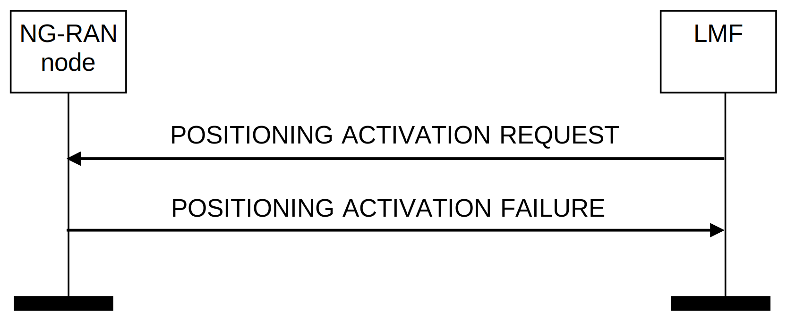

3GPP TS 38.455 V17.9.0 (2024-12)
Technical Specification
3rd Generation Partnership Project;
Technical Specification Group Radio Access Network;
NG-RAN;
NR Positioning Protocol A (NRPPa)
(Release 17)
The present document has been developed within the 3rd Generation
Partnership Project (3GPP TM) and may be further elaborated
for the purposes of 3GPP..
The present document has not been subject to any approval process by the
3GPP Organizational Partners and shall not be implemented.
This Specification is provided for future development work within 3GPP
only. The Organizational Partners accept no liability for any use of
this Specification.
Specifications and Reports for implementation of the 3GPP TM
system should be obtained via the 3GPP Organizational Partners'
Publications Offices.
3GPP
Postal address
3GPP support office address
650 Route des Lucioles - Sophia Antipolis
Valbonne - FRANCE
Tel.: +33 4 92 94 42 00 Fax: +33 4 93 65 47 16
Internet
http://www.3gpp.org
Copyright Notification
No part may be reproduced except as authorized by written
permission.
The copyright and the foregoing restriction extend to reproduction in
all media.
© 2024, 3GPP Organizational Partners (ARIB, ATIS, CCSA, ETSI, TSDSI, TTA, TTC).
All rights reserved.
UMTS™ is a Trade Mark of ETSI registered for the benefit of its members
3GPP™ is a Trade Mark of ETSI registered for the benefit of its
Members and of the 3GPP Organizational Partners
LTE™ is a Trade Mark of ETSI registered for the benefit of its Members
and of the 3GPP Organizational Partners
GSM® and the GSM logo are registered and owned by the GSM Association
Foreword 8
1 Scope 9
2 References 9
3 Definitions, symbols and abbreviations 10
3.1 Definitions 10
3.2 Symbols 10
3.3 Abbreviations 10
4 General 11
4.1 Procedure specification principles 11
4.2 Forwards and backwards compatibility 11
4.3 Specification notations 11
5 NRPPa services 12
5.1 NRPPa procedure modules 12
5.2 Parallel transactions 12
6 Services expected from lower layer 12
7 Functions of NRPPa 12
8 NRPPa procedures 13
8.1 Elementary procedures 13
8.2 Location Information Transfer Procedures 14
8.2.1 E-CID Measurement Initiation 14
8.2.1.1 General 14
8.2.1.2 Successful Operation 15
8.2.1.3 Unsuccessful Operation 15
8.2.1.4 Abnormal Conditions 16
8.2.2 E-CID Measurement Failure Indication 16
8.2.2.1 General 16
8.2.2.2 Successful Operation 16
8.2.2.3 Unsuccessful Operation 16
8.2.2.4 Abnormal Conditions 16
8.2.3 E-CID Measurement Report 16
8.2.3.1 General 16
8.2.3.2 Successful Operation 16
8.2.3.3 Unsuccessful Operation 17
8.2.3.4 Abnormal Conditions 17
8.2.4 E-CID Measurement Termination 17
8.2.4.1 General 17
8.2.4.2 Successful Operation 17
8.2.4.3 Unsuccessful Operation 17
8.2.4.4 Abnormal Conditions 17
8.2.5 OTDOA Information Exchange 18
8.2.5.1 General 18
8.2.5.2 Successful Operation 18
8.2.5.3 Unsuccessful Operation 18
8.2.5.4 Abnormal Conditions 18
8.2.6 Positioning Information Exchange 18
8.2.6.1 General 18
8.2.6.2 Successful Operation 19
8.2.6.3 Unsuccessful Operation 19
8.2.6.4 Abnormal Conditions 20
8.2.7 Positioning Information Update 20
8.2.7.1 General 20
8.2.7.2 Successful Operation 20
8.2.7.3 Unsuccessful Operation 20
8.2.7.4 Abnormal Conditions 20
8.2.8 TRP Information Exchange 20
8.2.8.1 General 20
8.2.8.2 Successful Operation 21
8.2.8.3 Unsuccessful Operation 21
8.2.8.4 Abnormal Conditions 21
8.2.9 Positioning Activation 22
8.2.9.1 General 22
8.2.9.2 Successful Operation 22
8.2.9.3 Unsuccessful Operation 22
8.2.9.4 Abnormal Conditions 23
8.2.10 Positioning Deactivation 23
8.2.10.1 General 23
8.2.10.2 Successful Operation 23
8.2.10.3 Unsuccessful Operation 23
8.2.10.4 Abnormal Conditions 23
8.2.11 PRS Configuration Exchange 23
8.2.11.1 General 23
8.2.11.2 Successful Operation 23
8.2.11.3 Unsuccessful Operation 24
8.2.11.4 Abnormal Conditions 24
8.2.12 Measurement Preconfiguration 24
8.2.12.1 General 24
8.2.12.2 Successful Operation 24
8.2.12.3 Unsuccessful Operation 25
8.2.12.4 Abnormal Conditions 25
8.2.13 Measurement Activation 25
8.2.13.1 General 25
8.2.13.2 Successful Operation 25
8.2.13.3 Unsuccessful Operation 25
8.2.13.4 Abnormal Conditions 26
8.3 Management Procedures 26
8.3.1 Error Indication 26
8.3.1.1 General 26
8.3.1.2 Successful Operation 26
8.3.1.3 Abnormal Conditions 26
8.4 Assistance Information Transfer Procedures 26
8.4.1 Assistance Information Control 26
8.4.1.1 General 26
8.4.1.2 Successful Operation 27
8.4.1.3 Abnormal Conditions 27
8.4.2 Assistance Information Feedback 27
8.4.2.1 General 27
8.4.2.2 Successful Operation 27
8.4.2.3 Abnormal Conditions 28
8.5 Measurement Information Transfer 28
8.5.1 Measurement 28
8.5.1.1 General 28
8.5.1.2 Successful Operation 28
8.5.1.3 Unsuccessful Operation 29
8.5.1.4 Abnormal Conditions 29
8.5.2 Measurement Report 29
8.5.2.1 General 29
8.5.2.2 Successful Operation 30
8.5.2.3 Abnormal Conditions 30
8.5.3 Measurement Update 30
8.5.3.1 General 30
8.5.3.2 Successful Operation 30
8.5.3.3 Unsuccessful Operation 31
8.5.3.4 Abnormal Conditions 31
8.5.4 Measurement Abort 31
8.5.4.1 General 31
8.5.4.2 Successful Operation 31
8.5.4.3 Unsuccessful Operation 31
8.5.4.4 Abnormal Conditions 31
8.5.5 Measurement Failure Indication 31
8.5.5.1 General 31
8.5.5.2 Successful Operation 32
8.5.5.3 Abnormal Conditions 32
9 Elements for NRPPa Communication 32
9.0 General 32
9.1 Message Functional Definition and Content 32
9.1.1 Messages for Location Information Transfer Procedures 32
9.1.1.1 E-CID MEASUREMENT INITIATION REQUEST 32
9.1.1.2 E-CID MEASUREMENT INITIATION RESPONSE 34
9.1.1.3 E-CID MEASUREMENT INITIATION FAILURE 34
9.1.1.4 E-CID MEASUREMENT FAILURE INDICATION 34
9.1.1.5 E-CID MEASUREMENT REPORT 35
9.1.1.6 E-CID MEASUREMENT TERMINATION COMMAND 35
9.1.1.7 OTDOA INFORMATION REQUEST 35
9.1.1.8 OTDOA INFORMATION RESPONSE 36
9.1.1.9 OTDOA INFORMATION FAILURE 37
9.1.1.10 POSITIONING INFORMATION REQUEST 37
9.1.1.11 POSITIONING INFORMATION RESPONSE 37
9.1.1.12 POSITIONING INFORMATION FAILURE 38
9.1.1.13 POSITIONING INFORMATION UPDATE 38
9.1.1.14 TRP INFORMATION REQUEST 38
9.1.1.15 TRP INFORMATION RESPONSE 39
9.1.1.16 TRP INFORMATION FAILURE 39
9.1.1.17 POSITIONING ACTIVATION REQUEST 39
9.1.1.18 POSITIONING ACTIVATION RESPONSE 40
9.1.1.19 POSITIONING ACTIVATION FAILURE 40
9.1.1.20 POSITIONING DEACTIVATION 40
9.1.1.21 PRS CONFIGURATION REQUEST 41
9.1.1.22 PRS CONFIGURATION RESPONSE 41
9.1.1.23 PRS CONFIGURATION FAILURE 42
9.1.1.24 MEASUREMENT PRECONFIGURATION REQUIRED 42
9.1.1.25 MEASUREMENT PRECONFIGURATION CONFIRM 42
9.1.1.26 MEASUREMENT PRECONFIGURATION REFUSE 43
9.1.1.27 MEASUREMENT ACTIVATION 43
9.1.2 Messages for Management Procedures 44
9.1.2.1 ERROR INDICATION 44
9.1.3 Messages for Assistance Information Transfer Procedures 44
9.1.3.1 ASSISTANCE INFORMATION CONTROL 44
9.1.3.2 ASSISTANCE INFORMATION FEEDBACK 45
9.1.4 Messages for Measurement Information Transfer Procedures 45
9.1.4.1 MEASUREMENT REQUEST 45
9.1.4.2 MEASUREMENT RESPONSE 47
9.1.4.3 MEASUREMENT FAILURE 47
9.1.4.4 MEASUREMENT REPORT 48
9.1.4.5 MEASUREMENT UPDATE 48
9.1.4.6 MEASUREMENT ABORT 49
9.1.4.7 MEASUREMENT FAILURE INDICATION 49
9.2 Information Element definitions 49
9.2.0 General 49
9.2.1 Cause 50
9.2.2 Criticality Diagnostics 51
9.2.3 Message Type 52
9.2.4 NRPPa Transaction ID 52
9.2.5 E-CID Measurement Result 52
9.2.6 NG-RAN CGI 55
9.2.7 CGI EUTRA 56
9.2.8 PLMN Identity 56
9.2.9 NR CGI 56
9.2.10 NG-RAN Access Point Position 56
9.2.11 TAC 57
9.2.12 Cell Portion ID 57
9.2.13 Other-RAT Measurement Result 57
9.2.14 WLAN Measurement Result 59
9.2.15 OTDOA Cell Information 60
9.2.16 PRS Muting Configuration EUTRA 62
9.2.17 PRS Frequency Hopping Configuration EUTRA 63
9.2.18 TDD Configuration EUTRA 63
9.2.19 Assistance Information 63
9.2.20 PosSIB Segments 64
9.2.21 Assistance Information Meta Data 64
9.2.22 Positioning SIB Type 64
9.2.23 Assistance Information Failure List 65
9.2.24 TRP ID 65
9.2.25 TRP Information 66
9.2.26 Search Window Information 66
9.2.27 Requested SRS Transmission Characteristics 67
9.2.28 SRS Configuration 68
9.2.29 SRS Resource 70
9.2.30 Positioning SRS Resource 71
9.2.31 SRS Resource Set 72
9.2.32 Positioning SRS Resource Set 73
9.2.33 SRS Resource Set ID 73
9.2.34 Spatial Relation Information 73
9.2.35 SRS Resource Trigger 74
9.2.36 Relative Time 1900 74
9.2.37 TRP Measurement Result 75
9.2.38 UL Angle of Arrival 75
9.2.39 UL RTOA Measurement 75
9.2.40 gNB Rx-Tx Time Difference 76
9.2.41 Additional Path List 76
9.2.42 Time Stamp 77
9.2.43 Measurement Quality 77
9.2.44 PRS Configuration 78
9.2.45 Spatial Direction Information 79
9.2.46 Geographical Coordinates 79
9.2.47 DL-PRS Resource Coordinates 80
9.2.48 Relative Geodetic Location 81
9.2.49 NG-RAN High Accuracy Access Point Position 81
9.2.50 Relative Cartesian Location 82
9.2.51 Reference Point 82
9.2.52 Location Uncertainty 82
9.2.53 Pathloss Reference Information 83
9.2.54 SSB Information 83
9.2.55 SSB Time/Frequency Configuration 83
9.2.56 DL-PRS Muting Pattern 84
9.2.57 Measurement Beam Information 84
9.2.58 NR-PRS Beam Information 84
9.2.59 Positioning Broadcast Cells 85
9.2.60 Spatial Relation Information per SRS Resource 86
9.2.61 Requested DL PRS Transmission Characteristics 86
9.2.62 Requested DL-PRS Resource List 87
9.2.63 Start Time and Duration 87
9.2.64 PRS Transmission Off Information 87
9.2.65 On-demand PRS TRP Information 88
9.2.66 UL-AoA assistance information 90
9.2.67 Z-AoA 90
9.2.68 Response Time 90
9.2.69 LCS to GCS Translation 91
9.2.70 UE Reporting Information 91
9.2.71 Multiple UL-AoA 91
9.2.72 UL SRS-RSRPP 92
9.2.73 SRS Resource type 92
9.2.74 Extended Additional Path List 92
9.2.75 ARP ID 92
9.2.76 ARP Location Information 93
9.2.77 LoS/NLoS Information 93
9.2.78 UE Tx TEG Association List 93
9.2.79 TRP Tx TEG Association 94
9.2.80 TRP TEG Information 94
9.2.81 Measurement Characteristics Request Indicator 95
9.2.82 TRP Beam Antenna Information 95
9.2.83 TRP Beam Antenna Angles 96
9.2.84 Timing Error Margin 97
9.2.85 TRP Rx TEG Information 97
9.2.86 TRP Tx TEG Information 97
9.2.87 TRP RxTx TEG Information 98
9.3 Message and Information Element Abstract Syntax (with ASN.1) 99
9.3.1 General 99
9.3.2 Usage of Private Message Mechanism for Non-standard Use 99
9.3.3 Elementary Procedure Definitions 99
9.3.4 PDU Definitions 106
9.3.5 Information Element definitions 124
9.3.6 Common definitions 187
9.3.7 Constant definitions 188
9.3.8 Container definitions 193
9.4 Message transfer syntax 197
9.5 Timers 197
10 Handling of unknown, unforeseen and erroneous protocol data 197
Annex A (informative): Change history 198
This Technical Specification has been produced by the 3rd Generation Partnership Project (3GPP).
The contents of the present document are subject to continuing work within the TSG and may change following formal TSG approval. Should the TSG modify the contents of the present document, it will be re-released by the TSG with an identifying change of release date and an increase in version number as follows:
Version x.y.z
where:
x the first digit:
1 presented to TSG for information;
2 presented to TSG for approval;
3 or greater indicates TSG approved document under change control.
y the second digit is incremented for all changes of substance, i.e. technical enhancements, corrections, updates, etc.
z the third digit is incremented when editorial only changes have been incorporated in the document.
The present document specifies the control plane radio network layer signalling procedures between a NG-RAN node and the LMF. NRPPa supports the concerned functions by signalling procedures defined in this document.
The following documents contain provisions which, through reference in this text, constitute provisions of the present document.
- References are either specific (identified by date of publication, edition number, version number, etc.) or non‑specific.
- For a specific reference, subsequent revisions do not apply.
- For a non-specific reference, the latest version applies. In the case of a reference to a 3GPP document (including a GSM document), a non-specific reference implicitly refers to the latest version of that document in the same Release as the present document.
[1] 3GPP TR 21.905: "Vocabulary for 3GPP Specifications".
[2] 3GPP TS 38.413:"NG-RAN; NG Application Protocol (NGAP)".
[3] 3GPP TS 38.300: "NR; NR and NG-RAN Overall Description; Stage 2".
[4] Void.
[5] 3GPP TR 25.921 (version.7.0.0): "Guidelines and principles for protocol description and error handling".
[6] ITU-T Recommendation X.691 (2002-07): "Information technology - ASN.1 encoding rules - Specification of Packed Encoding Rules (PER) ".
[7] 3GPP TS 36.104: "Evolved Universal Terrestrial Radio Access Network (E-UTRAN); Base Station (BS) radio transmission and reception".
[8] 3GPP TS 23.032:"Technical Specification Group Services and System Aspects; Universal Geographical Area Description (GAD)".
[9] 3GPP TS 36.133: "Evolved Universal Terrestrial Radio Access (E-UTRA); Requirements for support of radio resource management".
[10] 3GPP TS 36.211:"Evolved Universal Terrestrial Radio Access Network (E-UTRAN); Physical Channels and Modulation".
[11] IEEE Std 802.11™-2012, IEEE Standard for Information technology - Telecommunications and information exchange between systems - Local and metropolitan area network.
[12] 3GPP TS 36.455: " Evolved Universal Terrestrial Radio Access (E-UTRA); LTE Positioning Protocol A (LPPa)".
[13] 3GPP TS 38.331: "NR; Radio Resource Control (RRC); Protocol specification".
[14] 3GPP TS 37.355: " Technical Specification Group Radio Access Network; LTE Positioning Protocol (LPP)".
[15] 3GPP TS 38.321: "NR; Medium Access Control (MAC) protocol specification".
[16] 3GPP TS 38.133: "NR; Requirements for support of radio resource management".
[17] 3GPP TS 36:214: "Evolved Universal Terrestrial Radio Access (E-UTRA); Physical layer (PHY); Measurements".
[18] 3GPP TS 38.305: "NG Radio Access Network (NG-RAN); Stage 2 functional specification of User Equipment (UE) positioning in NG-RAN".
[19] 3GPP TS 38.215: "NR; Physical layer (PHY); Measurements".
For the purposes of the present document, the terms and definitions given in 3GPP TR 21.905 [1] and the following apply. A term defined in the present document takes precedence over the definition of the same term, if any, in 3GPP TR 21.905 [1].
gNB: as defined in TS 38.300 [3].
NG-RAN node: as defined in TS 38.300 [3].
ng-eNB: as defined in TS 38.300 [3].
For the purposes of the present document, the following symbols apply:
<symbol> <Explanation>
For the purposes of the present document, the abbreviations given in 3GPP TR 21.905 [1] and the following apply. An abbreviation defined in the present document takes precedence over the definition of the same abbreviation, if any, in 3GPP TR 21.905 [1].
ARP Antenna Reference Point
BDS BeiDou Navigation Satellite System
CG-SDT Configured Grant Small Data Transmission
CID Cell-ID (positioning method)
DL-PRS Downlink Positioning Reference Signal
E-CID Enhanced Cell-ID (positioning method)
EGNOS European Geostationary Navigation Overlay Service
GAGAN GPS Aided Geo Augmented Navigation
GLONASS GLObal'naya NAvigatsionnaya Sputnikovaya Sistema (Engl.: Global Navigation Satellite System
GNSS Global Navigation Satellite System
GPS Global Positioning System
LMF Location Management Function
LPP LTE Positioning Protocol
MSAS Multi-functional Satellite Augmentation System
NavIC NAVigation with Indian Constellation
NRPPa NR Positioning Protocol A
OTDOA Observed Time Difference of Arrival
posSIB Positioning SIB
PRS Positioning Reference Signal (for E-UTRA)
QZSS Quasi-Zenith Satellite System
RSRP Reference Signal Received Power
RSSI Received Signal Strength Indicator
RSTD Reference Signal Time Difference
SBAS Space Based Augmentation System
SRS Sounding Reference Signal
TEG Timing Error group
TRP Transmission-Reception Point
UE User Equipment
UL-AoA Uplink Angle of Arrival
UL-RTOA Uplink Relative Time of Arrival
UL-SRS Uplink Sounding Reference Signal
UL SRS-RSRPP UL SRS reference signal received path power
WAAS Wide Area Augmentation System
Z-AoA Zenith Angles of Arrival
The principle for specifying the procedure logic is to specify the functional behaviour of the terminating NG-RAN Node exactly and completely. Any rule that specifies the behaviour of the originating NG-RAN Node shall be possible to be verified with information that is visible within the system.
The following specification principles have been applied for the procedure text in clause 8:
- The procedure text discriminates between:
1) Functionality which "shall" be executed
The procedure text indicates that the receiving node "shall" perform a certain function Y under a certain condition. If the receiving node supports procedure X but cannot perform functionality Y requested in the initiating message of a Class 1 EP, the receiving node shall respond with the message used to report unsuccessful outcome for this procedure, containing an appropriate cause value.
2) Functionality which "shall, if supported" be executed
The procedure text indicates that the receiving node "shall, if supported," perform a certain function Y under a certain condition. If the receiving node supports procedure X, but does not support functionality Y, the receiving node shall proceed with the execution of the EP, possibly informing the requesting node about the not supported functionality.
- Any required inclusion of an optional IE in a response message is explicitly indicated in the procedure text. If the procedure text does not explicitly indicate that an optional IE shall be included in a response message, the optional IE shall not be included. For requirements on including Criticality Diagnostics IE, see section 10.
The forwards and backwards compatibility of the protocol is assured by a mechanism where all current and future messages, and IEs or groups of related IEs, include ID and criticality fields that are coded in a standard format that will not be changed in the future. These parts can always be decoded regardless of the standard version.
For the purposes of the present document, the following notations apply:
Procedure When referring to an elementary procedure in the specification the Procedure Name is written with the first letters in each word in upper case characters followed by the word "procedure", e.g. Handover Preparation procedure.
Message When referring to a message in the specification the MESSAGE NAME is written with all letters in upper case characters followed by the word "message", e.g. ERROR INDICATION message.
IE When referring to an information element (IE) in the specification the Information Element Name is written with the first letters in each word in upper case characters and all letters in Italic font followed by the abbreviation "IE", e.g. Cause IE.
Value of an IE When referring to the value of an information element (IE) in the specification the "Value" is written as it is specified in sub clause 9.2 enclosed by quotation marks, e.g. "Value".
The present clause describes the services an NG -RAN Node offers to the LMF.
The procedures are divided into two modules as follows:
1. NRPPa Location Information Transfer Procedures;
2. NRPPa Management Procedures;
The NRPPa Location Information Transfer Procedures module contains procedures used to handle the transfer of positioning related information between NG-RAN Node and LMF.
The Management Procedures module contains procedures that are not related specifically to positioning, i.e. error handling.
Unless explicitly indicated in the procedure specification, at any instance in time one protocol peer may have more than one ongoing NRPPa procedure.
Within 5G RAN, NRPPa protocol uses the services provided by the NGAP protocol. An NRPPa message is carried inside an NGAP message.
NGAP signalling is described in TS 38.413 [2].
The NRPPa protocol provides the following functions:
- E-CID Location Information Transfer. This function allows the NG-RAN node to exchange location information with LMF for the purpose of E-CID positioning and NR E-CID positioning.
- OTDOA Information Transfer. This function allows the NG-RAN node to exchange information with the LMF for the purpose of OTDOA positioning.
- Reporting of General Error Situations. This function allows reporting of general error situations, for which function specific error messages have not been defined.
- Assistance Information Transfer. This function allows the LMF to exchange information with the NG-RAN node for the purpose of assistance information broadcasting.
- Positioning Information Transfer. This function allows the NG-RAN node to exchange positioning information with the LMF for the purpose of positioning.
- Measurement Information Transfer. This function allows the LMF to exchange measurement information with the NG-RAN node for the purpose of positioning.
- TRP Information Transfer. This function allows an LMF to obtain TRP related information from an NG-RAN node.
- PRS Information Transfer. This function allows the LMF to exchange PRS related information with the NG-RAN node.
- Measurement Preconfiguration Information Transfer. This function allows the LMF to request the NG-RAN node to preconfigure and activate measurement gap and/or PRS processing window.
The mapping between the above functions and NRPPa EPs is shown in the table below.
Table 7-1: Mapping between NRPPa functions and NRPPa EPs
| Function | Elementary Procedure(s) |
|---|---|
| E-CID Location Information Transfer | a) E-CID Measurement Initiation b) E-CID Measurement Failure Indication c) E-CID Measurement Report d) E-CID Measurement Termination |
| OTDOA Information Transfer | OTDOA Information Exchange |
| Assistance Information Transfer | a) Assistance Information Control b) Assistance Information Feedback |
| Reporting of General Error Situations | Error Indication |
| Positioning Information Transfer | a) Positioning Information Exchange b) Positioning Information Update c) Positioning Activation d) Positioning Deactivation |
| TRP Information Transfer | TRP Information Exchange |
| Measurement Information Transfer | a) Measurement b) Measurement Update c) Measurement Report d) Measurement Abort e) Measurement Failure Indication |
| PRS Information Transfer | PRS Configuration Exchange |
| Measurement Preconfiguration Information Transfer | Measurement Preconfiguration Measurement Activation |
In the following tables, all EPs are divided into Class 1 and Class 2 EPs.
Table 8.1-1: Class 1 Elementary Procedures
| Elementary Procedure | Initiating Message | Successful Outcome | Unsuccessful Outcome |
|---|---|---|---|
| Response message | Response message | ||
| E-CID Measurement Initiation | E-CID MEASUREMENT INITIATION REQUEST | E-CID MEASUREMENT INITIATION RESPONSE | E-CID MEASUREMENT INITIATION FAILURE |
| OTDOA Information Exchange | OTDOA INFORMATION REQUEST | OTDOA INFORMATION RESPONSE | OTDOA INFORMATION FAILURE |
| Positioning Information Exchange | POSITIONING INFORMATION REQUEST | POSITIONING INFORMATION RESPONSE | POSITIONING INFORMATION FAILURE |
| TRP Information Exchange | TRP INFORMATION REQUEST | TRP INFORMATION RESPONSE | TRP INFORMATION FAILURE |
| Measurement | MEASUREMENT REQUEST | MEASUREMENT RESPONSE | MEASUREMENT FAILURE |
| Positioning Activation | POSITIONING ACTIVATION REQUEST | POSITIONING ACTIVATION RESPONSE | POSITIONING ACTIVATION FAILURE |
| PRS Configuration Exchange | PRS CONFIGURATION REQUEST | PRS CONFIGURATION RESPONSE | PRS CONFIGURATION FAILURE |
| Measurement Preconfiguration | MEASUREMENT PRECONFIGURATION REQUIRED | MEASUREMENT PRECONFIGURATION CONFIRM | MEASUREMENT PRECONFIGURATION REFUSE |
Table 8.1-2: Class 2 Elementary Procedures
| Elementary Procedure | Initiating Message |
|---|---|
| E-CID Measurement Failure Indication | E-CID MEASUREMENT FAILURE INDICATION |
| E-CID Measurement Report | E-CID MEASUREMENT REPORT |
| E-CID Measurement Termination | E-CID MEASUREMENT TERMINATION COMMAND |
| Error Indication | ERROR INDICATION |
| Assistance Information Control | ASSISTANCE INFORMATION CONTROL |
| Assistance Information Feedback | ASSISTANCE INFORMATION FEEDBACK |
| Positioning Information Update | POSITIONING INFORMATION UPDATE |
| Measurement Report | MEASUREMENT REPORT |
| Measurement Update | MEASUREMENT UPDATE |
| Measurement Abort | MEASUREMENT ABORT |
| Measurement Failure Indication | MEASUREMENT FAILURE INDICATION |
| Positioning Deactivation | POSITIONING DEACTIVATION |
| Measurement Activation | MEASUREMENT ACTIVATION |
The purpose of E-CID Measurement Initiation procedure is to allow the LMF to request the NG-RAN node to report E-CID measurements used by LMF to compute the location of the UE.
Figure 8.2.1.2-1: E-CID Measurement Initiation procedure, successful operation
The LMF initiates the procedure by sending an E-CID MEASUREMENT INITIATION REQUEST message. If the NG-RAN node is able to initiate the requested E-CID measurements, it shall reply with the E-CID MEASUREMENT INITIATION RESPONSE message.
The Measured Results IE shall be included in the E-CID Measurement Result IE of the E-CID MEASUREMENT INITIATION RESPONSE message when measurement results other than the "Cell-ID" have been requested.
If the Report Characteristics IE is set to "OnDemand", the NG-RAN node shall return the result of the measurement in the E-CID MEASUREMENT INITIATION RESPONSE message including, if available, the NG-RAN Access Point Position IE or the Geographical Coordinates IE in the E-CID Measurement Result IE, and the LMF shall consider that the E-CID measurements for the UE has been terminated by the NG-RAN node. If available, the NG-RAN node shall include the Cell Portion ID IE in the E-CID MEASUREMENT INITIATION RESPONSE message. Upon reception of the Cell Portion ID IE, the LMF may use the value as the cell portion for the measurement. If the Report Characteristics IE is set to "OnDemand" and the Inter-RAT Measurement Quantities IE is included in the E-CID MEASUREMENT INITIATION REQUEST message, the NG-RAN node shall, if supported, provide the corresponding measurements, if available in the NG-RAN node, in the Inter-RAT Measurement Result IE in E-CID MEASUREMENT INITIATION RESPONSE message. If the Report Characteristics IE is set to "OnDemand" and the WLAN Measurement Quantities IE is included in the E-CID MEASUREMENT INITIATION REQUEST message, the NG-RAN node shall, if supported, provide the corresponding measurements, if available in the NG-RAN node, in the WLAN Measurement Result IE in E-CID MEASUREMENT INITIATION RESPONSE message.
If the Report Characteristics IE is set to "Periodic", the NG-RAN node shall initiate the requested measurements and shall reply with the E-CID MEASUREMENT INITIATION RESPONSE message without including either the E-CID Measurement Result IE or the Cell Portion ID IE in this message. The NG-RAN node shall then periodically initiate the E-CID Measurement Report procedure for the measurements, with the requested reporting periodicity.
Figure 8.2.1.3-1: E-CID Measurement Initiation procedure, unsuccessful operation
If the NG-RAN node is not able to initiate at least one of the requested E-CID measurements, the NG-RAN node shall respond with an E-CID MEASUREMENT INITIATION FAILURE message.
Void.
The purpose of the E-CID Measurement Failure Indication procedure is for the NG-RAN node to notify the LMF that the E-CID measurements previously requested with the E-CID Measurement Initiation procedure can no longer be reported.
Figure 8.2.2.2-1: E-CID Measurement Failure Indication, successful operation
Upon reception of the E-CID MEASUREMENT FAILURE INDICATION message, the LMF shall consider that the E-CID measurements for the UE have been terminated by the NG-RAN node.
Not applicable.
Void.
The purpose of E-CID Measurement Report procedure is for the NG-RAN node to provide the E-CID measurements for the UE to the LMF.
Figure 8.2.3.2-1: E-CID Measurement Report procedure, successful operation
The NG-RAN node initiates the procedure by sending an E-CID MEASUREMENT REPORT message. The E-CID MEASUREMENT REPORT message contains the E-CID measurement results according to the measurement configuration in the respective E-CID MEASUREMENT INITIATION REQUEST message.
The Measured Results IE shall be included in the E-CID Measurement Result IE of the E-CID MEASUREMENT REPORT message when measurement results other than the "Cell-ID" have been requested.
If available, the NG-RAN node shall include the NG-RAN Access Point Position IE or the Geographical Coordinates IE which is the configured estimated serving antenna position in the E-CID Measurement Result IE within the E-CID MEASUREMENT REPORT message. Upon reception of this NG-RAN Access Point Position IE, the LMF may use the value as the geographical position of the NG-RAN access point.
If available, the NG-RAN node shall include the Cell Portion ID IE in the E-CID MEASUREMENT REPORT message. Upon reception of the Cell Portion ID IE, the LMF may use the value as the cell portion for the measurement.
Not applicable.
Void.
The purpose of E-CID Measurement Termination procedure is to terminate periodical E-CID measurements for the UE performed by the NG-RAN node.
Figure 8.2.4.2-1: E-CID Measurement Termination procedure, successful operation
The LMF initiates the procedure by generating an E-CID MEASUREMENT TERMINATION COMMAND message.
Not applicable.
Void.
The purpose of the OTDOA Information Exchange procedure is to allow the LMF to request the NG-RAN node to transfer OTDOA information to the LMF.
Figure 8.2.5.2-1: OTDOA Information Exchange procedure, successful operation
The LMF initiates the procedure by sending an OTDOA INFORMATION REQUEST message. The NG-RAN node responds with OTDOA INFORMATION RESPONSE message that contains the available OTDOA information applicable to the relevant cells/TPs.
Figure 8.2.5.3-1: OTDOA Information Exchange procedure, unsuccessful operation
If the NG-RAN node does not have any OTDOA information to report, the NG-RAN node shall respond with an OTDOA INFORMATION FAILURE message.
Void.
The Positioning Information Exchange procedure is initiated by the LMF to request to the NG-RAN node positioning information for the UE. This procedure applies only if the NG-RAN node is a gNB.
Figure 8.2.6.2-1: Positioning Information Exchange procedure, successful operation
The LMF initiates the procedure by sending a POSITIONING INFORMATION REQUEST message to the NG-RAN node.
If the Requested SRS Transmission Characteristics IE is included in the POSITIONING INFORMATION REQUEST message, the NG-RAN node may take this information into account when configuring SRS transmissions for the UE, and it shall include the SRS Configuration IE and the SFN Initialisation Time IE in the POSITIONING INFORMATION RESPONSE message.
If the Spatial Relation Information per SRS Resource IE and the Periodicity List IE are both included in the Requested SRS Transmission Characteristics IE, the NG-RAN node shall consider that the Spatial Relation per SRS Resource Item IE and the Periodicity List Item IE have one-to-one mapping relation.
If the UE Reporting Information IE is included in the POSITIONING INFORMATION REQUEST message, the NG-RAN node may take this information into account for allocating proper CG-SDT resources when positioning a UE.
If the UE TEG Information Request IE is included in the POSITIONING INFORMATION REQUEST message and set to "onDemand", the NG-RAN node shall, if supported, provide the UE Tx TEG association in the POSITIONING INFORMATION RESPONSE message.
If the UE TEG Information Request IE is set to "periodic", the NG-RAN node shall, if supported, reply with the POSITIONING INFORMATION RESPONSE message without including any UE Tx TEG association in this message. The NG-RAN node shall then take the UE TEG Reporting Periodicity IE into account when configuring the UE’s periodic UE Tx TEG association reporting and initiate the Positioning Information Update procedure for reporting the UE Tx TEG association received from the UE, if any.
Figure 8.2.6.3-1: Positioning Information Exchange procedure, unsuccessful operation
If the Requested SRS Transmission Characteristics IE is included in the POSITIONING INFORMATION REQUEST message and the NG-RAN node is unable to configure any SRS transmissions for the UE, it shall respond with a POSITIONING INFORMATION FAILURE message. If a handover of the target UE has been triggered, the NG-RAN node shall send a POSITIONING INFORMATION FAILURE message with an appropriate cause value.
If the NG-RAN node is unable to provide any of the requested information, the NG-RAN node shall respond with a POSITIONING INFORMATION FAILURE message with an appropriate cause value.
Void.
The Positioning Information Update procedure is initiated by the NG-RAN node to indicate to the LMF that a change has occurred in the SRS configuration or in the UE Tx TEG association. This procedure applies only if the NG-RAN node is a gNB.
Figure 8.2.7.2-1: Positioning Information Update procedure, successful operation
The NG-RAN node initiates the procedure by sending a POSITIONING INFORMATION UPDATE message to the LMF. If the SRS Configuration IE is included in the POSITIONING INFORMATION UPDATE message, the LMF shall consider this information as the updated SRS Configuration for the UE. If the SFN Initialisation Time IE is included in the POSITIONING INFORMATION UPDATE message, the LMF shall consider this information as the SFN Initialisation Time associated to the SRS Configuration.
If the UE Tx TEG Association List IE is included in the POSITIONING INFORMATION UPDATE message, the LMF shall consider it as the UE Tx TEG association for the SRS resources that have changed their TEG association during the latest reporting interval.
If the SRS Transmission Status IE is included in the POSITIONING INFORMATION UPDATE message and set to "stopped", the LMF shall consider that the SRS transmission has stopped.
Not Applicable.
Void.
The purpose of the TRP Information Exchange procedure is to allow the LMF to request the NG-RAN node to provide detailed information for TRPs hosted by the NG-RAN node. This procedure applies only if the NG-RAN node is a gNB.
Figure 8.2.8.2-1: TRP Information Exchange procedure, successful operation
The LMF initiates the procedure by sending a TRP INFORMATION REQUEST message. The NG-RAN node responds with a TRP INFORMATION RESPONSE message that contains the requested TRP information.
If the TRP List IE is included in the TRP INFORMATION REQUEST message, the NG-RAN node should include in the TRP INFORMATION RESPONSE message, the requested information for all TRPs included in the TRP List IE.
If the TRP List IE is not included in the TRP INFORMATION REQUEST message, the NG-RAN node should include the requested information for all TRPs hosted by the NG-RAN node in the TRP INFORMATION RESPONSE message
If the PRS Muting IE is included in the PRS Configuration IE in the TRP INFORMATION RESPONSE message, the LMF may take it into account as the muting information for the given PRS resource set.
If the QCL Info IE is included in the PRS Configuration IE in the TRP INFORMATION RESPONSE message, the LMF may take it into account for the given PRS resource list.
If the DL-PRS Resource Coordinates IE is included in the Geographical Coordinates IE in the TRP Information IE in the TRP INFORMATION RESPONSE message, the LMF may take it into account as the DL PRS Resource Coordinates relative to the TRP coordinate.
Figure 8.2.8.3-1: TRP Information Exchange procedure, unsuccessful operation
If the NG-RAN node cannot provide any of the requested information for any TRP, the NG-RAN node shall respond with a TRP INFORMATION FAILURE message.
Void.
The Positioning Activation procedure is initiated by the LMF to request the NG-RAN node to activate semi-persistent or trigger aperiodic UL SRS transmission by the UE. This procedure applies only if the NG-RAN node is a gNB.
Figure 8.2.9.2-1: Positioning Activation procedure, successful operation
The LMF initiates the procedure by sending a POSITIONING ACTIVATION REQUEST message to the NG-RAN node.
For semi-persistent UL SRS, the POSITIONING ACTIVATION REQUEST message includes an indication of the UL SRS resource set to be activated and may include the spatial relation for the semi-persistent UL SRS resource to be activated. For aperiodic UL SRS, if the SRS Resource Trigger IE is included in the POSITIONING ACTIVATION REQUEST message, the NG-RAN node shall take the value of this IE into account when triggering aperiodic SRS transmission by the UE.
If the Activation Time IE is included in the POSITIONING ACTIVATION REQUEST message, the NG-RAN node shall take the indicated value as the LMF’s requested time for activation of the UE’s SRS transmission.
Following successful activation of UL SRS transmission in the UE, the NG-RAN node shall respond with a POSITIONING ACTIVATION RESPONSE message. If the POSITIONING ACTIVATION RESPONSE message includes the System Frame Number and/or the Slot Number IEs, the LMF shall consider that the respective information indicates the activation time of SRS transmission by the UE.

Figure 8.2.9.3-1: Positioning Activation procedure, unsuccessful operation
If the NG-RAN node is unable to activate UL SRS transmission in the UE, it shall respond with a POSITIONING ACTIVATION FAILURE message.
If the NG-RAN node is unable to trigger the aperiodic SRS transmission with the indicated SRS Resource Trigger IE, it shall respond with a POSITIONING ACTIVATION FAILURE message with an appropriate cause value.
Void.
The Positioning Deactivation procedure is initiated by the LMF to indicate to the NG-RAN node that UL SRS transmission should be deactivated in the UE. This procedure applies only if the NG-RAN node is a gNB.
Figure 8.2.10.2-1: Positioning Deactivation procedure, successful operation
The LMF initiates the procedure by sending a POSITIONING DEACTIVATION message to the NG-RAN node. This message shall include an indication of the UL SRS resource set to be deactivated or release all the related resources.
Not Applicable.
Void.
The PRS Configuration Exchange procedure is initiated by the LMF to request the NG-RAN node to configure or update (i.e., turn off) PRS transmission. This procedure applies only if the NG-RAN node is a gNB.
Figure 8.2.11.2-1: PRS Configuration Exchange procedure, successful operation
The LMF initiates the procedure by sending a PRS CONFIGURATION REQUEST message to the NG-RAN.
If the PRS Configuration Request Type IE is set to “configure”, the NG-RAN node should use the information in the Requested DL PRS Transmission Characteristics IE to configure DL-PRS transmission by the indicated TRP(s).
If the PRS Configuration Request Type IE is set to “off”, the NG-RAN node should, if supported, use the information in the PRS Transmission Off Information IE to turn off the DL-PRS transmission for the indicated TRP(s), PRS Resource Set(s), or PRS Resource(s).
If DL-PRS transmission is successfully configured or updated for at least one of the TRPs, the NG-RAN node shall respond with a PRS CONFIGURATION RESPONSE message.
Figure 8.2.11.3-1: PRS Configuration Exchange procedure, unsuccessful operation
If the NG-RAN node cannot configure or update DL-PRS transmission for any of the TRPs in the PRS TRP List IE of the PRS CONFIGURATION REQUEST message, it shall respond with a PRS CONFIGURATION FAILURE message with an appropriate cause value.
Void.
The Measurement Preconfiguration procedure allows the LMF to provide necessary information to the serving gNB and request the gNB to preconfigure measurement gap and/or PRS processing window for the UE. This procedure applies only if the NG-RAN node is a gNB.
Figure 8.2.12.2-1: Measurement Preconfiguration procedure, successful operation
The LMF initiates the procedure by sending a MEASUREMENT PRECONFIGURATION REQUIRED message.
If the NG-RAN node is able to configure measurement gap or PRS processing window, it shall reply with the MEASUREMENT PRECONFIGURATION CONFIRM message.
Figure 8.2.12.3-1: Measurement Preconfiguration procedure, unsuccessful operation
If the NG-RAN node cannot configure any of the measurement gap or PRS processing window, the NG-RAN node shall respond with a MEASUREMENT PRECONFIGURATION REFUSE message. Upon receiving the MEASUREMENT PRECONFIGURATION REFUSE message, the LMF shall release the reserved PPW resources.
Void.
The Measurement Activation procedure is initiated by the LMF to request the NG-RAN node to activate or deactivate the preconfigured measurement gap or PRS processing window for the UE. This procedure applies only if the NG-RAN node is a gNB.
Figure 8.2.13.2-1: Measurement Activation procedure, successful operation
The LMF initiates the procedure by sending a MEASUREMENT ACTIVATION message to the NG-RAN node.
If the PRS Measurement Info List IE is included in the MEASUREMENT ACTIVATION message, the NG-RAN node may take it into account when activating pre-configured measurement gap in the UE.
Not Applicable.
Void.
The Error Indication procedure is initiated by a node to report detected errors in one incoming message, provided they cannot be reported by an appropriate failure message.
Figure 8.3.1.2-1: Error Indication procedure, LMF originated, successful operation
Figure 8.3.1.2-2: Error Indication procedure, NG-RAN node originated, successful operation
When the conditions defined in clause 10 are fulfilled, the Error Indication procedure is initiated by an ERROR INDICATION message sent from the receiving node.
The ERROR INDICATION message shall contain at least either the Cause IE or the Criticality Diagnostics IE.
Not applicable.
The purpose of the Assistance Information Control procedure is to allow the LMF to signal positioning assistance information to the NG-RAN Node for assistance information broadcasting. This procedure applies only if the NG-RAN node is a gNB.
Figure 8.4.1.2-1: Assistance Information Control procedure
The LMF initiates the procedure by sending an ASSISTANCE INFORMATION CONTROL message.
If the Assistance Information IE is included in the ASSISTANCE INFORMATION CONTROL message, the NG-RAN Node shall, if supported, replace any previously stored assistance information and use the received information to configure assistance information broadcasting.
If the Broadcast Priority IE is included in the Assistance Information IE, the NG-RAN Node may take it into account when configuring broadcasting for the relevant information. Assistance information having the same Broadcast Priority value should receive the same treatment (i.e. broadcast by the NG-RAN Node or not broadcast).
If the Broadcast IE is included in the ASSISTANCE INFORMATION CONTROL message and set to "start", the NG-RAN Node may start broadcasting the assistance information. If the Broadcast IE is included in the ASSISTANCE INFORMATION CONTROL message and set to "stop", the NG-RAN Node may stop broadcasting the assistance information.
If the Positioning Broadcast Cells IE is included in the ASSISTANCE INFORMATION CONTROL message, the NG-RAN shall, if supported, consider that the received assistance information is applicable to the cells in this IE.
If the Broadcast IE is included in the ASSISTANCE INFORMATION CONTROL message and set to "start", and no assistance information is available, the NG-RAN Node shall consider the procedure as failed.
If neither the Assistance Information IE nor the Broadcast IE are included in the ASSISTANCE INFORMATION CONTROL message, the NG-RAN Node shall consider the procedure as failed.
The purpose of the Assistance Information Feedback procedure is to allow the NG-RAN Node to give feedback to the LMF on assistance information broadcasting. This procedure applies only if the NG-RAN node is a gNB.
Figure 8.4.2.2-1: Assistance Information Feedback procedure
If the Assistance Information Failure List IE is included in the ASSISTANCE INFORMATION FEEDBACK message, the LMF shall consider that assistance information broadcasting could not be configured for the relevant information.
If the Positioning Broadcast Cells IE is included in the ASSISTANCE INFORMATION FEEDBACK message, the LMF shall consider that the feedback provided is applicable to the cells in this IE.
Void.
The Measurement procedure allows the LMF to request one or more TRPs in the NG-RAN node to perform and report positioning measurements. This procedure applies only if the NG-RAN node is a gNB.
Figure 8.5.1.2.1: Measurement procedure. Successful operation.
The LMF initiates the procedure by sending a MEASUREMENT REQUEST message to the NG-RAN node, indicating in the TRP Measurement Request List IE the TRP(s) from which measurements are requested. The NG-RAN node shall use the included information to configure positioning measurements by the indicated TRP(s). If at least one of the requested measurements has been successful for at least one of the TRPs, the NG-RAN node shall reply with a MEASUREMENT RESPONSE message including the TRP Measurement Response List IE.
If the Report Characteristics IE is set to "OnDemand", the NG-RAN node shall return the corresponding measurement results in the MEASUREMENT RESPONSE message, and the LMF shall consider that this reporting has been terminated by the NG-RAN node. If the Report Characteristics IE is set to "Periodic", the NG-RAN node shall initiate the corresponding measurements, and it shall reply with the MEASUREMENT RESPONSE message without including any measurement results in the message. The NG-RAN node shall then periodically initiate the Measurement Report procedure for the corresponding measurements, with the requested reporting periodicity.
If the Measurement Beam Information Request IE is included in the MEASUREMENT REQUEST message, the NG-RAN node shall, if supported, include the Measurement Beam Information IE in the TRP Measurement Result IE of the MEASUREMENT RESPONSE message.
If the Measurement Quality IE is included in the TRP Measurement Result IE in the MEASUREMENT RESPONSE message, the LMF may take it into account as the TRP estimate of the measurement quality. If the Measurement Quality IE includes the Zenith Quality IE, the LMF may take it into account within the angle measurement quality.
If the Timing Reporting Granularity Factor IE is included in the TRP Measurement Quantities IE in the MEASUREMENT REQUEST message, the NG-RAN node may take it into account when configuring measurements including UL RTOA and gNB Rx-Tx Time Difference.
If the System Frame Number IE and/or the Slot Number IE are included in the MEASUREMENT REQUEST message, the NG-RAN node shall, if supported, consider that the respective information indicates the activation time of SRS transmission.
If the Report Characteristics IE is set to "OnDemand" and the Response Time IE is included in the MEASUREMENT REQUEST message, the NG-RAN node shall, if supported, return the corresponding measurement results in the MEASUREMENT RESPONSE message within the indicated time.
If the Measurement Characteristics Request Indicator IE is included in the MEASUREMENT REQUEST message, the NG-RAN node shall, if supported, take the requested measurement characteristics into account when configuring measurements, and include the requested information, if available, in the MEASUREMENT RESPONSE message.
If the Number of TRP Rx TEGs IE is included in the MEASUREMENT REQUEST message, the NG-RAN node shall, if supported, use it to measure the same SRS resource with different TRP Rx TEGs for the indicated TRP, and report the corresponding UL-RTOA and/or gNB Rx-Tx time difference measurements.
If the Number of TRP RxTx TEGs IE is included in the MEASUREMENT REQUEST message, the NG-RAN node shall, if supported, use it to measure the same SRS resource with different TRP RxTx TEGs with the same TRP Tx TEG for the indicated TRP, and report the corresponding gNB Rx-Tx time difference measurements.
If the Measurement Time Occasion IE is included in the MEASUREMENT REQUEST message, the NG-RAN node may take it into account as the number of SRS measurement time occasions for a measurement instance.
Interaction with the Measurement Report procedure:
If the Report Characteristics IE is set to "Periodic" and the Measurement Amount IE is included in the MEASUREMENT REQUEST message, the NG-RAN node shall, if supported, take it into account for sending the MEASUREMENT REPORT message.
Figure 8.5.1.3.1: Measurement procedure. Unsuccessful operation.
If the NG-RAN node cannot configure any of the requested measurements for any of the TRPs in the TRP Measurement Request List IE of the MEASUREMENT REQUEST message, it shall respond with a MEASUREMENT FAILURE message with an appropriate cause value.
If the Report Characteristics IE is set to "OnDemand" and the Response Time IE is included in the MEASUREMENT REQUEST message but the NG-RAN node is unable to provide the measurement results within the indicated time, the NG-RAN node shall, if supported, respond with a MEASUREMENT FAILURE message with an appropriate cause value.
The Measurement Report procedure allows the NG-RAN node to report positioning measurements to the LMF. This procedure applies only if the NG-RAN node is a gNB.
Figure 8.5.2.2.1: Measurement Report procedure. Successful operation.
The NG-RAN node initiates the procedure by sending a MEASUREMENT REPORT message to the LMF. The MEASUREMENT REPORT message contains the measurement results according to the associated measurement configuration.
Void.
The Measurement Update Procedure allows the LMF to notify the NG-RAN node of a change in a previously configured measurement. This procedure applies only if the NG-RAN node is a gNB.
Figure 8.5.3.2.1: Measurement Update: Successful Operation.
The LMF initiates the procedure by sending a MEASUREMENT UPDATE message.
If the SRS Configuration IE is included in the MEASUREMENT UPDATE message, the NG-RAN node shall overwrite the previously stored SRS configuration.
If the AoA Search Window Information IE is included in the TRP Measurement Update List IE in the MEASUREMENT UPDATE message, the NG-RAN node shall clear any previously stored AoA search window information and store the newly received information.
If the Number of TRP Rx TEGs IE is included in the TRP Measurement Update List IE in the MEASUREMENT UPDATE message, the NG-RAN node shall clear any previously stored information and store the newly received information.
If the Number of TRP RxTx TEGs IE is included in the TRP Measurement Update List IE in the MEASUREMENT UPDATE message, the NG-RAN node shall clear any previously stored information and store the newly received information.
If the Measurement Characteristics Request Indicator IE is included in the MEASUREMENT UPDATE message, the NG-RAN node shall clear any previously stored information and store the newly received information.
If the Measurement Time Occasion IE is included in the MEASUREMENT UPDATE message, the NG-RAN node shall clear any previously stored information and store the newly received information.
Not applicable.
If the NG-RAN node cannot identify at least one of the previously requested measurement to be modified, it shall consider the procedure as failed and initiate local error handling.
The purpose of the Measurement Abort Procedure is to enable the LMF to abort an on-going measurement. This procedure applies only if the NG-RAN node is a gNB.
Figure 8.5.4.2.1: Measurement Abort Procedure: Successful Operation.
The LMF initiates the procedure by sending a MEASUREMENT ABORT message.
Upon receiving this message, the NG-RAN node shall terminate the on-going measurement identified by the LMF Measurement ID IE and may release any resources previously allocated for the same measurement.
Not applicable.
If the NG-RAN node cannot identify the previously requested measurement to be aborted, it shall ignore the MEASUREMENT ABORT message.
The Measurement Failure Indication procedure allows the NG-RAN node to notify the LMF that the measurements previously requested with the Measurement procedure can no longer be reported. This procedure applies only if the NG-RAN node is a gNB.
Figure 8.5.5.2.1: Measurement Report procedure. Successful operation.
Upon reception of the MEASUREMENT FAILURE INDICATION message, the LMF shall consider that the indicated measurements have been terminated by the NG-RAN node.
Void.
Sub clauses 9.1 and 9.2 describe the structure of the messages and information elements required for the NRPPa protocol in tabular format. Sub clause 9.3 provides the corresponding ASN.1 definition.
The following attributes are used for the tabular description of the messages and information elements: Presence, Range Criticality and Assigned Criticality. Their definition and use can be found in TS 38.413 [2].
NOTE: The messages have been defined in accordance to the guidelines specified in TR 25.921 [5].
This message is sent by LMF to initiate E-CID measurements.
Direction: LMF → NG-RAN node.
| IE/Group Name | Presence | Range | IE type and reference | Semantics description | Criticality | Assigned Criticality |
|---|---|---|---|---|---|---|
| Message Type | M | 9.2.3 | YES | reject | ||
| NRPPa Transaction ID | M | 9.2.4 | - | |||
| LMF UE Measurement ID | M | INTEGER (1..15 ,…, 16..256) | YES | reject | ||
| Report Characteristics | M | ENUMERATED (OnDemand, Periodic,…) | YES | reject | ||
| Measurement Periodicity | C-ifReportCharacteristicsPeriodic | ENUMERATED (120ms, 240ms, 480ms, 640ms, 1024ms, 2048ms, 5120ms, 10240ms, 1min, 6min, 12min, 30min, 60min,…, 20480ms, 40960ms, extended) | The codepoint 60min applies only for ng-eNB. The codepoint “extended” is not applicable. This IE is not applicable to NR Angle of Arrival. |
YES | reject | |
| Measurement Quantities | 1 | EACH | reject | |||
|
1..<maxnoMeas> | - | ||||
|
M | ENUMERATED (Cell-ID, Angle of Arrival, Timing Advance Type 1, Timing Advance Type 2, RSRP, RSRQ,…, SS-RSRP, SS-RSRQ, CSI-RSRP, CSI-RSRQ, NR Angle of Arrival, NR Timing Advance) | - | - | ||
| Other-RAT Measurement Quantities | 0 | EACH | ignore | |||
|
0 .. <maxnoMeas> | - | ||||
|
M | ENUMERATED (GERAN, UTRAN,…, NR, EUTRA) | - | |||
| WLAN Measurement Quantities | 0 | EACH | ignore | |||
|
0 .. <maxnoMeas> | - | ||||
|
M | ENUMERATED (WLAN, ...) | - | |||
| Measurement Periodicity NR-AoA | C- ifReportCharacteristicsPeriodicAndMeasQuantityItemAoA | ENUMERATED (160ms, 320ms, 640ms, 1280ms, 2560ms, 5120ms, 10240ms, 20480ms, 40960ms, 61440ms, 81920ms, 368640ms, 737280ms, 1843200ms, …) |
YES | reject |
| Range bound | Explanation |
| maxnoMeas | Maximum no. of measured quantities that can be configured and reported with one message. Value is 64. |
| Condition | Explanation |
| ifReportCharacteristicsPeriodic | This IE shall be present if the Report Characteristics IE is set to the value "Periodic". |
| ifReportCharacteristicsPeriodicAndMeasQuantityItemAoA | This IE shall be present if the Report Characteristics IE is set to the value "Periodic" and the Measurement Quantities Item IE is set to the value "NR Angle of Arrival". |
This message is sent by NG-RAN node to indicate that the requested E-CID measurement is successfully initiated.
Direction: NG-RAN node → LMF.
| IE/Group Name | Presence | Range | IE type and reference | Semantics description | Criticality | Assigned Criticality |
| Message Type | M | 9.2.3 | YES | reject | ||
| NRPPa Transaction ID | M | 9.2.4 | - | |||
| LMF UE Measurement ID | M | INTEGER (1..15,…, 16..256) | YES | reject | ||
| RAN UE Measurement ID | M | INTEGER (1..15,…, 16..256) | YES | reject | ||
| E-CID Measurement Result | O | 9.2.5 | YES | ignore | ||
| Criticality Diagnostics | O | 9.2.2 | YES | ignore | ||
| Cell Portion ID | O | 9.2.12 | YES | ignore | ||
| Other-RAT Measurement Result | O | 9.2.13 | YES | ignore | ||
| WLAN Measurement Result | O | 9.2.14 | YES | ignore |
This message is sent by NG-RAN node to indicate that the requested E-CID measurement cannot be initiated.
Direction: NG-RAN node → LMF.
| IE/Group Name | Presence | Range | IE type and reference | Semantics description | Criticality | Assigned Criticality |
| Message Type | M | 9.2.3 | YES | reject | ||
| NRPPa Transaction ID | M | 9.2.4 | - | |||
| LMF UE Measurement ID | M | INTEGER (1..15,…, 16..256) | YES | reject | ||
| Cause | M | 9.2.1 | YES | ignore | ||
| Criticality Diagnostics | O | 9.2.2 | YES | ignore |
This message is sent by NG-RAN node to indicate that the previously requested E-CID measurement can no longer be reported.
Direction: NG-RAN node → LMF.
| IE/Group Name | Presence | Range | IE type and reference | Semantics description | Criticality | Assigned Criticality |
|---|---|---|---|---|---|---|
| Message Type | M | 9.2.3 | YES | ignore | ||
| NRPPa Transaction ID | M | 9.2.4 | - | |||
| LMF UE Measurement ID | M | INTEGER (1..15,…, 16..256) | YES | reject | ||
| RAN UE Measurement ID | M | INTEGER (1..15,…, 16..256) | YES | reject | ||
| Cause | M | 9.2.1 | YES | ignore |
This message is sent by NG-RAN node to report the results of the requested E-CID measurement.
Direction: NG-RAN node → LMF.
| IE/Group Name | Presence | Range | IE type and reference | Semantics description | Criticality | Assigned Criticality |
| Message Type | M | 9.2.3 | YES | ignore | ||
| NRPPa Transaction ID | M | 9.2.4 | - | |||
| LMF UE Measurement ID | M | INTEGER (1..15,…, 16..256) | YES | reject | ||
| RAN UE Measurement ID | M | INTEGER (1..15,…, 16..256) | YES | reject | ||
| E-CID Measurement Result | M | 9.2.5 | YES | ignore | ||
| Cell Portion ID | O | 9.2.12 | YES | ignore |
This message is sent by the LMF to terminate the requested E-CID measurement.
Direction: LMF → NG-RAN node.
| IE/Group Name | Presence | Range | IE type and reference | Semantics description | Criticality | Assigned Criticality |
| Message Type | M | 9.2.3 | YES | ignore | ||
| NRPPa Transaction ID | M | 9.2.4 | - | |||
| LMF UE Measurement ID | M | INTEGER (1..15,…, 16..256) | YES | reject | ||
| RAN UE Measurement ID | M | INTEGER (1..15,…, 16..256) | YES | reject |
This message is sent by LMF to request OTDOA information.
Direction: LMF → NG-RAN node.
| IE/Group Name | Presence | Range | IE type and reference | Semantics description | Criticality | Assigned Criticality |
|---|---|---|---|---|---|---|
| Message Type | M | 9.2.3 | YES | reject | ||
| NRPPa Transaction ID | M | 9.2.4 | - | |||
| OTDOA Information Type | 1 | EACH | reject | |||
|
1 .. <maxnoOTDOAtypes> | - | ||||
|
M | ENUMERATED (pci, cellid, tac, earfcn, prsBandwidth, prsConfigIndex, cpLength, noDlFrames, noAntennaPorts, sFNInitTime, nG-RANAccessPointPosition, prsmutingconfiguration, prsid, tpid, tpType, crsCPlength, dlBandwidth, multipleprsConfigurationsperCell, prsOccasionGroup, prsFrequencyHoppingConfiguration, …, tddConfig) |
- |
| Range bound | Explanation |
| maxnoOTDOAtypes | Maximum no. of OTDOA information types that can be requested and reported with one message. Value is 63. |
This message is sent by NG-RAN node to provide OTDOA information.
Direction: NG-RAN node → LMF.
| IE/Group Name | Presence | Range | IE type and reference | Semantics description | Criticality | Assigned Criticality |
| Message Type | M | 9.2.3 | YES | reject | ||
| NRPPa Transaction ID | M | 9.2.4 | - | |||
| OTDOA Cells | 1 .. <maxCellinRANnode> | Served cells/TPs that broadcast PRS. May be used to signal multiple PRS configurations per cell/TPs (up to 3 are supported in this release). | GLOBAL | ignore | ||
|
M | 9.2.15 | - | |||
| Criticality Diagnostics | O | 9.2.2 | YES | ignore |
| Range bound | Explanation |
| maxCellinRANnode | Maximum no. cells that can be served by a RAN Node. Value is 16384. |
This message is sent by NG-RAN node to indicate that the OTDOA information cannot be provided.
Direction: NG-RAN node → LMF.
| IE/Group Name | Presence | Range | IE type and reference | Semantics description | Criticality | Assigned Criticality |
| Message Type | M | 9.2.3 | YES | reject | ||
| NRPPa Transaction ID | M | 9.2.4 | - | |||
| Cause | M | 9.2.1 | YES | ignore | ||
| Criticality Diagnostics | O | 9.2.2 | YES | ignore |
This message is sent by the LMF to request positioning information.
Direction: LMF → NG-RAN node.
| IE/Group Name | Presence | Range | IE type and reference | Semantics description | Criticality | Assigned Criticality |
| Message Type | M | 9.2.3 | YES | reject | ||
| NRPPa Transaction ID | M | 9.2.4 | - | |||
| Requested SRS Transmission Characteristics | O | 9.2.27 | YES | ignore | ||
| UE Reporting Information | O | 9.2.70 | YES | ignore | ||
| UE TEG Information Request | O | ENUMERATED(onDemand, periodic, stop, …) | YES | ignore | ||
| UE TEG Reporting Periodicity | C-ifUeTegInfoReqPeriodic | ENUMERATED (160ms, 320ms, 1280ms, 2560ms, 61440ms, 81920ms, 368640ms, 737280ms, …) | YES | reject |
| Condition | Explanation |
| ifUeTegInfoReqPeriodic | This IE shall be present if the UE TEG Information Request IE is set to the value "periodic". |
This message is sent by the NG-RAN node to provide positioning information.
Direction: NG-RAN node → LMF.
| IE/Group Name | Presence | Range | IE type and reference | Semantics description | Criticality | Assigned Criticality |
| Message Type | M | 9.2.3 | YES | reject | ||
| NRPPa Transaction ID | M | 9.2.4 | - | |||
| SRS Configuration | O | 9.2.28 | YES | ignore | ||
| SFN Initialisation Time | O | Relative Time 1900 9.2.36 |
YES | ignore | ||
| Criticality Diagnostics | O | 9.2.2 | YES | ignore | ||
| UE Tx TEG Association List | O | 9.2.78 | YES | ignore |
This message is sent by the NG-RAN node to indicate that the positioning information cannot be provided.
Direction: NG-RAN node → LMF.
| IE/Group Name | Presence | Range | IE type and reference | Semantics description | Criticality | Assigned Criticality |
| Message Type | M | 9.2.3 | YES | reject | ||
| NRPPa Transaction ID | M | 9.2.4 | - | |||
| Cause | M | 9.2.1 | YES | ignore | ||
| Criticality Diagnostics | O | 9.2.2 | YES | ignore |
This message is sent by the NG-RAN node to indicate that a change in the SRS configuration or UE Tx TEG association has occurred.
Direction: NG-RAN node → LMF.
| IE/Group Name | Presence | Range | IE type and reference | Semantics description | Criticality | Assigned Criticality |
| Message Type | M | 9.2.3 | YES | ignore | ||
| NRPPa Transaction ID | M | 9.2.4 | - | |||
| SRS Configuration | O | 9.2.28 | YES | ignore | ||
| SFN Initialisation Time | O | Relative Time 1900 9.2.36 |
YES | ignore | ||
| UE Tx TEG Association List | O | 9.2.78 | YES | ignore | ||
| SRS Transmission Status | O | ENUMERATED (stopped, ...) | YES | ignore |
This message is sent by an LMF to request information for TRPs hosted by an NG-RAN node.
Direction: LMF → NG-RAN node.
| IE/Group Name | Presence | Range | IE type and reference | Semantics description | Criticality | Assigned Criticality |
|---|---|---|---|---|---|---|
| Message Type | M | 9.2.3 | YES | reject | ||
| NRPPa Transaction ID | M | 9.2.4 | - | |||
| TRP List | 0 ..1 | YES | ignore | |||
|
1 .. <maxnoTRPs> | EACH | ignore | |||
|
M | 9.2.24 | - | |||
| TRP Information Type List | 1 | |||||
|
1 .. <maxnoTRPInfoTypes> | EACH | reject | |||
|
M | ENUMERATED (nr pci, ng-ran cgi, nr arfcn, prs config, ssb config, sfn init time, spatial direction info, geo-coordinates, …, trp type, on-demand prs, trp tx teg, beam antenna info) | - |
| Range bound | Explanation |
| maxnoTRPs | Maximum no. of TRPs in a NG-RAN node. Value is 65535 |
| maxnoTRPInfoTypes | Maximum no of TRP information types that can be requested and reported with one message. Value is 64. |
This message is sent by an NG-RAN node to convey TRP information to an LMF.
Direction: NG-RAN node → LMF.
| IE/Group Name | Presence | Range | IE type and reference | Semantics description | Criticality | Assigned Criticality |
| Message Type | M | 9.2.3 | YES | reject | ||
| NRPPa Transaction ID | M | 9.2.4 | - | |||
| TRP Information List | 1 | YES | ignore | |||
|
M | 1 .. <maxnoTRPs> | EACH | ignore | ||
|
M | 9.2.25 | - | |||
| Criticality Diagnostics | O | 9.2.2 | YES | ignore |
| Range bound | Explanation |
| maxnoTRPs | Maximum no. of TRPs in a NG-RAN node. Value is 65535. |
This message is sent by an NG-RAN node to indicate that the requested TRP information cannot be provided to an LMF.
Direction: NG-RAN node → LMF.
| IE/Group Name | Presence | Range | IE type and reference | Semantics description | Criticality | Assigned Criticality |
| Message Type | M | 9.2.3 | YES | reject | ||
| NRPPa Transaction ID | M | 9.2.4 | - | |||
| Cause | M | 9.2.1 | YES | ignore | ||
| Criticality Diagnostics | O | 9.2.2 | YES | ignore |
This message is sent by the LMF to cause the NG RAN node to activate/trigger UL SRS transmission by the UE.
Direction: LMF → NG-RAN node.
| IE/Group Name | Presence | Range | IE type and reference | Semantics description | Criticality | Assigned Criticality |
|---|---|---|---|---|---|---|
| Message Type | M | 9.2.3 | YES | reject | ||
| NRPPa Transaction ID | M | 9.2.4 | - | |||
| CHOICE SRS type | M | YES | reject | |||
|
||||||
|
M | 9.2.33 | - | |||
|
O | Spatial Relation Information 9.2.34 |
This IE is ignored if the Spatial Relation Information per SRS Resource IE is present. | YES | ignore | |
|
O | 9.2.60 | YES | ignore | ||
|
||||||
|
M | ENUMERATED(true,…) | - | |||
|
O | 9.2.35 | - | |||
| Activation Time | O | Relative Time 1900 9.2.36 |
Indicates the start time when the SRS activation is requested | YES | ignore |
This message is sent by NG-RAN node to confirm successful UL SRS activation in the UE.
Direction: NG-RAN node → LMF.
| IE/Group Name | Presence | Range | IE type and reference | Semantics description | Criticality | Assigned Criticality |
| Message Type | M | 9.2.3 | YES | reject | ||
| NRPPa Transaction ID | M | 9.2.4 | - | |||
| Criticality Diagnostics | O | 9.2.2 | YES | ignore | ||
| System Frame Number | O | INTEGER(0..1023) | YES | ignore | ||
| Slot Number | O | INTEGER(0..79) | YES | ignore |
This message is sent by NG-RAN node to indicate that activation of UL SRS transmission in the UE was unsuccessful.
Direction: NG-RAN node → LMF.
| IE/Group Name | Presence | Range | IE type and reference | Semantics description | Criticality | Assigned Criticality |
| Message Type | M | 9.2.3 | YES | reject | ||
| NRPPa Transaction ID | M | 9.2.4 | - | |||
| Cause | M | 9.2.1 | YES | ignore | ||
| Criticality Diagnostics | O | 9.2.2 | YES | ignore |
This message is sent by the LMF to cause the NG RAN node to deactivate UL SRS transmission or release all the transmission by the UE.
Direction: LMF → NG-RAN node.
| IE/Group Name | Presence | Range | IE type and reference | Semantics description | Criticality | Assigned Criticality |
|---|---|---|---|---|---|---|
| Message Type | M | 9.2.3 | YES | ignore | ||
| NRPPa Transaction ID | M | 9.2.4 | - | |||
| CHOICE Abort Transmission | M | YES | Ignore | |||
|
||||||
|
M | 9.2.33 | - | |||
|
NULL | the NG-RAN node configures UE to stop transmitting SRS for the positioning purpose |
This message is sent by the LMF to request the NG-RAN node to configure or update PRS transmission.
Direction: LMF → NG-RAN node.
| IE/Group Name | Presence | Range | IE type and reference | Semantics description | Criticality | Assigned Criticality |
| Message Type | M | 9.2.3 | YES | reject | ||
| NRPPa Transaction ID | M | 9.2.4 | - | |||
| PRS Configuration Request Type | M | ENUMERATED(configure, off, …) | YES | reject | ||
| PRS TRP List | 1 | YES | ignore | |||
|
1 .. <maxnoTRPs> | EACH | ignore | |||
|
M | 9.2.24 | - | |||
|
C-ifConf | 9.2.61 | - | |||
|
C-ifOff | 9.2.64 | - |
| Range bound | Explanation |
|---|---|
| maxnoTRPs | Maximum no. of TRPs in a NG-RAN node. Value is 65535 |
| Condition | Explanation |
| ifConf | This IE shall be present if the PRS Configuration Request Type IE is set to the value "configure". |
| ifOff | This IE shall be present if the PRS Configuration Request Type IE is set to the value "off". |
This message is sent by the NG-RAN node to acknowledge configuring or updating the PRS transmission.
Direction: NG-RAN node → LMF.
| IE/Group Name | Presence | Range | IE type and reference | Semantics description | Criticality | Assigned Criticality |
|---|---|---|---|---|---|---|
| Message Type | M | 9.2.3 | YES | reject | ||
| NRPPa Transaction ID | M | 9.2.4 | - | |||
| PRS Transmission TRP List | 0..1 | YES | ignore | |||
|
1 .. <maxnoTRPs> | EACH | ignore | |||
|
M | 9.2.24 | - | |||
|
M | 9.2.44 | - | |||
| Criticality Diagnostics | O | 9.2.2 | YES | ignore |
| Range bound | Explanation |
|---|---|
| maxnoTRPs | Maximum no. of TRPs in a NG-RAN node. Value is 65535 |
This message is sent by the NG-RAN node to indicate that it cannot configure any PRS transmission.
Direction: NG-RAN node → LMF.
| IE/Group Name | Presence | Range | IE type and reference | Semantics description | Criticality | Assigned Criticality |
| Message Type | M | 9.2.3 | YES | reject | ||
| NRPPa Transaction ID | M | 9.2.4 | - | |||
| Cause | M | 9.2.1 | YES | ignore | ||
| Criticality Diagnostics | O | 9.2.2 | YES | ignore |
This message is sent by the LMF to provide the PRS configuration information of multiple TRPs to the NG-RAN node and request to configure measurement gap or PRS processing window of the UE.
Direction: LMF → NG-RAN node.
| IE/Group Name | Presence | Range | IE type and reference | Semantics description | Criticality | Assigned Criticality |
| Message Type | M | 9.2.3 | YES | reject | ||
| NRPPa Transaction ID | M | 9.2.4 | - | |||
| TRP PRS Information List | 1 | YES | ignore | |||
|
1 .. <maxnoPRSTRPs> | EACH | ignore | |||
|
M | 9.2.24 | - | |||
|
M | INTEGER (0..1007) | - | |||
|
O | 9.2.9 | - | |||
|
M | 9.2.44 | - |
| Range bound | Explanation |
| maxnoPRSTRPs | Maximum no. of TRPs for on-demand PRS in a NG-RAN node. Value is 256. |
This message is sent by the NG-RAN node to the LMF to confirm successful configuration of measurement gap or PRS processing window of the UE.
Direction: NG-RAN node → LMF.
| IE/Group Name | Presence | Range | IE type and reference | Semantics description | Criticality | Assigned Criticality |
| Message Type | M | 9.2.3 | YES | reject | ||
| NRPPa Transaction ID | M | 9.2.4 | - | |||
| Preconfiguration Result | M | BIT STRING (SIZE(8)) | Indicates what has been preconfigured in the UE. second bit: PRS processing windows. Other bits reserved for future use. Value '1' indicates 'has been preconfigured', Value '0' indicates 'not preconfigured'. |
YES | ignore | |
| Criticality Diagnostics | O | 9.2.2 | YES | ignore |
This message is sent by the NG-RAN node to indicate that configuration of measurement gap or PRS processing window of the UE was unsuccessful.
Direction: NG-RAN node → LMF.
| IE/Group Name | Presence | Range | IE type and reference | Semantics description | Criticality | Assigned Criticality |
| Message Type | M | 9.2.3 | YES | reject | ||
| NRPPa Transaction ID | M | 9.2.4 | - | |||
| Cause | M | 9.2.1 | YES | ignore | ||
| Criticality Diagnostics | O | 9.2.2 | YES | ignore |
This message is sent by the LMF to request the NG-RAN node to activate or deactivate the preconfigured measurement gap or PRS processing window for the UE.
Direction: LMF → NG-RAN node.
| IE/Group Name | Presence | Range | IE type and reference | Semantics description | Criticality | Assigned Criticality |
|---|---|---|---|---|---|---|
| Message Type | M | 9.2.3 | YES | ignore | ||
| NRPPa Transaction ID | M | 9.2.4 | - | |||
| Request Type | M | ENUMERATED (activate, deactivate, …) | YES | reject | ||
| PRS Measurement Info List | 0..1 | YES | Ignore | |||
|
1 .. < maxFreqLayers> | - | ||||
|
M | INTEGER (0..3279165) | - | |||
|
M | ENUMERATED (ms20, ms40, ms80, ms160, …) | Measurement gap periodicity in units of ms | - | ||
|
M | INTEGER (0..159, …) | Measurement gap offset in units of subframes | - | ||
|
M | ENUMERATED {ms1dot5, ms3, ms3dot5, ms4, ms5dot5, ms6, ms10, ms20} | - |
| Range bound | Explanation |
| maxFreqLayers | Maximum no. of frequency layers. Value is 4 |
This message is used to indicate that some error has been detected in the NG-RAN node or in the LMF.
Direction: LMF → NG-RAN node and NG-RAN node → LMF.
| IE/Group Name | Presence | Range | IE type and reference | Semantics description | Criticality | Assigned Criticality |
| Message Type | M | 9.2.3 | YES | ignore | ||
| NRPPa Transaction ID | M | 9.2.4 | – | |||
| Cause | O | 9.2.1 | YES | ignore | ||
| Criticality Diagnostics | O | 9.2.2 | YES | ignore |
This message is sent by the LMF to transfer assistance information.
Direction: LMF → NG-RAN Node.
| IE/Group Name | Presence | Range | IE type and reference | Semantics description | Criticality | Assigned Criticality |
| Message Type | M | 9.2.3 | YES | reject | ||
| NRPPa Transaction ID | M | 9.2.4 | - | |||
| Assistance Information | O | 9.2.19 | YES | reject | ||
| Broadcast | O | ENUMERATED (start, stop, …) | YES | reject | ||
| Positioning Broadcast Cells | O | 9.2.59 | The cell(s) that are requested to broadcast posSIB(s) according to the Assistance Information IE. | YES | reject |
This message is sent by the NG-RAN Node to give feedback on assistance information broadcasting.
Direction: NG-RAN Node → LMF.
| IE/Group Name | Presence | Range | IE type and reference | Semantics description | Criticality | Assigned Criticality |
| Message Type | M | 9.2.3 | YES | reject | ||
| NRPPa Transaction ID | M | 9.2.4 | - | |||
| Assistance Information Failure List | O | 9.2.23 | YES | reject | ||
| Positioning Broadcast Cells | O | 9.2.59 | The cells associated to the feedback provided in the Assistance Information Failure List IE. | YES | reject | |
| Criticality Diagnostics | O | 9.2.2 | YES | ignore |
This message is sent by the LMF to request the NG-RAN node to configure a positioning measurement.
Direction: LMF → NG-RAN node.
| IE/Group Name | Presence | Range | IE type and reference | Semantics description | Criticality | Assigned Criticality |
|---|---|---|---|---|---|---|
| Message Type | M | 9.2.3 | YES | reject | ||
| NRPPa Transaction ID | M | 9.2.4 | - | |||
| LMF Measurement ID | M | INTEGER (1..65536, …) | YES | reject | ||
| TRP Measurement Request List | 1 | YES | reject | |||
|
1..<maxnoofMeasTRPs> | EACH | reject | |||
|
M | 9.2.24 | - | |||
|
O | 9.2.26 | - | |||
|
O | NR CGI 9.2.9 |
The Cell ID of the TRP identified by the TRP ID IE. | YES | ignore | |
|
O | UL-AoA Assistance Information 9.2.66 | YES | ignore | ||
|
O | ENUMERATED (2, 3, 4, 6, 8, …) | YES | ignore | ||
|
O | ENUMERATED (2, 3, 4, 6, 8, …) | YES | ignore | ||
| Report Characteristics | M | ENUMERATED (OnDemand, Periodic, ...) | YES | reject | ||
| Measurement Periodicity | C-ifReportCharacteristicsPeriodic | ENUMERATED (120ms, 240ms, 480ms, 640ms, 1024ms, 2048ms, 5120ms, 10240ms, 1min, 6min, 12min, 30min, 60min,…, 20480ms, 40960ms, extended) | The codepoint 120ms, 240ms, 480ms, 1024ms, 2048ms, 1min, 6min, 12min, 30min, and 60min are not applicable | YES | reject | |
| TRP Measurement Quantities | 1 | YES | reject | |||
|
1 .. <maxnoPosMeas> | EACH | reject | |||
|
M | ENUMERATED (gNB-RxTxTimeDiff, UL-SRS-RSRP, UL-AoA, UL-RTOA,…, Multiple UL-AoA, UL SRS-RSRPP) | - | |||
|
O | INTEGER (0..5) | Value (0..5) corresponds to (k0..k5) TS 38.133 [16] |
- | ||
| SFN initialisation Time | O | Relative Time 1900 9.2.36 |
If this IE is not present, the TRP may assume that the value is same as its own SFN initialisation time. | YES | ignore | |
| SRS Configuration | O | 9.2.28 | YES | ignore | ||
| Measurement Beam Information Request | O | ENUMERATED (true,...) | This IE is ignored when the Measurement Characteristics Request Indicator IE is included. | YES | ignore | |
| System Frame Number | O | INTEGER(0..1023) | YES | ignore | ||
| Slot Number | O | INTEGER(0..79) | YES | ignore | ||
| Measurement Periodicity Extended | C-ifMeasPerExt | ENUMERATED (160ms, 320ms, 1280ms, 2560ms, 61440ms, 81920ms, 368640ms, 737280ms, 1843200ms, …) | YES | reject | ||
| Response Time | O | 9.2.68 | This IE is ignored when the Report Characteristics IE is set to “periodic”. | YES | ignore | |
| Measurement Characteristics Request Indicator | O | 9.2.81 | YES | ignore | ||
| Measurement Time Occasion | O | ENUMERATED (o1, o4, …) | YES | ignore | ||
| Measurement Amount | O | ENUMERATED (0, 1, 2, 4, 8, 16, 32, 64) | This IE is ignored if the Report Characteristics IE is set to ‘OnDemand’. Value 0 represents an infinite number of periodic reporting. |
YES | ignore |
| Condition | Explanation |
|---|---|
| ifReportCharacteristicsPeriodic | This IE shall be present if the Report Characteristics IE is set to the value "Periodic". |
| ifMeasPerExt | This IE shall be present if the Measurement Periodicity IE is set to the value "extended". |
| Range bound | Explanation |
| maxnoPosMeas | Maximum no. of measured quantities that can be configured and reported with one positioning measurement message. Value is 16384. |
| maxnoofMeasTRPs | Maximum no. of TRPs that can be included within one message. Value is 64. |
This message is sent by the NG-RAN node to report positioning measurements for the target UE.
Direction: NG-RAN node → LMF.
| IE/Group Name | Presence | Range | IE type and reference | Semantics description | Criticality | Assigned Criticality |
| Message Type | M | 9.2.3 | YES | reject | ||
| NRPPa Transaction ID | M | 9.2.4 | - | |||
| LMF Measurement ID | M | INTEGER (1..65536, …) | YES | reject | ||
| RAN Measurement ID | M | INTEGER (1..65536, …) | YES | reject | ||
| TRP Measurement Response List | 0..1 | YES | reject | |||
|
1..<maxnoofMeasTRPs> | EACH | reject | |||
|
M | 9.2.24 | - | |||
|
M | 9.2.37 | - | |||
|
O | NR CGI 9.2.9 |
The Cell ID of the TRP identified by the TRP ID IE. | YES | ignore | |
| Criticality Diagnostics | O | 9.2.2 | YES | ignore |
| Range bound | Explanation |
|---|---|
| maxnoofMeasTRPs | Maximum no. of TRPs that can be included within one message. Value is 64. |
This message is sent by the NG-RAN node to report measurement failure.
Direction: NG-RAN node → LMF.
| IE/Group Name | Presence | Range | IE type and reference | Semantics description | Criticality | Assigned Criticality |
|---|---|---|---|---|---|---|
| Message Type | M | 9.2.3 | YES | reject | ||
| NRPPa Transaction ID | M | 9.2.4 | - | |||
| LMF Measurement ID | M | INTEGER (1..65536, …) | YES | reject | ||
| Cause | M | 9.2.1 | YES | ignore | ||
| Criticality Diagnostics | O | 9.2.2 | YES | ignore |
This message is sent by the NG-RAN node to report positioning measurements for the target UE.
Direction: NG-RAN node → LMF.
| IE/Group Name | Presence | Range | IE type and reference | Semantics description | Criticality | Assigned Criticality |
| Message Type | M | 9.2.3 | YES | reject | ||
| NRPPa Transaction ID | M | 9.2.4 | - | |||
| LMF Measurement ID | M | INTEGER (1..65536, …) | YES | reject | ||
| RAN Measurement ID | M | INTEGER (1..65536, …) | YES | reject | ||
| TRP Measurement Response List | 1 | YES | reject | |||
|
1..<maxnoofMeasTRPs> | EACH | reject | |||
|
M | 9.2.24 | - | |||
|
M | 9.2.37 | - | |||
|
O | NR CGI 9.2.9 |
The Cell ID of the TRP identified by the TRP ID IE. | YES | ignore |
| Range bound | Explanation |
|---|---|
| maxnoofMeasTRPs | Maximum no. of TRPs that can be included within one message. Value is 64. |
This message is sent by the LMF to update a previously configured measurement.
Direction: LMF → NG-RAN node.
| IE/Group Name | Presence | Range | IE type and reference | Semantics description | Criticality | Assigned Criticality |
|---|---|---|---|---|---|---|
| Message Type | M | 9.2.3 | YES | ignore | ||
| NRPPa Transaction ID | M | 9.2.4 | - | |||
| LMF Measurement ID | M | INTEGER (1..65536, …) | YES | reject | ||
| RAN Measurement ID | M | INTEGER (1..65536, …) | YES | reject | ||
| SRS Configuration | O | 9.2.28 | YES | ignore | ||
| TRP Measurement Update List | 0..1 | YES | reject | |||
|
1..<maxnoofMeasTRPs> | EACH | reject | |||
|
M | 9.2.24 | - | |||
|
O | UL-AoA Assistance Information 9.2.66 | YES | ignore | ||
|
O | ENUMERATED (2, 3, 4, 6, 8, …) | YES | ignore | ||
|
O | ENUMERATED (2, 3, 4, 6, 8, …) | YES | ignore | ||
| Measurement Characteristics Request Indicator | O | 9.2.81 | YES | ignore | ||
| Measurement Time Occasion | O | ENUMERATED (o1, o4, …) | YES | ignore |
| Range bound | Explanation |
|---|---|
| maxnoofMeasTRPs | Maximum no. of TRPs that can be included within one message. Value is 64. |
This message is sent by the LMF to request the NG-RAN node to abort a measurement.
Direction: LMF → NG-RAN node.
| IE/Group Name | Presence | Range | IE type and reference | Semantics description | Criticality | Assigned Criticality |
| Message Type | M | 9.2.3 | YES | reject | ||
| NRPPa Transaction ID | M | 9.2.4 | - | |||
| LMF Measurement ID | M | INTEGER (1..65536, …) | YES | reject | ||
| RAN Measurement ID | M | INTEGER (1..65536, …) | YES | reject |
This message is sent by the NG-RAN node to indicate that the previously requested measurements can no longer be reported.
Direction: NG-RAN node → LMF.
| IE/Group Name | Presence | Range | IE type and reference | Semantics description | Criticality | Assigned Criticality |
| Message Type | M | 9.2.3 | YES | reject | ||
| NRPPa Transaction ID | M | 9.2.4 | - | |||
| LMF Measurement ID | M | INTEGER (1..65536, …) | YES | reject | ||
| RAN Measurement ID | M | INTEGER (1..65536, …) | YES | reject | ||
| Cause | M | 9.2.1 | YES | ignore |
When specifying information elements which are to be represented by bit strings, if not otherwise specifically stated in the semantics description of the concerned IE or elsewhere, the following principle applies with regards to the ordering of bits:
- The first bit (leftmost bit) contains the most significant bit (MSB);
- The last bit (rightmost bit) contains the least significant bit (LSB);
- When importing bit strings from other specifications, the first bit of the bit string contains the first bit of the concerned information.
The purpose of the cause information element is to indicate the reason for a particular event for the whole protocol.
| IE/Group Name | Presence | Range | IE Type and Reference | Semantics Description |
| CHOICE Cause Group | M | |||
|
||||
|
M | ENUMERATED (Unspecified, Requested Item not Supported, Requested Item Temporarily not Available, ..., Serving NG-RAN node changed, Requested Item not Supported on Time ) |
||
|
||||
|
M | ENUMERATED Semantic Error, Abstract Syntax Error (Falsely Constructed Message), ...) |
||
|
||||
|
M | ENUMERATED ...) |
The meaning of the different cause values is described in the following table. In general, "not supported" cause values indicate that the concerned capability is missing. On the other hand, "not available" cause values indicate that the concerned capability is present, but insufficient resources were available to perform the requested action.
| Radio Network Layer cause | Meaning |
|---|---|
| Unspecified | Sent when none of the above cause values applies but still the cause is Radio Network Layer related |
| Requested Item not Supported | The NG-RAN node does not support the requested measurement object, or cannot provide the requested information item. |
| Requested Item Temporarily not Available | The NG-RAN node can temporarily not provide the requested measurement object or information item. |
| Serving NG-RAN node changed | The UE has moved to another serving NG-RAN node. |
| Requested Item not Supported on Time | The NG-RAN node is unable to provide the measurement results on time. |
| Protocol cause | Meaning |
|---|---|
| Abstract Syntax Error (Reject) | The received message included an abstract syntax error and the concerned criticality indicated "reject" (see sub clause 10.3 of TS 38.413) |
| Abstract Syntax Error (Ignore and Notify) | The received message included an abstract syntax error and the concerned criticality indicated "ignore and notify" (see sub clause 10.3 of TS 38.413) |
| Abstract syntax error (falsely constructed message) | The received message contained IEs or IE groups in wrong order or with too many occurrences (see sub clause 10.3 of TS 38.413) |
| Message not Compatible with Receiver State | The received message was not compatible with the receiver state (see sub clause 10.4 of TS 38.413) |
| Semantic Error | The received message included a semantic error (see sub clause 10.4 of TS 38.413) |
| Transfer Syntax Error | The received message included a transfer syntax error (see sub clause 10.2 of TS 38.413) |
| Unspecified | Sent when none of the above cause values applies but still the cause is Protocol related |
| Miscellaneous cause | Meaning |
| Unspecified | Sent when none of the above cause values applies and the cause is not related to any of the categories Radio Network Layer, Transport Network Layer or Protocol. |
The Criticality Diagnostics IE is sent by the NG-RAN node or LMF when parts of a received message have not been comprehended or were missing, or if the message contained logical errors. When applicable, it contains information about which IEs were not comprehended or were missing. The conditions for inclusion of the NRPPa Transaction ID IE are described in clause 10.
| IE/Group Name | Presence | Range | IE type and reference | Semantics description |
| Procedure Code | O | INTEGER (0..255) | Procedure Code is to be used if Criticality Diagnostics is part of Error Indication procedure, and not within the response message of the same procedure that caused the error. | |
| Triggering Message | O | ENUMERATED (initiating message, successful outcome, unsuccessful outcome) | The Triggering Message is used only if the Criticality Diagnostics is part of Error Indication procedure. | |
| Procedure Criticality | O | ENUMERATED (reject, ignore, notify) | This Procedure Criticality is used for reporting the Criticality of the Triggering message (Procedure). | |
| NRPPa Transaction ID | O | 9.2.4 | ||
| Information Element Criticality Diagnostics | 0 .. <maxNrOfErrors> | |||
|
M | ENUMERATED (reject, ignore, notify) | The IE Criticality is used for reporting the criticality of the triggering IE. The value "ignore'" shall not be used. | |
|
M | INTEGER (0..65535) | The IE ID of the not understood or missing IE. | |
|
M | ENUMERATED (not understood, missing, …) |
| Range bound | Explanation |
| maxNrOfErrors | Maximum no. of IE errors allowed to be reported with a single message. The value for maxNroOfErrors is 256. |
The Message Type IE uniquely identifies the message being sent. It is mandatory for all messages.
| IE/Group Name | Presence | Range | IE type and reference | Semantics description |
|---|---|---|---|---|
| Procedure Code | M | INTEGER (0..255) | ||
| Type of Message | M | CHOICE (Initiating Message, Successful Outcome, Unsuccessful Outcome, …) |
The NRPPa Transaction ID IE is used to associate all the messages belonging to the same procedure. Messages belonging to the same procedure shall use the same NRPPa Transaction ID.
The NRPPa Transaction ID is determined by the initiating peer of a procedure.
The NRPPa Transaction ID shall uniquely identify a procedure among all ongoing parallel procedures using the same procedure code, and initiated by the same protocol peer.
| IE/Group Name | Presence | Range | IE Type and Reference | Semantics Description |
| NRPPa Transaction ID | M | INTEGER (0..32767) |
The purpose of the E-CID Measurement Result information element is to provide the E-CID measurement result.
| IE/Group Name | Presence | Range | IE Type and Reference | Semantics Description | Criticality | Assigned Criticality |
|---|---|---|---|---|---|---|
| Serving Cell ID | M | NG-RAN CGI 9.2.6 |
NG-RAN Cell Identifier of the serving cell | - | ||
| Serving Cell TAC | M | TAC 9.2.11 |
Tracking Area Code of the serving cell | - | ||
| NG-RAN Access Point Position | O | 9.2.10 | The configured estimated geographical position of the antenna of the cell. If the Geographical Coordinates IE is used, the NG-RAN Access Point Position IE shall be ignored. |
- | ||
| Measured Results | 0..1 | Measurement results of the serving RAT. | - | |||
|
1 ..<maxnoMeas> | - | ||||
|
INTEGER (0..719) | According to mapping in TS 36.133 [9] | ||||
|
INTEGER (0..7690) | As defined in TS 36.214 [17] | ||||
|
INTEGER (0..7690) | As defined in TS 36.214 [17] | ||||
|
||||||
|
1 .. <maxCellReport> | - | ||||
|
M | INTEGER (0..503) | Physical Cell Identifier of the reported E-UTRA cell | - | ||
|
M | INTEGER (0.. 262143, …) | Corresponds to NDL for FDD and NDL/UL for TDD in ref. TS 36.104 [7] | - | ||
|
O | 9.2.7 | Cell Global Identifier of the reported E-UTRA cell | - | ||
|
M | INTEGER (0..97, …) | - | |||
|
||||||
|
1 . <maxCellReport> | - | ||||
|
M | INTEGER (0..503) | Physical Cell Identifier of the reported E-UTRA cell | - | ||
|
M | INTEGER (0..262143, …) | Corresponds to NDL for FDD and NDL/UL for TDD in ref. TS 36.104 [7] | - | ||
|
O | 9.2.7 | Cell Global Identifier of the reported E-UTRA cell | - | ||
|
M | INTEGER (0..34, …) | - | |||
|
YES | ignore | ||||
|
1 .. <maxCellReportNR> | - | ||||
|
M | INTEGER (0..1007) | - | |||
|
M | INTEGER (0..3279165) | - | |||
|
O | 9.2.9 | - | |||
|
O | INTEGER (0..127) | SS-RSRP measurement aggregated at cell level | - | ||
|
0..1 | - | ||||
|
1 .. <maxIndexesReport> | - | ||||
|
M | INTEGER (0..63) | - | |||
|
M | INTEGER (0..127) | SS-RSRP measurement per SSB resource | - | ||
|
YES | ignore | ||||
|
1 .. <maxCellReportNR> | - | ||||
|
M | INTEGER (0..1007) | - | |||
|
M | INTEGER (0..3279165) | - | |||
|
O | 9.2.9 | - | |||
|
O | INTEGER (0..127) | SS-RSRQ measurement aggregated at cell level | - | ||
|
0..1 | - | ||||
|
1 .. <maxIndexesReport> | - | ||||
|
M | INTEGER (0..63) | - | |||
|
M | INTEGER (0..127) | SS-RSRQ measurement per SSB resource | - | ||
|
YES | ignore | ||||
|
1 .. <maxCellReportNR> | - | ||||
|
M | INTEGER (0..1007) | - | |||
|
M | INTEGER (0..3279165) | - | |||
|
O | 9.2.9 | - | |||
|
O | INTEGER (0..127) | CSI-RSRP measurement aggregated at cell level | - | ||
|
0..1 | - | ||||
|
1.. <maxIndexesReport> | - | ||||
|
M | INTEGER (0..95) | - | |||
|
M | INTEGER (0..127) | CSI-RSRP measurement per CSI-RS resource | - | ||
|
YES | ignore | ||||
|
1 .. <maxCellReportNR> | - | ||||
|
M | INTEGER (0..1007) | - | |||
|
M | INTEGER (0..3279165) | - | |||
|
O | 9.2.9 | - | |||
|
O | INTEGER (0..127) | CSI-RSRQ measurement aggregated at cell level | - | ||
|
0..1 | - | ||||
|
1 .. <maxIndexesReport> | - | ||||
|
M | INTEGER (0..95) | - | |||
|
M | INTEGER (0..127) | CSI-RSRQ measurement per CSI-RS resource | - | ||
|
UL Angle of Arrival 9.2.38 |
YES | ignore | |||
|
INTEGER (0.. 7690) | As defined in TS 38.215 [19] | YES | ignore | ||
| Geographical Coordinates | O | 9.2.46 | YES | ignore |
| Range bound | Explanation |
| maxnoMeas | Maximum no. of measured quantities that can be configured and reported with one message. Value is 64. |
| maxCellReport | Maximum no. of cells that can be reported with one message. Value is 9. |
| maxCellReportNR | Maximum no. of NR cells that can be reported with one message. Value is 9. |
| maxIndexesReport | Maximum no. of beam level measurement results that can be reported with one message. Value is 64. |
The NG-RAN Cell Global Identifier (CGI) is used to globally identify a cell.
| IE/Group Name | Presence | Range | IE Type and Reference | Semantics Description |
| PLMN identity | M | 9.2.8 | ||
| CHOICE NG-RAN Cell | M | |||
|
||||
|
M | BIT STRING (36) | ||
|
||||
|
M | BIT STRING (28) |
The Cell Global Identifier EUTRA is used to globally identify an E-UTRA cell.
| IE/Group Name | Presence | Range | IE Type and Reference | Semantics Description |
| PLMN identity | M | 9.2.8 | ||
| E-UTRA Cell Identifier | M | BIT STRING (28) |
This IE indicates the PLMN Identity.
| IE/Group Name | Presence | Range | IE type and reference | Semantics description |
|---|---|---|---|---|
| PLMN Identity | M | OCTET STRING (SIZE(3)) | Digits 0 to 9 encoded 0000 to 1001, 1111 used as filler digit. Two digits per octet: - bits 4 to 1 of octet n encoding digit 2n-1 - bits 8 to 5 of octet n encoding digit 2n PLMN Identity consists of 3 digits from MCC followed by either: |
The Cell Global Identifier NR is used to globally identify an NR cell.
| IE/Group Name | Presence | Range | IE type and reference | Semantics description |
| PLMN Identity | M | 9.2.8 | ||
| NR Cell Identity | M | BIT STRING (SIZE(36)) |
The NG-RAN Access Point Position IE is used to identify the geographical position of an NG-RAN Access Point. It is expressed as ellipsoid point with altitude and uncertainty ellipsoid according to TS 23.032 [8].
| IE/Group Name | Presence | Range | IE Type and Reference | Semantics Description |
|---|---|---|---|---|
| Latitude Sign | M | ENUMERATED (North, South) | ||
| Degrees Of Latitude | M | INTEGER (0..223-1) |
The IE value (N) is derived by this formula: N≤223 X /90 < N+1 X being the latitude in degrees (0°.. 90°). |
|
| Degrees Of Longitude | M | INTEGER (-223..223-1) |
The IE value (N) is derived by this formula: N≤224 X /360 < N+1 X being the longitude in degrees (-180°..+180°). |
|
| Direction of Altitude | M | ENUMERATED (Height, Depth) | ||
| Altitude | M | INTEGER (0..215-1) |
The relation between the value (N) and the altitude (a) in meters it describes is N ≤ a < N+1, except for N=215-1 for which the range is extended to include all greater values of (a). | |
| Uncertainty semi-major | M | INTEGER (0..127) | The uncertainty "r" is derived from the "uncertainty code" k by r = 10x(1.1k-1). | |
| Uncertainty semi-minor | M | INTEGER (0..127) | The uncertainty "r" is derived from the "uncertainty code" k by r = 10x(1.1k-1). | |
| Orientation of major axis | M | INTEGER (0..179) | ||
| Uncertainty Altitude | M | INTEGER (0..127) | The uncertainty altitude "h" expressed in metres is derived from the "uncertainty code" k, by: h=45x(1.025k-1). |
|
| Confidence | M | INTEGER (0..100) | In percentage |
This information element is used to uniquely identify a Tracking Area Code.
| IE/Group Name | Presence | Range | IE type and reference | Semantics description |
| TAC | M | OCTET STRING (SIZE (3)) |
This parameter gives the current Cell Portion associated with the target UE. The Cell Portion ID is the unique identifier for a cell portion within a cell.
| IE/Group Name | Presence | Range | IE type and reference | Semantics description |
| Cell Portion ID | M | INTEGER (0..4095,…) |
The purpose of the Other-RAT Measurement Result information element is to provide the measurement results of RATs other than the serving RAT.
| IE/Group Name | Presence | Range | IE Type and Reference | Semantics Description | Criticality | Assigned Criticality |
|---|---|---|---|---|---|---|
| Other-RAT Measured Results | 1 | - | ||||
|
1.. <maxnoMeas> | - | ||||
|
||||||
|
1..<maxGERANMeas> | - | ||||
|
M | INTEGER (0..1023, ...) | - | |||
|
M | INTEGER (0..63, ...) | - | |||
|
M | INTEGER (0..63, ...) | - | |||
|
||||||
|
1..<maxUTRANMeas> | - | ||||
|
M | INTEGER (0..16383, ...) | - | |||
|
M | - | ||||
|
INTEGER (0..511, ...) | |||||
|
INTEGER (0..127, ...) | |||||
|
O | INTEGER (-5..91, ...) | - | |||
|
O | INTEGER (0..49, ...) | This IE applies to FDD only. | - | ||
|
YES | ignore | ||||
|
1..<maxNRMeas> | - | ||||
|
M | INTEGER (0..1007) | - | |||
|
M | INTEGER (0..3279165) | - | |||
|
O | INTEGER (0..127) | SS-RSRP measurement aggregated at cell level | - | ||
|
O | INTEGER (0..127) | SS-RSRQ measurement aggregated at cell level | - | ||
|
0..1 | - | ||||
|
1..<maxIndexesReport)> | - | ||||
|
M | INTEGER (0..63) | - | |||
|
M | INTEGER (0..127) | SS-RSRP measurement per SSB resource | - | ||
|
0..1 | - | ||||
|
1..<maxIndexesReport> | - | ||||
|
M | INTEGER (0..63) | - | |||
|
M | INTEGER (0..127) | SS-RSRQ measurement per SSB resource | - | ||
|
O | 9.2.9 | Cell Global Identifier of the reported NR cell | - | ||
|
YES | ignore | ||||
|
1..<maxEUTRAMeas> | - | ||||
|
M | INTEGER (0..503) | - | |||
|
M | INTEGER (0..262143) | - | |||
|
O | INTEGER (0..97) | - | |||
|
O | INTEGER (0..34) | - | |||
|
O | 9.2.7 | Cell Global Identifier of the reported E-UTRA cell | - |
| Range bound | Explanation |
| maxnoMeas | Maximum no. of measured quantities that can be configured and reported with one message. Value is 64. |
| maxGERANMeas | Maximum no. of GERAN cells that can be reported with one message. Value is 8. |
| maxUTRANMeas | Maximum no. of UTRAN cells that can be reported with one message. Value is 8. |
| maxNRMeas | Maximum no. of NR cells that can be reported with one message. Value is 8. |
| maxEUTRAMeas | Maximum no. of EUTRA cells that can be reported with one message. Value is 8. |
| maxIndexesReport | Maximum no. of beam level measurement results that can be reported with one message. Value is 64. |
The WLAN Measurement Result information element provides the WLAN measurement results.
| IE/Group Name | Presence | Range | IE Type and Reference | Semantics Description |
|---|---|---|---|---|
| WLAN Measured Results | 1 | |||
|
1.. <maxnoMeas> | |||
|
M | INTEGER (0..141, ...) | ||
|
O | OCTET STRING (SIZE(1..32)) | Includes the SSID field as defined in subclause 8.4.2.2 of IEEE 802.11™ [11]. | |
|
M | OCTET STRING (SIZE(6)) | Includes the BSSID field as defined in subclause 8.2.4.3.4 of IEEE 802.11™ [11]. | |
|
O | OCTET STRING (SIZE(6)) | Includes the HESSID field as defined in subclause 8.4.2.94 of IEEE 802.11™ [11]. | |
|
O | INTEGER (0..255) | Indicates the WLAN Operating Class as defined in IEEE 802.11™ [11]. | |
|
O | ENUMERATED (unitedStates, europe, japan, global, …) | Indicates the WLAN country code as defined in IEEE 802.11™ [11]. | |
|
0..1 | |||
|
1..<maxWLANchannels> | |||
|
M | INTEGER (0..255) | Indicates the WLAN channel number as defined in IEEE 802.11™ [11]. | |
|
O | ENUMERATED (band2dot4, band5, …) | Indicates the WLAN band as defined in IEEE 802.11™ [11]. |
| Range bound | Explanation |
| maxnoMeas | Maximum no. of measured quantities that can be configured and reported with one message. Value is 63. |
| maxWLANchannels | Maximum no. of WLAN channels that can be reported within one list. Value is 16. |
This IE contains OTDOA information of a cell/TP.
| IE/Group Name | Presence | Range | IE type and reference | Semantics description | Criticality | Assigned criticality |
|---|---|---|---|---|---|---|
| CHOICE OTDOA Cell Information item | 1 <maxnoOTDOAtypes> | - | ||||
|
M | INTEGER (0..503, …) | Physical Cell ID of the reported E-UTRA cell. | - | ||
|
M | 9.2.7 | Cell Global Identifier of the E-UTRA cell. | - | ||
|
M | 9.2.11 | Tracking Area Code | - | ||
|
M | INTEGER (0.. 262143, …) | Corresponds to NDL for FDD and NDL/UL for TDD in ref. TS 36.104 [7]. | - | ||
|
M | ENUMERATED (bw6, bw15, bw25, bw50, bw75, bw100, ...) | Transmission bandwidth of PRS | - | ||
|
M | INTEGER (0..4095, ...) | PRS Configuration Index, ref TS 36.211 [10] | - | ||
|
M | ENUMERATED (Normal, Extended, ...) | Cyclic prefix length of the PRS | - | ||
|
M | ENUMERATED (sf1, sf2, sf4, sf6, …) | Number of consecutive downlink subframes NPRS with PRS, ref TS 36.211 [10] | - | ||
|
M | ENUMERATED(n1-or-n2, n4, …) | Number of used antenna ports, where n1-or-n2 corresponds to 1 or 2 ports, n4 corresponds to 4 ports | - | ||
|
M | BIT STRING (64) | Time in seconds relative to 00:00:00 on 1 January 1900 (calculated as continuous time without leap seconds and traceable to a common time reference) where binary encoding of the integer part is in the first 32 bits and binary encoding of the fraction part in the last 32 bits. The fraction part is expressed with a granularity of 1 /2**32 second. | - | ||
|
M | 9.2.10 | The configured estimated geographical position of the antenna of the cell/TP. | - | ||
|
M | 9.2.16 | The configuration of positioning reference signals muting pattern. | - | ||
|
M | INTEGER (0..4095, …) | PRS ID, ref TS 36.211 [10]. | - | ||
|
M | INTEGER (0..4095, …) | Identity of the transmission point. This IE together with the PCI and/or PRS-ID may be used to identify the transmission point in case the same physical cell ID is shared by multiple transmission points. | - | ||
|
M | ENUMERATED (prs-only-tp, …) | A TP which transmits PRS only. | - | ||
|
M | INTEGER (1..160, …) | Number of consecutive downlink subframes NPRS with PRS, ref TS 36.211 [10]. | - | ||
|
M | ENUMERATED (Normal, Extended, ...) | Cyclic prefix length of the CRS. | - | ||
|
M | ENUMERATED (bw6, bw15, bw25, bw50, bw75, bw100, ...) | DL transmission bandwidth expressed in units of resource blocks NRB, ref TS 36.104 [7]. | - | ||
|
M | ENUMERATED (og2, og4, og8, og16, og32, og64, og128, ...) | PRS occasion group in a PRS period, ref TS 36.211 [10]. | - | ||
|
M | 9.2.17 | PRS frequency hopping configuration. | - | ||
|
M | 9.2.18 | TDD specific physical channel configuration. | YES | ignore | |
|
M | 9.2.9 | Cell Global Identifier of the NR cell. | YES | ignore | |
|
M | BIT STRING (64) | Time in seconds relative to 00:00:00 on 1 January 1900 (calculated as continuous time without leap seconds and traceable to a common time reference) where binary encoding of the integer part is in the first 32 bits and binary encoding of the fraction part in the last 32 bits. The fraction part is expressed with a granularity of 1 /2**32 second. | YES | ignore |
| Range bound | Explanation |
| maxnoOTDOAtypes | Maximum no. of OTDOA information types that can be requested and reported with one message. Value is 63. |
The PRS Muting Configuration EUTRA IE is used to describe the configuration of PRS muting patterns for the concerned cell/TP, according to TS 36.211 [10] and TS 36.133 [9].
| IE/Group Name | Presence | Range | IE Type and Reference | Semantics Description |
|---|---|---|---|---|
| CHOICE PRS Muting Configuration | M | |||
|
BIT STRING (2) | If a bit is set to "0", it indicates that the PRS is muted in the corresponding PRS positioning occasion (numbering from any sub frame for which SFN=0) in a periodic cycle of length equal to the length of the bit string | ||
|
BIT STRING (4) | Same as above | ||
|
BIT STRING (8) | Same as above | ||
|
BIT STRING (16) | Same as above | ||
|
BIT STRING (32) | Same as above | ||
|
BIT STRING (64) | Same as above | ||
|
BIT STRING (128) | Same as above | ||
|
BIT STRING (256) | Same as above | ||
|
BIT STRING (512) | Same as above | ||
|
BIT STRING (1024) | Same as above |
The PRS Frequency Hopping Configuration EUTRA IE is used to describe the configuration of PRS frequency hopping for the concerned cell/TP, according to TS 36.211 [10].
| IE/Group Name | Presence | Range | IE Type and Reference | Semantics Description |
| Number of Frequency Hopping Bands | M | ENUMERATED (twobands, fourbands, ...) | Number of bands for frequency hopping. | |
| Band Positions | 1.. <maxnoFreqHoppingBandsMinusOne,...> | |||
|
M | INTEGER (0..15, ...) | Narrowband Index |
| Range bound | Explanation |
| maxnoFreqHoppingBandsMinusOne | Maximum no. of frequency hopping bands minus one. Value is 7. |
The TDD Configuration EUTRA IE is used to specify the TDD specific physical channel configuration.
| IE/Group Name | Presence | Range | IE Type and Reference | Semantics Description |
| Subframe Assignment | M | ENUMERATED ( sa0, sa1, sa2, sa3, sa4, sa5, sa6, … ) | sa0 points to Configuration 0, sa1 to Configuration 1 etc. as specified in TS 36.211 [6, table 4.2-2]. |
This IE contains the assistance information.
| IE/Group Name | Presence | Range | IE type and reference | Semantics description |
|---|---|---|---|---|
| Assistance Information | M | |||
|
1..<maxNrOfPosSImessage> | Corresponds to the number of SI messages with posSIBs to be scheduled | ||
|
M | ENUMERATED (ms80, ms160, ms320, ms640, ms1280, ms2560, ms5120, ...) | Corresponds to information provided in posSI-Periodicity contained in the PosSI-SchedulingInfo IE as defined in TS 38.331 [13] | |
|
1..<maxNrOfPosSIBs> | Number of posSIBs in the System Information. | ||
|
M | 9.2.22 | ||
|
M | 9.2.20 | ||
|
O | 9.2.21 | ||
|
O | INTEGER (1..16, ...) | The priority of the assistance Information where 1 represents the highest priority and 16 the lowest priority |
| Range bound | Explanation |
|---|---|
| maxNrOfPosSImessage | Maximum number of positioning system information messages. Value is 32. |
| maxNrOfPosSIBs | Maximum number of positioning system information blocks included in the message. Value is 32. |
This IE provides one posSIB or two or more posSIB segments which must be scheduled in series in consecutive transmissions of the same SI message.
| IE/Group Name | Presence | Range | IE type and reference | Semantics description |
| PosSIB Segments | 1..<maxNrOfSegments> | |||
|
M | OCTET STRING | Includes the assistanceDataSIBElement IE as defined in TS 37.355 [14] |
| Range bound | Explanation |
| maxNrOfSegments | Maximum number of positioning SIB segments (in case of Assistance Information Element contains segmented data according to TS 37.355 [14]). Value is 64. |
This parameter contains meta data for an assistance information element.
| IE/Group Name | Presence | Range | IE type and reference | Semantics description |
|---|---|---|---|---|
| Encrypted | O | ENUMERATED (true, …) | Corresponds to information provided in encrypted contained in the PosSI-SchedulingInfo IE as defined in TS 38.331 [13] | |
| GNSS ID | O | ENUMERATED (gps, sbas, qzss, galileo, glonass, bds, navic ...) | Corresponds to information provided in gnss-id contained in the PosSI-SchedulingInfo IE as defined in TS 38.331 [13] | |
| SBAS ID | O | ENUMERATED (waas, egnos, msas, gagan, ...) | Corresponds to to information provided in sbas-id contained in the PosSI-SchedulingInfo IE as defined in TS 38.331 [13] |
This parameter defines a specific positioning SIB, as defined in TS 38.331 [13].
| IE/Group Name | Presence | Range | IE type and reference | Semantics description |
|---|---|---|---|---|
| Positioning SIB Type | M | ENUMERATED ( posSibType1-1, posSibType1-2, posSibType1-3, posSibType1-4, posSibType1-5, posSibType1-6, posSibType1-7, posSibType1-8, posSibType2-1, posSibType2-2, posSibType2-3, posSibType2-4, posSibType2-5, posSibType2-6, posSibType2-7, posSibType2-8, posSibType2-9, posSibType2-10, posSibType2-11, posSibType2-12, posSibType2-13, posSibType2-14, posSibType2-15, posSibType2-16, posSibType2-17, posSibType2-18, posSibType2-19, posSibType2-20, posSibType2-21, posSibType2-22, posSibType2-23, posSibType2-24, posSibType2-25, posSibType3-1, posSibType4-1, posSibType5-1, posSibType6-1, posSibType6-2, posSibType6-3, ..., posSibType1-9, posSibType1-10, posSibType6-4, posSibType6-5, posSibType6-6, posSibType2-17a, posSibType2-18a, posSibType2-20a) |
This parameter identifies the assistance information for which the NG-RAN Node failed to configure broadcasting.
| IE/Group Name | Presence | Range | IE type and reference | Semantics description |
|---|---|---|---|---|
| Assistance Information Failure List | 1..<maxnoAssistInfoFailureListItems> | |||
|
M | 9.2.22 | ||
|
M | ENUMERATED (failed, ...) |
| Range bound | Explanation |
| maxnoAssistInfoFailureListItems | Maximum no. of assistance information failure list items that can be signaled with one message. Value is 32. |
The TRP ID IE is used to identify a TRP uniquely within an NG-RAN node.
| IE/Group Name | Presence | Range | IE Type and Reference | Semantics Description |
| TRP Identifier | M | INTEGER (1..65535,…) | Identifies a TRP within an NG-RAN node |
The TRP Information IE contains information for one TRP within an NG-RAN node.
| IE/Group Name | Presence | Range | IE Type and Reference | Semantics Description | Criticality | Assigned Criticality |
|---|---|---|---|---|---|---|
| TRP ID | M | 9.2.24 | - | |||
| TRP Information Type | 1 .. <maxnoTRPInfoTypes> | - | ||||
|
M | - | ||||
|
INTEGER (0..1007) | NR Physical Cell ID | ||||
|
9.2.9 | |||||
|
INTEGER (0..3279165) | |||||
|
9.2.44 | |||||
|
9.2.54 | |||||
|
Relative Time 1900 9.2.36 |
|||||
|
9.2.45 | |||||
|
9.2.46 | |||||
|
ENUMERATED (prs-only-tp, srs-only-rp, tp, rp, trp…) | TS 38.305 [18] | YES | reject | ||
|
9.2.65 | YES | reject | |||
|
9.2.79 | YES | reject | |||
|
9.2.82 | YES | reject |
| Range bound | Explanation |
| maxnoTRPInfoTypes | Maximum no of TRP information types that can be requested and reported with one message. Value is 64. |
This information element contains search window information for the TRP.
| IE/Group Name | Presence | Range | IE Type and Reference | Semantics Description |
|---|---|---|---|---|
| Expected Propagation Delay | M | INTEGER (-3841..3841,…) |
Indicates when the SRS is expected to arrive in time at the TRP relative to the UL RTOA Reference Time. The UL RTOA Reference Time for a target SRS is defined as \(T_{0} + t_{SRS}\), where - \(T_{0}\) is the SFN Initialisation Time - \(t_{SRS} = \left( 10n_{f} + n_{sf} \right) \times 10^{- 3}\), where \(n_{f}\) and \(n_{sf}\) are the system frame number and the subframe number of the SRS, respectively. Granularity 4Ts, where Ts=1/(15⋅103 ⋅2048) seconds. Centre of the search window. |
|
| Delay Uncertainty | M | INTEGER (1..246,…) |
Indicates the uncertainty of the expected SRS arrival time at the TRP Granularity 4Ts, where Ts=1/(15⋅103⋅2048) seconds. Single-sided search window. |
This IE contains the requested SRS configuration for the UE.
| IE/Group Name | Presence | Range | IE Type and Reference | Semantics Description | Criticality | Assigned Criticality |
|---|---|---|---|---|---|---|
| Number Of Periodic Transmissions | C-ifResourceTypePeriodic | INTEGER (0..500,…) | The number of periodic SRS transmissions requested. The value of ‘0’ represents an infinite number of periodic SRS transmissions. | - | ||
| Resource Type | M | ENUMERATED (periodic, semi-persistent, aperiodic, …) | - | |||
| CHOICE Bandwidth | M | - | ||||
|
ENUMERATED (5mHz, 10mHz, 20mHz, 40mHz, 50mHz, 80mHz, 100mHz, ... , 15mHz, 25mHz, 30mHz, 60mHz, 35mHz, 45mHz, 70mHz, 90mHz) | |||||
|
ENUMERATED (50mHz, 100mHz, 200mHz, 400mHz,… , 800mHz, 1600mHz, 2000mHz) | |||||
| SRS Resource Set List | 0.. 1 | - | ||||
|
1..< maxnoSRS-ResourceSets> | - | ||||
|
O | INTEGER (1..16,...) | The number of SRS Resources per resource set for SRS transmission. | - | ||
|
0.. 1 | - | ||||
|
1..<maxnoSRS-ResourcePerSet> | - | ||||
|
M | ENUMERATED (0.125, 0.25, 0.5, 0.625, 1, 1.25, 2, 2.5, 4, 5, 8, 10, 16, 20, 32, 40, 64, 80, 160, 320, 640, 1280, 2560, 5120, 10240, …) | Milli-seconds | - | ||
|
O | 9.2.34 | This IE is ignored if the Spatial Relation Information per SRS Resource IE is present. | - | ||
|
O | 9.2.53 | - | |||
|
O | 9.2.60 | - | |||
| SSB Information | O | 9.2.54 | - | |||
| SRS Frequency | O | INTEGER(0..3279165) | NR ARFCN The carrier frequency of SRS transmission bandwidth. |
YES | ignore |
| Condition | Explanation |
| ifResourceTypePeriodic | This IE shall be present if the Resource Type IE is set to the value "Periodic". |
| Range bound | Explanation |
| maxnoSRS-ResourceSets | Maximum no of requested SRS Resource Sets for SRS transmission. Value is 16. |
| maxnoSRS-ResourcePerSet | Maximum no of SRS Resources per set. Value is 16. |
This information element contains the SRS configuration configured by the NG-RAN node for the UE.
| IE/Group Name | Presence | Range | IE Type and Reference | Semantics Description |
|---|---|---|---|---|
| SRS Carrier List | 1 | |||
|
1..<maxnoSRS-Carriers> | |||
|
M | INTEGER (0..3279165) | NR ARFCN | |
|
1 | Corresponds to sCS-SpecificCarrierList in TS 38.331 [13] | ||
|
1. .<maxnoSCSs> | |||
|
M | INTEGER(0..2199,…) | First usable RB to Point A in the number of PRBs | |
|
M | ENUMERATED(kHz15, kHz30, kHz60, kHz120,…, kHz480, kHz960) | ||
|
M | INTEGER(1..275,…) | ||
|
M | Only the configuration in the active UL BWP is needed. | ||
|
M | INTEGER(0..37949,…) | Corresponds to information provided in locationAndBandwidth contained in BWP IE as defined in TS 38.331 [13] | |
|
M | ENUMERATED(kHz15, kHz30, kHz60, kHz120,…, kHz480, kHz960) | ||
|
M | ENUMERATED(Normal, Extended) | ||
|
M | INTEGER(0..3301,…) | ||
|
O | ENUMERATED(true,…) | ||
|
M | Corresponds to information provided in SRS-Config IE as defined in TS 38.331 [13] | ||
|
0..<maxnoSRS-Resources> | |||
|
M | 9.2.29 | Corresponds to information provided in SRS-Resource contained in SRS-Config IE as defined in TS 38.331 [13] | |
|
0..< maxnoSRS-PosResources> | |||
|
M | 9.2.30 | Corresponds to information provided in SRS-PosResource contained in SRS-Config IE as defined in TS 38.331 [13] | |
|
0..<maxnoSRS-ResourceSets> | |||
|
M | 9.2.31 | Corresponds to information provided in SRS-ResourceSet contained in SRS-Config IE as defined in TS 38.331 [13] | |
|
0..<maxnoSRS-PosResourceSets> | |||
|
M | 9.2.32 | Corresponds to information provided in SRS-PosResourceSet contained in SRS-Config IE as defined in TS 38.331 [13] | |
|
O | INTEGER (0..1007) | Physical Cell ID of the cell that contains the SRS carrier |
| Range bound | Explanation |
| maxnoSRS-Carriers | Maximum no of carriers for SRS. Value is 32. |
| maxnoSCSs | Maximum no of SCS spacings for a carrier. Value is 5. |
| maxnoSRS-Resources | Maximum no of SRS resources per UL BWP. Value is 64. |
| maxnoSRS-PosResources | Maximum no of positioning SRS resources per UL BWP. Value is 64. |
| maxnoSRS-ResourceSets | Maximum no of SRS resource sets per UL BWP. Value is 16. |
| maxnoSRS-PosResourceSets | Maximum no of positioning SRS resource sets per UL BWP. Value is 16. |
This information element contains the SRS resource.
| IE/Group Name | Presence | Range | IE Type and Reference | Semantics Description | Criticality | Assigned Criticality |
|---|---|---|---|---|---|---|
| SRS Resource ID | M | INTEGER(0..63) | - | |||
| Number of Ports | M | ENUMERATED(port1, ports2, ports4) | - | |||
| CHOICE Transmission Comb | M | - | ||||
|
||||||
|
M | INTEGER(0..1) | - | |||
|
M | INTEGER(0..7) | - | |||
|
||||||
|
M | INTEGER(0..3) | - | |||
|
M | INTEGER(0..11) | - | |||
|
M | YES | reject | |||
|
M | INTEGER(0..7) | - | - | ||
|
M | INTEGER(0..5) | - | - | ||
| Start Position | M | INTEGER(0..13) | - | |||
| Number of Symbols | M | ENUMERATED(n1,n2,n4) | This IE is ignored if the Number of Symbols Extended IE is included | - | ||
| Repetition Factor | M | ENUMERATED(r1,r2,r4) | This IE is ignored if the Repetition Factor Extended IE is included | - | ||
| Frequency Domain Position | M | INTEGER(0..67) | - | |||
| Frequency Domain Shift | M | INTEGER(0..268) | - | |||
| C-SRS | M | INTEGER(0..63) | - | |||
| B-SRS | M | INTEGER(0..3) | - | |||
| B-Hop | M | INTEGER(0..3) | - | |||
| Group or Sequence Hopping | M | ENUMERATED(neither, groupHopping, sequenceHopping) | - | |||
| CHOICE Resource Type | M | - | ||||
|
- | |||||
|
M | ENUMERATED(slot1, slot2, slot4, slot5, slot8, slot10, slot16, slot20, slot32, slot40, slot64, slot80, slot160, slot320, slot640, slot1280, slot2560, …) | - | |||
|
M | INTEGER(0..2559, …) | - | |||
|
||||||
|
M | ENUMERATED(slot1, slot2, slot4, slot5, slot8, slot10, slot16, slot20, slot32, slot40, slot64, slot80, slot160, slot320, slot640, slot1280, slot2560, …) | - | |||
|
M | INTEGER(0..2559, …) | - | |||
|
||||||
|
M | ENUMERATED(true,…) | - | |||
| Sequence ID | M | INTEGER(0..1023) | - | |||
| Number of Symbols Extended | O | ENUMERATED(n8,n10,n12, n14, …) | YES | ignore | ||
| Repetition Factor Extended | O | ENUMERATED(r3, r5, r6, r7, r8, r10, r12, r14, …) | YES | ignore | ||
| Start RB Hopping | O | ENUMERATED(enable) | YES | ignore | ||
| CHOICE Start RB Index | O | YES | ignore | |||
|
INTEGER (0..1) | |||||
|
INTEGER (0..3) |
This information element contains the SRS resource for positioning.
| IE/Group Name | Presence | Range | IE Type and Reference | Semantics Description |
|---|---|---|---|---|
| Positioning SRS Resource ID | M | INTEGER(0..63) | ||
| CHOICE Transmission Comb | M | |||
|
||||
|
M | INTEGER(0..1) | ||
|
M | INTEGER(0..7) | ||
|
||||
|
M | INTEGER(0..3) | ||
|
M | INTEGER(0..11) | ||
|
||||
|
M | INTEGER(0..7) | ||
|
M | INTEGER(0..5) | ||
| Start Position | M | INTEGER(0..13) | ||
| Number of Symbols | M | ENUMERATED(n1,n2,n4, n8, n12} | ||
| Frequency Domain Shift | M | INTEGER(0..268) | ||
| C-SRS | M | INTEGER(0..63) | ||
| Group or Sequence Hopping | M | ENUMERATED(Neither, groupHopping, sequenceHopping) | ||
| CHOICE Resource Type Positioning | M | |||
|
||||
|
M | ENUMERATED(slot1, slot2, slot4, slot5, slot8, slot10, slot16, slot20, slot32, slot40, slot64, slot80, slot160, slot320, slot640, slot1280, slot2560, slot5120, slot10240, slot40960, slot81920,…, slot128, slot256, slot512, slot20480) | ||
|
M | INTEGER(0..81919,…) | ||
|
||||
|
M | ENUMERATED(slot 1, slot 2, slot4, slot5, slot8, slot10, slot16, slot20, slot32, slot40, slot64, slot80, slot160, slot320, slot640, slot1280, slot2560, slot5120, slot10240, slot40960, slot81920,…, slot128, slot256, slot512, slot20480) | ||
|
M | INTEGER(0..81919,…) | ||
|
||||
|
M | INTEGER(0..32) | ||
| Sequence ID | M | INTEGER(0..65535) | ||
| CHOICE Spatial Relation Positioning | O | |||
|
||||
|
M | INTEGER (0..1007) | ||
|
O | INTEGER(0..63) | ||
|
||||
|
M | INTEGER(0..255) | ||
|
M | INTEGER(0..7) | ||
|
O | INTEGER(0..63) |
This information element indicates an SRS resource set in the UE for UL SRS transmission.
| IE/Group Name | Presence | Range | IE Type and Reference | Semantics Description |
|---|---|---|---|---|
| SRS Resource Set ID | M | INTEGER(0..15) | ||
| SRS Resource ID List | 1..<maxnoSRS-ResourcePerSet> | |||
|
M | INTEGER(0..63) | ||
| CHOICE Resource Set Type | M | |||
|
||||
|
M | ENUMERATED(true,…) | ||
|
||||
|
M | ENUMERATED(true,…) | ||
|
||||
|
M | INTEGER(1..3) | ||
|
M | INTEGER(0..32) | Offset in number of slots, where value 0 indicates no offset. |
| Range bound | Explanation |
|---|---|
| maxnoSRS-ResourcePerSet | Maximum no of SRS resources per SRS resource set. Value is 16. |
This information element indicates a positioning SRS resource set in the UE for UL SRS transmission.
| IE/Group Name | Presence | Range | IE Type and Reference | Semantics Description |
|---|---|---|---|---|
| Positioning SRS Resource Set ID | M | INTEGER(0..15) | ||
| Positioning SRS Resource ID List | 1..<maxnoSRS-PosResourcePerSet> | |||
|
M | INTEGER(0..63) | ||
| CHOICE Resource Type | M | |||
|
||||
|
M | ENUMERATED(true,…) | ||
|
||||
|
M | ENUMERATED(true,…) | ||
|
||||
|
M | INTEGER(1..3) |
| Range bound | Explanation |
| maxnoSRS-PosResourcePerSet | Maximum no of positioning SRS resources per positioning SRS resource set. Value is 16. |
This information element indicates a resource set in the UE for UL SRS transmission.
| IE/Group Name | Presence | Range | IE Type and Reference | Semantics Description |
| SRS Resource Set ID | M | INTEGER (0..15) | Corresponds to information provided in SRS-ResourceSetId contained in SRS-Config IE as defined in TS 38.331 [13] |
This information element indicates a spatial relation for transmission of UL SRS by a UE.
| IE/Group Name | Presence | Range | IE Type and Reference | Semantics Description |
|---|---|---|---|---|
| Spatial Relation for Resource ID | 1..<maxnoSpatialRelations> | According to TS 38.321 [15] and corresponds to information provided in SRS-SpatialRelationInfoPos contained in SRS-Config IE as defined in TS 38.331 [13] | ||
|
M | |||
|
||||
|
M | INTEGER (0..191) | ||
|
||||
|
M | INTEGER (0..1007) | ||
|
O | INTEGER (0..63) | ||
|
||||
|
M | INTEGER (0..63) | ||
|
||||
|
M | INTEGER (0..63) | ||
|
||||
|
M | INTEGER (0..255) | ||
|
M | INTEGER (0..7) | ||
|
O | INTEGER (0..63) |
| Range bound | Explanation |
| maxnoSpatialRelations | Maximum no. of Spatial Relations that can be configured. Value is 64. |
This information element indicates a DCI code point according to a SRS resource set configuration.
| IE/Group Name | Presence | Range | IE Type and Reference | Semantics Description |
| Aperiodic SRS Resource Trigger List | 1..<maxnoSRS-TriggerStates> | Corresponds to information provided in aperiodicSRS-ResourceTriggerList contained in SRS-Config IE as defined in TS 38.331 [13] | ||
|
INTEGER (1..3) |
| Range bound | Explanation |
| maxnoSRSTriggerStates | Maximum no. of SRS trigger states. Value is 3. |
This information element indicates the initialisation time (e.g. SFN Initalisation Time for a cell, requested time for an action, etc).
| IE/Group Name | Presence | Range | IE Type and Reference | Semantics Description |
|---|---|---|---|---|
| Relative Time 1900 | M | BIT STRING (SIZE(64)) | Time in seconds relative to 00:00:00 on 1 January 1900 (calculated as continuous time without leap seconds and traceable to a common time reference) where binary encoding of the integer part is in the first 32 bits and binary encoding of the fraction part in the last 32 bits. The fraction part is expressed with a granularity of 1 /2**32 second |
This information element contains the measurement result.
| IE/Group Name | Presence | Range | IE Type and Reference | Semantics Description | Criticality | Assigned Criticality |
|---|---|---|---|---|---|---|
| Measured Result Item | 1 .. <maxnoPosMeas> | - | ||||
|
M | - | ||||
|
9.2.38 | |||||
|
INTEGER (0..126) | |||||
|
9.2.39 | |||||
|
9.2.40 | |||||
|
9.2.67 | YES | reject | |||
|
9.2.71 | YES | reject | |||
|
9.2.72 | YES | reject | |||
|
M | 9.2.42 | - | |||
|
O | 9.2.43 | - | |||
|
O | 9.2.57 | - | |||
|
O | 9.2.73 | YES | ignore | ||
|
O | 9.2.75 | YES | ignore | ||
|
O | 9.2.77 | YES | ignore |
| Range bound | Explanation |
| maxnoPosMeas | Maximum no. of measured quantities that can be configured and reported with one positioning measurement message. Value is 16384. |
This information element contains the uplink Angle of Arrival measurement.
| IE/Group Name | Presence | Range | IE Type and Reference | Semantics Description |
| Azimuth Angle of Arrival | M | INTEGER(0..3599) | TS 38.133 [16] | |
| Zenith Angle of Arrival | O | INTEGER(0..1799) | TS 38.133 [16] | |
| LCS to GCS Translation | O | 9.2.69 | If absent, the azimuth and zenith are provided in GCS. |
This information element contains the uplink RTOA measurement.
| IE/Group Name | Presence | Range | IE Type and Reference | Semantics Description | Criticality | Assigned Criticality |
|---|---|---|---|---|---|---|
| CHOICE UL RTOA Measurement | M | - | ||||
|
INTEGER (0.. 1970049) | TS 38.133 [16] | ||||
|
INTEGER (0.. 985025) | TS 38.133 [16] | ||||
|
INTEGER (0.. 492513) | TS 38.133 [16] | ||||
|
INTEGER (0.. 246257) | TS 38.133 [16] | ||||
|
INTEGER (0.. 123129) | TS 38.133 [16] | ||||
|
INTEGER (0.. 61565) | TS 38.133 [16] | ||||
| Additional Path List | O | 9.2.41 | This IE is ignored if the Extended Additional Path List IE is included | - | ||
| Extended Additional Path List | O | 9.2.74 | YES | ignore | ||
| TRP Rx TEG Information | O | 9.2.85 | YES | ignore |
This information element contains the gNB Rx-Tx Time Difference measurement.
| IE/Group Name | Presence | Range | IE Type and Reference | Semantics Description | Criticality | Assigned Criticality |
| CHOICE gNB Rx-Tx Time Difference Measurement | M | - | ||||
|
INTEGER (0.. 1970049) | TS 38.133 [16] | ||||
|
INTEGER (0.. 985025) | TS 38.133 [16] | ||||
|
INTEGER (0.. 492513) | TS 38.133 [16] | ||||
|
INTEGER (0.. 246257) | TS 38.133 [16] | ||||
|
INTEGER (0.. 123129) | TS 38.133 [16] | ||||
|
INTEGER (0.. 61565) | TS 38.133 [16] | ||||
| Additional Path List | O | 9.2.41 | This IE is ignored if the Extended Additional Path List IE is included | - | ||
| Extended Additional Path List | O | 9.2.74 | YES | ignore | ||
| TRP TEG Information | O | 9.2.80 | YES | ignore |
This information element contains the additional path results of time measurement.
| IE/Group Name | Presence | Range | IE Type and Reference | Semantics Description | Criticality | Assigned Criticality |
|---|---|---|---|---|---|---|
| Additional Path Item | 1..<maxnopath> | - | ||||
|
M | - | ||||
|
INTEGER(0..16351) | |||||
|
INTEGER(0..8176) | |||||
|
INTEGER(0..4088) | |||||
|
INTEGER(0..2044) | |||||
|
INTEGER(0..1022) | |||||
|
INTEGER(0..511) | |||||
|
O | Measurement Quality 9.2.43 |
- | |||
|
O | 9.2.71 | YES | ignore | ||
|
O | UL SRS-RSRPP 9.2.72 |
YES | ignore |
| Range bound | Explanation |
|---|---|
| maxnopath | Maximum no. of additional path measurement. Value is 2. |
This information element contains the time stamp.
| IE/Group Name | Presence | Range | IE Type and Reference | Semantics Description | Criticality | Assigned Criticality |
| System Frame Number | M | INTEGER(0..1023) | - | |||
| CHOICE Slot Index | M | - | ||||
|
INTEGER(0..9) | - | ||||
|
INTEGER(0..19) | - | ||||
|
INTEGER(0..39) | - | ||||
|
INTEGER(0..79) | - | ||||
|
M | INTEGER(0..319) | YES | reject | ||
|
M | INTEGER(0..639) | YES | reject | ||
| Measurement time | O | Relative Time 1900 9.2.36 |
- |
This information element contains the TRP’s best estimate of the quality of the measurement.
| IE/Group Name | Presence | Range | IE Type and Reference | Semantics Description |
|---|---|---|---|---|
| CHOICE Measurement Quality | M | |||
|
Corresponds to information provided in NR-TimingQuality IE as defined in TS 37.355 [14] | |||
|
M | INTEGER(0..31) | ||
|
M | ENUMERATED(0.1m, 1m, 10m, 30m, …) | ||
|
||||
|
M | INTEGER(0..255) | ||
|
O | INTEGER(0..255) | ||
|
M | ENUMERATED (0.1deg, …) |
This information element contains the DL PRS configuration for the TRP.
| IE/Group Name | Presence | Range | IE Type and Reference | Semantics Description |
|---|---|---|---|---|
| PRS Resource Set List | 1 | |||
|
1..<maxnoofPRSresourceSet> | |||
|
M | INTEGER(0..7) | ||
|
M | ENUMERATED(kHz15, kHz30, kHz60, kHz120, …) | ||
|
M | INTEGER(1..63) | 24,28,…,272 PRBs | |
|
M | INTEGER(0..2176) | Starting PRB to Point A | |
|
M | INTEGER (0..3279165) | NR ARFCN | |
|
M | ENUMERATED(2, 4, 6, 12, …) | ||
|
M | ENUMERATED(normal, extended, …) | ||
|
M | ENUMERATED(4,5,8,10,16,20,32,40,64,80,160,320,640,1280,2560,5120,10240,20480,40960,81920,…, 128, 256, 512) | Slots | |
|
M | INTEGER(0..81919,…) | ||
|
M | ENUMERATED(rf1,rf2,rf4,rf6,rf8,rf16,rf32,…) | ||
|
M | ENUMERATED(tg1,tg2,tg4,tg8,tg16,tg32,…) | ||
|
M | ENUMERATED(n2,n4,n6,n12,…) | ||
|
O | |||
|
O | |||
|
M | DL-PRS Muting Pattern 9.2.56 |
Muting pattern option 1 is used to mute the whole PRS resource set (within a period) | |
|
M | ENUMERATED(1,2,4,8,…) | ||
|
O | |||
|
M | DL-PRS Muting Pattern 9.2.56 |
Muting pattern option 2 is used to mute the selected repetition of the resource set (within the period) | |
|
M | INTEGER(-60..50) | ||
|
1 | Corresponds to information provided in NR-DL-PRS-Resource contained in NR-DL-PRS-Info IE as defined in TS 37.355 [14] | ||
|
1..<maxnoofPRSresources> | |||
|
M | INTEGER(0..63) | ||
|
M | INTEGER(0..4095) | ||
|
M | INTEGER(0..11,…) | ||
|
M | INTEGER(0..511) | ||
|
M | INTEGER(0..12) | ||
|
O | |||
|
||||
|
M | INTEGER(0..1007) | ||
|
O | INTEGER(0..63) | ||
|
||||
|
M | INTEGER(0..7) | ||
|
O | INTEGER(0..63) | If it is absent, the QCL source PRS resource ID is the same as the PRS resource ID |
| Range bound | Explanation |
| maxnoofPRSresourceSet | Maximum no of PRS resources set. Value is 8. |
| maxnoofPRSresource | Maximum no of PRS resources per PRS resource set. Value is 64. |
This information element contains the spatial direction information of the DL PRS resources for the TRP.
| IE/Group Name | Presence | Range | IE Type and Reference | Semantics Description |
|---|---|---|---|---|
| NR-PRS Beam Information | M | 9.2.58 | The spatial directions of DL-PRS Resources for TRP |
This information element contains the geographical coordinates for the TRP and any associated ARP(s).
| IE/Group Name | Presence | Range | IE Type and Reference | Semantics Description | Criticality | Assigned Criticality |
|---|---|---|---|---|---|---|
| CHOICE TRP Position Definition Type | M | - | ||||
|
||||||
|
M | - | ||||
|
||||||
|
M | NG-RAN Access Point Position 9.2.10 |
The configured estimated geographical position of the antenna of the cell/TRP. | - | ||
|
||||||
|
M | NG-RAN High Accuracy Access Point Position 9.2.49 |
The configured estimated geographical high accuracy position of the antenna of the cell/TRP. | - | ||
|
||||||
|
M | 9.2.51 | The reference point is used to derive the TRP position | - | ||
|
M | - | ||||
|
||||||
|
M | Relative Geodetic Location 9.2.48 |
The configured estimated relative geodetic coordinate of the antenna of the cell/TRP | - | ||
|
||||||
|
M | Relative Cartesian Location 9.2.50 |
The configured estimated relative Cartesian coordinate of the antenna of the cell/TRP | - | ||
| DL-PRS Resource Coordinates | O | 9.2.47 | DL-PRS Resource Coordinates relative to the TRP coordinate | - | ||
| ARP Location Information | O | 9.2.76 | YES | ignore |
This information element contains the geographical coordinates of the antenna reference points (ARP) for the DL-PRS Resources of a TRP.
| IE/Group Name | Presence | Range | IE Type and Reference | Semantics Description |
|---|---|---|---|---|
| DL-PRS Resource Set ARP List | M | 1..<maxPRS-ResourceSets> | ||
|
M | INTEGER (0..7) | ||
|
M | Relative to the geographical coordinates for the TRP. If this IE is absent, the Relative Location is zero for the indicated DL-PRS Resource Set ID. | ||
|
||||
|
M | Relative Geodetic Location 9.2.48 | ||
|
||||
|
M | Relative Cartesian Location 9.2.50 | ||
|
M | 1..<maxPRS-ResourcesPerSet> | ||
|
M | INTEGER (0..63) | ||
|
M | Relative to the DL-PRS Resource Set ARP Location. If this IE is absent, the Relative Location is zero for the indicated DL-PRS Resource ID. |
||
|
||||
|
M | Relative Geodetic Location 9.2.48 | ||
|
||||
|
M | Relative Cartesian Location 9.2.50 |
| Range bound | Explanation |
|---|---|
| maxPRS-ResourceSets | Maximum no of DL-PRS resource sets per TRP. Value is 2. |
| maxPRS-ResourcesPerSet | Maximum no of DL-PRS resources of the DL-PRS resource set of the TRP. Value is 64. |
This information element provides a location relative to some known reference location in a relative geodetic coordinate system. Corresponds to information provided in RelativeLocation IE as defined in TS 37.355 [14].
| IE/Group Name | Presence | Range | IE Type and Reference | Semantics Description |
|---|---|---|---|---|
| Milli-Arc-Second Units | M | ENUMERATED (0.03, 0.3, 3, ...) | Units and scale factor for the delta-latitude and delta-longitude fields. 0.03, 0.3, 3, milliarcseconds. | |
| Height Units | M | ENUMERATED (mm, cm, m, ...) | Units and scale factor for the delta-height field. 10-3 metre, 10-2 metre. |
|
| Delta Latitude | M | INTEGER (-1024..1023) | Delta value in latitude in the unit provided in Milli-Arc-Second Units. | |
| Delta Longitude | M | INTEGER (-1024..1023) | Delta value in longitude in the unit provided in Milli-Arc-Second Units. | |
| Delta Height | M | INTEGER (-1024..1023) | Delta value in ellipsoidal height in the unit provided in Height Units. | |
| Location uncertainty | M | 9.2.52 |
The NG-RAN High Accuracy Access Point Position IE is used to identify the geographical position of an NG-RAN Access Point. It is expressed as High Accuracy Ellipsoid point with altitude and uncertainty ellipsoid according to TS 23.032 [8].
| IE/Group Name | Presence | Range | IE Type and Reference | Semantics Description |
|---|---|---|---|---|
| Degrees of Latitude | M | INTEGER(-2147483648..2147483647) | ||
| Degrees of Longitude | M | INTEGER(-2147483648..2147483647) | ||
| Altitude | M | INTEGER(-64000..1280000) | ||
| Uncertainty Semi Major | M | INTEGER (0..255) | ||
| Uncertainty Semi Minor | M | INTEGER (0..255) | ||
| Orientation Major Axis | M | INTEGER (0..179) | ||
| Horizontal Confidence | M | INTEGER (0..100) | ||
| Uncertainty Altitude | M | INTEGER (0..255) | ||
| Vertical Confidence | M | INTEGER (0..100) |
This information element provides a location relative to some known reference location in a relative Cartesian coordinate system.
| IE/Group Name | Presence | Range | IE Type and Reference | Semantics Description |
|---|---|---|---|---|
| XYZ unit | M | ENUMERATED (mm, cm, dm,..) | ||
| X value | M | INTEGER (-216.. 216-1) |
Positive value represents easting from reference point, in units of XYZ Unit IE. | |
| Y value | M | INTEGER (-216.. 216-1) |
Positive value represents northing from reference point in units of XYZ Unit IE. | |
| Z value | M | INTEGER (-215.. 215-1) |
Height with respect to reference point in units of XYZ Unit IE, where the XY-plane is horizontal and the Z-axis points up. | |
| Location uncertainty | M | 9.2.52 |
This information element provides a reference point information.
| IE/Group Name | Presence | Range | IE Type and Reference | Semantics Description |
|---|---|---|---|---|
| CHOICE ReferencePoint | M | Reference point to which relative location information is related to | ||
|
||||
|
M | INTEGER(0.. 29-1,..) | Referential ID mapped via OAM | |
|
||||
|
M | NG-RAN Access Point Position 9.2.10 |
||
|
||||
|
M | NG-RAN High Accuracy Access Point Position 9.2.49 |
This information element provides the location uncertainty information.
| IE/Group Name | Presence | Range | IE Type and Reference | Semantics Description |
|---|---|---|---|---|
| Horizontal Uncertainty | M | INTEGER (0..255) | Horizontal uncertainty of the ARP latitude/longitude. Corresponds to the encoded high accuracy uncertainty as defined in TS 23.032 [8] | |
| Horizontal Confidence | M | INTEGER (0..100) | Corresponds to confidence as defined in TS 23.032 [8]. | |
| Vertical Uncertainty | M | INTEGER (0..255) | Vertical uncertainty of the ARP altitude. Corresponds to the encoded high accuracy uncertainty as defined in TS 23.032 [8] | |
| Vertical Confidence | M | INTEGER (0..100) | Corresponds to confidence as defined in TS 23.032 [8]. |
This information element indicates a pathloss reference for transmission of UL SRS by a UE.
| IE/Group Name | Presence | Range | IE Type and Reference | Semantics Description |
| CHOICE Pathloss Reference Signal | M | |||
|
||||
|
M | INTEGER (0..1007) | ||
|
O | INTEGER (0..63) | ||
|
||||
|
M | INTEGER (0..255) | ||
|
M | INTEGER (0..7) | ||
|
O | INTEGER (0..63) |
This information element contains the SSB time/frequency information for the TRPs.
| IE/Group Name | Presence | Range | IE Type and Reference | Semantics Description |
| SSB Info List | 1 | |||
|
1…<maxNoSSBs> | |||
|
M | SSB Time/Frequency Configuration 9.2.55 |
||
|
M | INTEGER (0..1007) |
| Range bound | Explanation |
|---|---|
| maxNoSSBs | Maximum no of SSBs for which the configuration can be provided. Value is 255. |
This information element contains the time and frequency configuration of an SSB.
| IE/Group Name | Presence | Range | IE Type and Reference | Semantics Description |
|---|---|---|---|---|
| SSB frequency | M | INTEGER (0..3279165) | ARFCN | |
| SSB subcarrier spacing | M | ENUMERATED(15kHz, 30kHz, 60kHz, 120kHz, 240kHz,... , kHz480, kHz960) | The value 60kHz is not supported in this version of the specification. | |
| SSB Transmit power | M | INTEGER (-60..50) | EPRE of SSS | |
| SSB periodicity | M | ENUMERATED(5ms, 10ms, 20ms, 40ms, 80ms, 160ms, …) | ||
| SSB half frame index | M | INTEGER(0..1) | ||
| SSB SFN offset | M | INTEGER(0..15) | ||
| CHOICE SSB Position in Burst | O | |||
|
BIT STRING (SIZE(4)) | |||
|
BIT STRING (SIZE(8)) | |||
|
BIT STRING (SIZE(64)) | |||
| SFN initialisation time | O | Relative Time 1900 9.2.36 |
This information element contains the DL-PRS muting pattern.
| IE/Group Name | Presence | Range | IE Type and Reference | Semantics Description |
|---|---|---|---|---|
| CHOICE DL-PRS Muting Pattern | M | |||
|
BIT STRING (SIZE(2)) | |||
|
BIT STRING (SIZE(4)) | |||
|
BIT STRING (SIZE(6)) | |||
|
BIT STRING (SIZE(8)) | |||
|
BIT STRING (SIZE(16)) | |||
|
BIT STRING (SIZE(32)) |
This information element contains the receiving beam information when measuring UL signals.
| IE/Group Name | Presence | Range | IE Type and Reference | Semantics Description |
|---|---|---|---|---|
| PRS Resource ID | O | INTEGER(0..63) | ||
| PRS Resource Set ID | O | INTEGER(0..7) | ||
| SSB Index | O | INTEGER(0..63) |
This IE contains spatial direction information of the DL-PRS Resources.
| IE/Group Name | Presence | Range | IE type and reference | Semantics description | Criticality | Assigned Criticality |
|---|---|---|---|---|---|---|
| NR-PRS Beam Information | 1 | - | ||||
|
1.. < maxPRS-ResourceSets > | - | ||||
|
M | INTEGER (0..7) | The resource set in which the resources are associated with the angle. | - | ||
|
1 | - | ||||
|
1.. ..< maxPRS-ResourcesPerSet > | - | ||||
|
M | INTEGER (0..359) | - | |||
|
O | INTEGER (0..9) | Fine angles | - | ||
|
O | INTEGER (0..180) | - | |||
|
O | INTEGER (0..9) | Fine angles | - | ||
|
O | INTEGER(0..63) | YES | ignore | ||
| LCS to GCS Translation List | 0..1 | If absent, the azimuth and elevation are provided in GCS. | - | |||
|
1..<maxnolcs-gcs-translation> | - | ||||
|
M | INTEGER (0..359) | - | |||
|
O | INTEGER (0..9) | Fine angles | - | ||
|
M | INTEGER (0..359) | - | |||
|
O | INTEGER (0..9) | Fine angles | - | ||
|
M | INTEGER (0..359) | - | |||
|
O | INTEGER (0..9) | Fine angles | - |
| Range bound | Explanation |
|---|---|
| maxPRS-ResourceSets | Maximum no of DL-PRS resource sets per TRP. Value is 2. |
| maxPRS-ResourcesPerSet | Maximum no of DL-PRS resources of the DL-PRS resource set of the TRP. Value is 64. |
| maxnolcs-gcs-translation | Maximum no. of LCS-GS-Translation-Parameters that can reported with one message. Value is 3. The current version of the specification supports 1. |
This IE is used to indicate the cells that are requested to broadcast, or failed to broadcast, the associated posSIB(s).
| IE/Group Name | Presence | Range | IE type and reference | Semantics description |
| Positioning Broadcast Cells | 1 .. <maxnoBcastCell> | |||
|
M | 9.2.6 |
| Range bound | Explanation |
| maxnoBcastCells | Maximum no. of cells broadcasting a posSIB in a NG-RAN node. Value is 16384. |
This information element indicates a spatial relation for transmission of each UL SRS resource recommended by LMF.
| IE/Group Name | Presence | Range | IE Type and Reference | Semantics Description |
|---|---|---|---|---|
| Spatial Relation per SRS Resource List | 1 | |||
|
1..<maxnoSRS-ResourcePerSet> | |||
|
M | |||
|
||||
|
M | INTEGER (0..191) | ||
|
||||
|
M | INTEGER (0..1007) | ||
|
O | INTEGER (0..63) | ||
|
||||
|
M | INTEGER (0..63) | ||
|
||||
|
M | INTEGER (0..63) | ||
|
||||
|
M | INTEGER (0..255) | ||
|
M | INTEGER (0..7) | ||
|
O | INTEGER (0..63) |
| Range bound | Explanation |
| maxnoSRS-ResourcePerSet | Maximum no of SRS resources per SRS resource set. Value is 16. |
This IE contains the requested PRS configuration for transmission by the LMF.
| IE/Group Name | Presence | Range | IE Type and Reference | Semantics Description |
|---|---|---|---|---|
| Requested DL-PRS Resource Set List | 1 | |||
|
1..<maxnoofPRSresourceSet> | |||
|
O | INTEGER(1..63) | 24,28,…,272 PRBs | |
|
O | ENUMERATED(2, 4, 6, 12, …) | ||
|
O | ENUMERATED(4,5,8,10,16,20,32,40,64,80,160,320,640,1280,2560,5120,10240,20480,40960,81920,…, 128, 256, 512) | Slots | |
|
O | ENUMERATED(rf1,rf2,rf4,rf6,rf8,rf16,rf32,…) | ||
|
O | ENUMERATED(n2,n4,n6,n12,…) | ||
|
O | 9.2.62 | ||
|
O | Start Time and Duration 9.2.63 |
This IE is ignored if the Start Time and Duration IE is present | |
| Number of Frequency Layers | O | INTEGER(1..4) | ||
| Start Time and Duration | O | 9.2.63 |
| Range bound | Explanation |
|---|---|
| maxnoofPRSresourceSet | Maximum no of PRS resources set. Value is 8. |
This IE contains the requested DL-PRS resource list.
| IE/Group Name | Presence | Range | IE Type and Reference | Semantics Description |
|---|---|---|---|---|
| Requested DL-PRS Resource List | 1 | Corresponds to information provided in NR-DL-PRS-Resource contained in NR-DL-PRS-Info IE as defined in TS 37.355 [14] | ||
|
1..<maxnoofPRSresource> | |||
|
O | |||
|
||||
|
M | INTEGER(0..1007) | ||
|
O | INTEGER(0..63) | ||
|
||||
|
M | INTEGER(0..7) | ||
|
O | INTEGER(0..63) |
| Range bound | Explanation |
| maxnoofPRSresource | Maximum no of PRS resources per PRS resource set. Value is 64. |
This IE contains the start time and/or duration for the on-demand DL-PRS.
| IE/Group Name | Presence | Range | IE Type and Reference | Semantics Description |
|---|---|---|---|---|
| Start Time | O | Relative Time 1900 9.2.36 |
||
| Duration | O | INTEGER (0..90060, …) | Unit: seconds |
This IE contains the information to turn off particular PRS transmissions.
| IE/Group Name | Presence | Range | IE Type and Reference | Semantics Description |
|---|---|---|---|---|
| CHOICE level | M | |||
|
NULL | |||
|
||||
|
1 | |||
|
1..<maxnoofPRSresourceSet> | |||
|
M | INTEGER(0..7) | ||
|
||||
|
1 | |||
|
1..<maxnoofPRSresourceSet> | |||
|
M | INTEGER(0..7) | ||
|
1 | |||
|
1..<maxnoofPRSresource> | |||
|
M | INTEGER(0..63) |
| Range bound | Explanation |
| maxnoofPRSresourceSet | Maximum no of PRS resources set. Value is 8. |
| maxnoofPRSresource | Maximum no of PRS resources per PRS resource set. Value is 64. |
This IE contains on-demand PRS information for the TRP.
| IE/Group Name | Presence | Range | IE Type and Reference | Semantics Description |
|---|---|---|---|---|
| On-demand PRS Request Allowed | M | BIT STRING (SIZE(16)) | Each position in the bitmap represents an on-demand PRS transmission parameter: first bit: Resource Set Periodicity second bit: PRS Bandwidth third bit: Resource Repetition Factor fourth bit: Resource Number of Symbols fifth bit: Comb Size sixth bit: Number of Frequency Layers seventh bit: Start Time and Duration eighth bit: Off Indication ninth bit: QCL Information Other bits reserved for future use. Value ‘1’ indicates ‘request allowed’, Value ‘0’ indicates ‘request not allowed’. |
|
| Allowed Resource Set Periodicity Values | O | BIT STRING (SIZE(24)) | This IE applies only if the first bit of the On-demand PRS Request Allowed IE is set to ‘1’. Each position in the bitmap represents a value of the Resource Set Periodicity IE defined in subclause 9.2.61, first bit = 4 and so on. Bit 24 is reserved for future use. Value ‘1’ indicates ‘request allowed’, Value ‘0’ indicates ‘request not allowed’. If this IE is absent, all Resource Set Periodicity values are allowed to be requested. |
|
| Allowed PRS Bandwidth Values | O | BIT STRING (SIZE(64)) | This IE applies only if the second bit of the On-demand PRS Request Allowed IE is set to ‘1’. Each position in the bitmap represents a value of the PRS Bandwidth IE defined in subclause 9.2.61, first bit = 1 and so on. Bit 64 is reserved for future use. Value ‘1’ indicates ‘request allowed’, Value ‘0’ indicates ‘request not allowed’. If this IE is absent, all PRS Bandwidth values are allowed to be requested. |
|
| Allowed Resource Repetition Factor Values | O | BIT STRING (SIZE(8)) | This IE applies only if the third bit of the On-demand PRS Request Allowed IE is set to ‘1’. Each position in the bitmap represents a value of the Resource Repetition Factor IE defined in subclause 9.2.61, first bit = rf1 and so on. Bit 8 is reserved for future use. Value ‘1’ indicates ‘request allowed’, Value ‘0’ indicates ‘request not allowed’. If this IE is absent, all Resource Repetition Factor values are allowed to be requested. |
|
| Allowed Resource Number of Symbols Values | O | BIT STRING (SIZE(8)) | This IE applies only if the fourth bit of the On-demand PRS Request Allowed IE is set to ‘1’. Each position in the bitmap represents a value of the Resource Number of Symbols IE defined in subclause 9.2.61, first bit = n2 and so on. Bits 5-8 are reserved for future use. Value ‘1’ indicates ‘request allowed’, Value ‘0’ indicates ‘request not allowed’. If this IE is absent, all Resource Number of Symbols values are allowed to be requested. |
|
| Allowed Comb Size Values | O | BIT STRING (SIZE(8)) | This IE applies only if the fifth bit of the On-demand PRS Request Allowed IE is set to ‘1’. Each position in the bitmap represents a value of the Comb Size IE defined in subclause 9.2.61, first bit = 2 and so on. Bits 5-8 are reserved for future use. Value ‘1’ indicates ‘request allowed’, Value ‘0’ indicates ‘request not allowed’. If this IE is absent, all Comb Size values are allowed to be requested. |
This information element contains the expected uplink Angle of Arrival and uncertainty range.
| IE/Group Name | Presence | Range | IE Type and Reference | Semantics Description |
|---|---|---|---|---|
| CHOICE AngleMeasurement | M | |||
|
||||
|
1 | Defined as (φAOA - ΔφAOA/2, φAOA + ΔφAOA/2) |
||
|
M | INTEGER(0..3599) | φAOA component of Expected Azimuth AoA | |
|
M | INTEGER(0..3599) | ΔφAOA component of Expected Azimuth AoA | |
|
0..1 | Defined as (θZOA – ΔθZOA/2, θZOA + ΔθZOA/2) |
||
|
M | INTEGER(0..1799) | θZOA component of Expected Zenith AoA | |
|
M | INTEGER(0..1799) | ΔθZOA component of Expected Zenith AoA | |
|
Defined as (θZOA – ΔθZOA/2, θZOA + ΔθZOA/2) |
|||
|
M | INTEGER(0..1799) | θZOA component of Expected Zenith AoA | |
|
M | INTEGER(0..1799) | ΔθZOA component of Expected Zenith AoA | |
| LCS to GCS Translation | O | 9.2.69 | If absent, the azimuth and zenith are provided in GCS. In case of zenith only, the z-axis of LCS is defined along the linear array axis. |
This information element contains the Zenith Angle of Arrival information, which can correspond to linear array measurement.
| IE/Group Name | Presence | Range | IE Type and Reference | Semantics Description |
|---|---|---|---|---|
| Zenith Angle of Arrival | M | INTEGER(0..1799) | TS 38.133 [16] | |
| LCS to GCS Translation | O | 9.2.69 | If absent, the zenith is provided in GCS. the z-axis of LCS is defined along the linear array axis |
This information element contains the response time of the measurement results reporting.
| IE/Group Name | Presence | Range | IE Type and Reference | Semantics Description |
|---|---|---|---|---|
| Time | M | INTEGER(1..128,…) | ||
| Time Unit | M | ENUMERATED (second, ten-seconds, ten-milliseconds, …) |
This information element contains the LCS to GCS Translation information.
| IE/Group Name | Presence | Range | IE Type and Reference | Semantics Description |
| Alpha | M | INTEGER (0..3599) | ||
| Beta | M | INTEGER (0..3599) | ||
| Gamma | M | INTEGER (0..3599) |
This IE contains the UE Reporting Information.
| IE/Group Name | Presence | Range | IE type and reference | Semantics description |
|---|---|---|---|---|
| Reporting Amount | M | ENUMERATED (0, 1, 2, 4, 8, 16, 32, 64) | Value 0 represents an infinite number of periodic reporting | |
| Reporting Interval | M | ENUMERATED (none, 1, 2, 4, 8, 10, 16, 20, 32, 64) | Unit: seconds |
This information element contains the list of the multiple UL-AOAs values.
| IE/Group Name | Presence | Range | IE Type and Reference | Semantics Description |
|---|---|---|---|---|
| UL AoA List | 1 | |||
|
1..<maxnoofULAoAs > | |||
|
M | |||
|
||||
|
M | 9.2.38 | ||
|
||||
|
M | Z-AoA 9.2.67 |
| Range bound | Explanation |
|---|---|
| maxnoofULAoAs | Maximum no of UL-AOAs values (pair of AOA & ZOA values) that can be reported. Value is 8 |
This information element contains the UL SRS RSRPP measurement.
| IE/Group Name | Presence | Range | IE Type and Reference | Semantics Description |
|---|---|---|---|---|
| First Path RSRP Power | M | INTEGER (0..126) |
This IE contains the SRS resource type.
| IE/Group Name | Presence | Range | IE Type and Reference | Semantics Description | Criticality | Assigned Criticality |
|---|---|---|---|---|---|---|
| CHOICE Reference Signal | M | - | ||||
|
||||||
|
M | INTEGER(0..63) | - | |||
|
||||||
|
M | INTEGER(0..63) | - | |||
| SRS Port Index | O | ENUMERATED(id1000, id1001, id1002, id1003, …) | This IE may be present if the SRS Resource ID IE is present, and is ignored otherwise. | YES | ignore |
This IE contains the extended additional path results of time measurement.
| IE/Group Name | Presence | Range | IE Type and Reference | Semantics Description |
|---|---|---|---|---|
| Additional Path Item | 1..<maxNoPathExtended> | |||
|
M | |||
|
INTEGER(0..16351) | |||
|
INTEGER(0..8176) | |||
|
INTEGER(0..4088) | |||
|
INTEGER(0..2044) | |||
|
INTEGER(0..1022) | |||
|
INTEGER(0..511) | |||
|
O | Measurement Quality 9.2.43 |
||
|
O | 9.2.71 | ||
|
O | UL SRS-RSRPP 9.2.72 |
| Range bound | Explanation |
| maxNoPathExtended | Maximum no. of additional path measurement. Value is 8. |
This IE is used to uniquely identify an ARP associated with a TRP.
| IE/Group Name | Presence | Range | IE Type and Reference | Semantics Description |
| ARP Identifier | M | INTEGER (1..16, …) |
This IE contains the relative position of ARP(s) to the TRP.
| IE/Group Name | Presence | Range | IE type and reference | Semantics description |
|---|---|---|---|---|
| ARP Location Information | 1 | |||
|
1..<maxnoARPs> | |||
|
M | 9.2.75 | ||
|
M | |||
|
||||
|
M | Relative Geodetic Location 9.2.48 |
||
|
||||
|
M | Relative Cartesian Location 9.2.50 |
| Range bound | Explanation |
| maxnoARPs | Maximum no. of ARPs associated with a TRP. Value is 16. |
This IE contains the LoS/NLoS information for UL measurement.
| IE/Group Name | Presence | Range | IE type and reference | Semantics description |
|---|---|---|---|---|
| CHOICE LoS/NLoS Indicator | M | |||
|
||||
|
M | INTEGER (0..10) | Values provide the likelihood of a LOS propagation path in the range between 0 and 1 with 0.1 steps resolution. Value '0' indicates NLOS and value '1' indicates LOS. | |
|
||||
|
M | ENUMERATED (NLoS, LoS) |
This information element contains the list of UE Tx TEG associations.
| IE/Group Name | Presence | Range | IE type and reference | Semantics description | Criticality | Assigned Criticality |
|---|---|---|---|---|---|---|
| UE Tx TEG Association item | 1..<maxnoUETEGs> | - | ||||
|
M | INTEGER (0..7) | - | |||
|
1 | - | ||||
|
1..<maxnoSRS-PosResources> | - | ||||
|
M | INTEGER(0..63) | - | |||
|
M | 9.2.42 | - | |||
|
0..1 | Indicates the frequency of the positioning SRS resources | - | |||
|
M | INTEGER (0..3279165) | NR ARFCN | - | ||
|
M | INTEGER (0.2199, …) | - | |||
|
O | Timing Error Margin 9.2.84 |
Timing error margin associated to the UE Tx TEG ID. | YES | ignore |
| Range bound | Explanation |
| maxnoUETEGs | Maximum no of reported UE Tx TEG associations. Value is 256. |
| maxnoSRS-PosResources | Maximum no of positioning SRS resources. Value is 64. |
This information element contains the TRP Tx TEG information.
| IE/Group Name | Presence | Range | IE type and reference | Semantics description |
|---|---|---|---|---|
| TRP TEG item | 1..<maxnoTRPTEGs> | |||
|
M | 9.2.86 | ||
|
M | INTEGER (0..7) | ||
|
0..1 | |||
|
1..<maxPRS-ResourcesPerSet> | |||
|
M | INTEGER (0..63) |
| Range bound | Explanation |
| maxnoTRPTEGs | Maximum no of reported TRP Tx TEG association. Value is 8. |
| maxPRS-ResourcesPerSet | Maximum no of DL-PRS resources of the DL-PRS resource set of the TRP. Value is 64. |
This information element contains the TRP TEG information.
| IE/Group Name | Presence | Range | IE type and reference | Semantics description |
|---|---|---|---|---|
| CHOICE TRP TEG | M | |||
|
||||
|
M | 9.2.87 | ||
|
O | 9.2.86 | ||
|
||||
|
M | 9.2.85 | ||
|
M | 9.2.86 |
This IE contains the measurement characteristic information requested by LMF.
| IE/Group Name | Presence | Range | IE Type and Reference | Semantics Description |
|---|---|---|---|---|
| Measurement characteristic request indicator | M | BIT STRING (SIZE(16)) | Each position in the bitmap represents a requested measurement characteristic: first bit: Measurement Beam Information Second bit: Extended Additional Path List Third bit: Additional Path Power Fourth Bit: Multiple UL AoA of Additional Path Fifth bit: LoS/NLoS Information Sixth bit: TRP Rx TEG association for UL-TDOA Seventh bit: TRP RxTxTEG-ID information for DL+UL positioning. Eighth bit: SRS Resource Type Ninth bit: Multiple Measurement Instances Other bits reserved for future use. Value ‘1’ indicates ‘requested measurement characteristic’, Value ‘0’ indicates ‘not requested’. |
The IE provides the beam antenna information of the TRP. It includes either the explicit beam antenna information, or a reference to another TRP’s signalled configuration, or the indication that no change has occurred with respect to previously signalled configuration.
| IE/Group Name | Presence | Range | IE type and reference | Semantics description |
|---|---|---|---|---|
| CHOICE TRP Beam Antenna Info Item | M | |||
|
||||
|
M | TRP ID 9.2.24 |
This IE specifies the TRP ID of the associated TRP from which the beam information parameters are adopted in Local Coordinate System (LCS). | |
|
||||
|
M | 9.2.83 | ||
|
O | 9.2.69 | Included if the azimuth and elevation are not provided in GCS. | |
|
NULL | No change compared to the previously signalled configuration for this TRP. |
The IE provides the beam antenna information of the TRP.
| IE/Group Name | Presence | Range | IE type and reference | Semantics description |
|---|---|---|---|---|
| TRP Beam Antenna Angles Item | 1..< maxnoAzimuthAngles> | |||
|
M | INTEGER (0..359) | For GCS, the azimuth angle is measured counter-clockwise from geographical North. For LCS, the azimuth angle is measured counter-clockwise from the x-axis of the LCS. |
|
|
O | INTEGER (0..9) | Fine angle | |
|
1 | |||
|
1..<maxnoElevationAngles> | |||
|
M | INTEGER (0..180) | For GCS, the elevation angle is measured relative to zenith and positive to the horizontal direction (elevation 0 deg. points to zenith, 90 deg to the horizon). For LCS, the elevation angle is measured relative to the z-axis of the LCS (elevation 0 deg. points to the z-axis, 90 deg to the x-y plane). |
|
|
O | INTEGER (0..9) | Fine angle | |
|
1 | Relative power between DL-PRS Resources for the given Azimuth and Elevation Angle. The first Relative Power element in this list provides the peak power for this Azimuth/Elevation angle and is defined as 0dB power. All the remaining Relative Power Element's in this list provide the relative DL-PRS Resource power relative to this first element in the list. |
||
|
2..< maxNumResourcesPerAngle> | |||
|
O | INTEGER (0..7) | DL-PRS Resource Set ID of the DL-PRS Resource for which the Relative Power is provided. If this field is absent, the DL-PRS Resource Set ID for this instance of the Beam Power List is the same as the DL-PRS Resource Set ID of the previous instance in the Beam Power List. This field shall be included at least in the first instance of the Beam Power List. | |
|
M | INTEGER (0..63) | DL-PRS Resource for which the Relative Power is provided. | |
|
M | INTEGER (0..30) | The power values span from -30 to 0dB | |
|
O | INTEGER (0..9) | Relative Power with 0.1dB resolution. The power spans from -0.9 to 0dB |
| Range bound | Explanation |
|---|---|
| maxNumResourcesPerAngle | Maximum number of DL-PRS Resources per angle per TRP. Value is 24. |
| maxnoAzimuthAngles | Maximum number of azimuth angles per TRP. Value is 3600. |
| maxnoElevationAngles | Maximum number of elevation angles per azimuth angle/TRP. Value is 1801. |
This information element contains the Timing error margin for the UE Tx TEG, TRP Rx TEG, or TRP Tx TEG.
| IE/Group Name | Presence | Range | IE type and reference | Semantics description |
| Timing Error Margin | M | ENUMERATED(Tc0, Tc2, Tc4, Tc6, Tc8, Tc12, Tc16, Tc20, Tc24, Tc32, Tc40, Tc48, Tc56, Tc64, Tc72, Tc80, …) |
This information element contains the TRP Rx TEG information.
| IE/Group Name | Presence | Range | IE type and reference | Semantics description |
| TRP Rx TEG ID | M | INTEGER (0..31) | ||
| TRP Rx Timing Error Margin | M | Timing Error Margin 9.2.84 |
Timing error margin associated to the TRP Rx TEG ID. |
This information element contains the TRP Tx TEG information.
| IE/Group Name | Presence | Range | IE type and reference | Semantics description |
|---|---|---|---|---|
| TRP Tx TEG ID | M | INTEGER (0..7) | ||
| TRP Tx Timing Error Margin | M | Timing Error Margin 9.2.84 |
Timing error margin associated to the TRP Tx TEG ID. |
This information element contains the TRP RxTx TEG information.
| IE/Group Name | Presence | Range | IE type and reference | Semantics description |
| TRP RxTx TEG ID | M | INTEGER (0..255) | ||
| TRP RxTx Timing Error Margin | M | ENUMERATED (Tc0dot5, Tc1, Tc2, Tc4, Tc8, Tc12, Tc16, Tc20, Tc24, Tc32, Tc40, Tc48, Tc64, Tc80, Tc96, Tc128, …) | Timing error margin associated to the TRP RxTx TEG ID. |
Sub clause 9.3 presents the Abstract Syntax of the NRPPa protocol with ASN.1. In case there is contradiction between the ASN.1 definition in this sub clause and the tabular format in sub clause 9.1 and 9.2, the ASN.1 shall take precedence, except for the definition of conditions for the presence of conditional elements, in which the tabular format shall take precedence.
The ASN.1 definition specifies the structure and content of NRPPa messages. NRPPa messages can contain any IEs specified in the object set definitions for that message without the order or number of occurrence being restricted by ASN.1. However, for this version of the standard, a sending entity shall construct an NRPPa message according to the PDU definitions module and with the following additional rules (Note that in the following, "IE" means an IE in the object set with an explicit id. If one IE needs to appear more than once in one object set, then the different occurrences have different IE ids):
- IEs shall be ordered (in an IE container) in the order they appear in object set definitions.
- Object set definitions specify how many times IEs may appear. An IE shall appear exactly once if the presence field in an object has value "mandatory". An IE may appear at most once if the presence field in an object has value "optional" or "conditional". If in a tabular format there is multiplicity specified for an IE (i.e. an IE list) then in the corresponding ASN.1 definition the list definition is separated into two parts. The first part defines an IE container list in which the list elements reside. The second part defines list elements. The IE container list appears as an IE of its own. For this version of the standard an IE container list may contain only one kind of list elements.
If an NRPPa message that is not constructed as defined above is received, this shall be considered as Abstract Syntax Error, and the message shall be handled as defined for Abstract Syntax Error in clause 10.
The private message mechanism for non-standard use may be used:
- for special operator (and/or vendor) specific features considered not to be part of the basic functionality, i.e. the functionality required for a complete and high-quality specification in order to guarantee multivendor inter-operability.
- by vendors for research purposes, e.g. to implement and evaluate new algorithms/features before such features are proposed for standardisation.
The private message mechanism shall not be used for basic functionality. Such functionality shall be standardised.
-- ASN1START
-- **************************************************************
--
-- Elementary Procedure definitions
--
-- **************************************************************
NRPPA-PDU-Descriptions {
itu-t (0) identified-organization (4) etsi (0) mobileDomain (0)
ngran-access (22) modules (3) nrppa (4) version1 (1) nrppa-PDU-Descriptions (0) }
DEFINITIONS AUTOMATIC TAGS ::=
BEGIN
-- **************************************************************
--
-- IE parameter types from other modules.
--
-- **************************************************************
IMPORTS
Criticality,
ProcedureCode,
NRPPATransactionID
FROM NRPPA-CommonDataTypes
ErrorIndication,
PrivateMessage,
E-CIDMeasurementInitiationRequest,
E-CIDMeasurementInitiationResponse,
E-CIDMeasurementInitiationFailure,
E-CIDMeasurementFailureIndication,
E-CIDMeasurementReport,
E-CIDMeasurementTerminationCommand,
OTDOAInformationRequest,
OTDOAInformationResponse,
OTDOAInformationFailure,
AssistanceInformationControl,
AssistanceInformationFeedback,
PositioningInformationRequest,
PositioningInformationResponse,
PositioningInformationFailure,
PositioningInformationUpdate,
MeasurementRequest,
MeasurementResponse,
MeasurementFailure,
MeasurementReport,
MeasurementUpdate,
MeasurementAbort,
MeasurementFailureIndication,
TRPInformationRequest,
TRPInformationResponse,
TRPInformationFailure,
PositioningActivationRequest,
PositioningActivationResponse,
PositioningActivationFailure,
PositioningDeactivation,
PRSConfigurationRequest,
PRSConfigurationResponse,
PRSConfigurationFailure,
MeasurementPreconfigurationRequired,
MeasurementPreconfigurationConfirm,
MeasurementPreconfigurationRefuse,
MeasurementActivation
FROM NRPPA-PDU-Contents
id-errorIndication,
id-privateMessage,
id-e-CIDMeasurementInitiation,
id-e-CIDMeasurementFailureIndication,
id-e-CIDMeasurementReport,
id-e-CIDMeasurementTermination,
id-oTDOAInformationExchange,
id-assistanceInformationControl,
id-assistanceInformationFeedback,
id-positioningInformationExchange,
id-positioningInformationUpdate,
id-Measurement,
id-MeasurementReport,
id-MeasurementUpdate,
id-MeasurementAbort,
id-MeasurementFailureIndication,
id-tRPInformationExchange,
id-positioningActivation,
id-positioningDeactivation,
id-pRSConfigurationExchange,
id-measurementPreconfiguration,
id-measurementActivation
FROM NRPPA-Constants;
-- **************************************************************
--
-- Interface Elementary Procedure Class
--
-- **************************************************************
NRPPA-ELEMENTARY-PROCEDURE ::= CLASS {
&InitiatingMessage ,
&SuccessfulOutcome OPTIONAL,
&UnsuccessfulOutcome OPTIONAL,
&procedureCode ProcedureCode UNIQUE,
&criticality Criticality DEFAULT ignore
}
WITH SYNTAX {
INITIATING MESSAGE &InitiatingMessage
[SUCCESSFUL OUTCOME &SuccessfulOutcome]
[UNSUCCESSFUL OUTCOME &UnsuccessfulOutcome]
PROCEDURE CODE &procedureCode
[CRITICALITY &criticality]
}
-- **************************************************************
--
-- Interface PDU Definition
--
-- **************************************************************
NRPPA-PDU ::= CHOICE {
initiatingMessage InitiatingMessage,
successfulOutcome SuccessfulOutcome,
unsuccessfulOutcome UnsuccessfulOutcome,
...
}
InitiatingMessage ::= SEQUENCE {
procedureCode NRPPA-ELEMENTARY-PROCEDURE.&procedureCode ({NRPPA-ELEMENTARY-PROCEDURES}),
criticality NRPPA-ELEMENTARY-PROCEDURE.&criticality ({NRPPA-ELEMENTARY-PROCEDURES}{@procedureCode}),
nrppatransactionID NRPPATransactionID,
value NRPPA-ELEMENTARY-PROCEDURE.&InitiatingMessage ({NRPPA-ELEMENTARY-PROCEDURES}{@procedureCode})
}
SuccessfulOutcome ::= SEQUENCE {
procedureCode NRPPA-ELEMENTARY-PROCEDURE.&procedureCode ({NRPPA-ELEMENTARY-PROCEDURES}),
criticality NRPPA-ELEMENTARY-PROCEDURE.&criticality ({NRPPA-ELEMENTARY-PROCEDURES}{@procedureCode}),
nrppatransactionID NRPPATransactionID,
value NRPPA-ELEMENTARY-PROCEDURE.&SuccessfulOutcome ({NRPPA-ELEMENTARY-PROCEDURES}{@procedureCode})
}
UnsuccessfulOutcome ::= SEQUENCE {
procedureCode NRPPA-ELEMENTARY-PROCEDURE.&procedureCode ({NRPPA-ELEMENTARY-PROCEDURES}),
criticality NRPPA-ELEMENTARY-PROCEDURE.&criticality ({NRPPA-ELEMENTARY-PROCEDURES}{@procedureCode}),
nrppatransactionID NRPPATransactionID,
value NRPPA-ELEMENTARY-PROCEDURE.&UnsuccessfulOutcome ({NRPPA-ELEMENTARY-PROCEDURES}{@procedureCode})
}
-- **************************************************************
--
-- Interface Elementary Procedure List
--
-- **************************************************************
NRPPA-ELEMENTARY-PROCEDURES NRPPA-ELEMENTARY-PROCEDURE ::= {
NRPPA-ELEMENTARY-PROCEDURES-CLASS-1 |
NRPPA-ELEMENTARY-PROCEDURES-CLASS-2 ,
...
}
NRPPA-ELEMENTARY-PROCEDURES-CLASS-1 NRPPA-ELEMENTARY-PROCEDURE ::= {
e-CIDMeasurementInitiation |
oTDOAInformationExchange |
positioningInformationExchange |
measurement |
tRPInformationExchange |
positioningActivation |
pRSConfigurationExchange |
measurementPreconfiguration,
...
}
NRPPA-ELEMENTARY-PROCEDURES-CLASS-2 NRPPA-ELEMENTARY-PROCEDURE ::= {
e-CIDMeasurementFailureIndication |
e-CIDMeasurementReport |
e-CIDMeasurementTermination |
errorIndication |
privateMessage |
assistanceInformationControl |
assistanceInformationFeedback |
positioningInformationUpdate |
measurementReport |
measurementUpdate |
measurementAbort |
measurementFailureIndication |
positioningDeactivation |
measurementActivation,
...
}
-- **************************************************************
--
-- Interface Elementary Procedures
--
-- **************************************************************
e-CIDMeasurementInitiation NRPPA-ELEMENTARY-PROCEDURE ::= {
INITIATING MESSAGE E-CIDMeasurementInitiationRequest
SUCCESSFUL OUTCOME E-CIDMeasurementInitiationResponse
UNSUCCESSFUL OUTCOME E-CIDMeasurementInitiationFailure
PROCEDURE CODE id-e-CIDMeasurementInitiation
CRITICALITY reject
}
e-CIDMeasurementFailureIndication NRPPA-ELEMENTARY-PROCEDURE ::= {
INITIATING MESSAGE E-CIDMeasurementFailureIndication
PROCEDURE CODE id-e-CIDMeasurementFailureIndication
CRITICALITY ignore
}
e-CIDMeasurementReport NRPPA-ELEMENTARY-PROCEDURE ::= {
INITIATING MESSAGE E-CIDMeasurementReport
PROCEDURE CODE id-e-CIDMeasurementReport
CRITICALITY ignore
}
e-CIDMeasurementTermination NRPPA-ELEMENTARY-PROCEDURE ::= {
INITIATING MESSAGE E-CIDMeasurementTerminationCommand
PROCEDURE CODE id-e-CIDMeasurementTermination
CRITICALITY reject
}
oTDOAInformationExchange NRPPA-ELEMENTARY-PROCEDURE ::= {
INITIATING MESSAGE OTDOAInformationRequest
SUCCESSFUL OUTCOME OTDOAInformationResponse
UNSUCCESSFUL OUTCOME OTDOAInformationFailure
PROCEDURE CODE id-oTDOAInformationExchange
CRITICALITY reject
}
assistanceInformationControl NRPPA-ELEMENTARY-PROCEDURE ::= {
INITIATING MESSAGE AssistanceInformationControl
PROCEDURE CODE id-assistanceInformationControl
CRITICALITY reject
}
assistanceInformationFeedback NRPPA-ELEMENTARY-PROCEDURE ::= {
INITIATING MESSAGE AssistanceInformationFeedback
PROCEDURE CODE id-assistanceInformationFeedback
CRITICALITY reject
}
errorIndication NRPPA-ELEMENTARY-PROCEDURE ::= {
INITIATING MESSAGE ErrorIndication
PROCEDURE CODE id-errorIndication
CRITICALITY ignore
}
privateMessage NRPPA-ELEMENTARY-PROCEDURE ::= {
INITIATING MESSAGE PrivateMessage
PROCEDURE CODE id-privateMessage
CRITICALITY ignore
}
positioningInformationExchange NRPPA-ELEMENTARY-PROCEDURE ::= {
INITIATING MESSAGE PositioningInformationRequest
SUCCESSFUL OUTCOME PositioningInformationResponse
UNSUCCESSFUL OUTCOME PositioningInformationFailure
PROCEDURE CODE id-positioningInformationExchange
CRITICALITY reject
}
positioningInformationUpdate NRPPA-ELEMENTARY-PROCEDURE ::= {
INITIATING MESSAGE PositioningInformationUpdate
PROCEDURE CODE id-positioningInformationUpdate
CRITICALITY ignore
}
measurement NRPPA-ELEMENTARY-PROCEDURE ::= {
INITIATING MESSAGE MeasurementRequest
SUCCESSFUL OUTCOME MeasurementResponse
UNSUCCESSFUL OUTCOME MeasurementFailure
PROCEDURE CODE id-Measurement
CRITICALITY reject
}
measurementReport NRPPA-ELEMENTARY-PROCEDURE ::= {
INITIATING MESSAGE MeasurementReport
PROCEDURE CODE id-MeasurementReport
CRITICALITY ignore
}
measurementUpdate NRPPA-ELEMENTARY-PROCEDURE ::= {
INITIATING MESSAGE MeasurementUpdate
PROCEDURE CODE id-MeasurementUpdate
CRITICALITY ignore
}
measurementAbort NRPPA-ELEMENTARY-PROCEDURE ::= {
INITIATING MESSAGE MeasurementAbort
PROCEDURE CODE id-MeasurementAbort
CRITICALITY ignore
}
measurementFailureIndication NRPPA-ELEMENTARY-PROCEDURE ::= {
INITIATING MESSAGE MeasurementFailureIndication
PROCEDURE CODE id-MeasurementFailureIndication
CRITICALITY ignore
}
tRPInformationExchange NRPPA-ELEMENTARY-PROCEDURE ::= {
INITIATING MESSAGE TRPInformationRequest
SUCCESSFUL OUTCOME TRPInformationResponse
UNSUCCESSFUL OUTCOME TRPInformationFailure
PROCEDURE CODE id-tRPInformationExchange
CRITICALITY reject
}
positioningActivation NRPPA-ELEMENTARY-PROCEDURE ::= {
INITIATING MESSAGE PositioningActivationRequest
SUCCESSFUL OUTCOME PositioningActivationResponse
UNSUCCESSFUL OUTCOME PositioningActivationFailure
PROCEDURE CODE id-positioningActivation
CRITICALITY reject
}
positioningDeactivation NRPPA-ELEMENTARY-PROCEDURE ::= {
INITIATING MESSAGE PositioningDeactivation
PROCEDURE CODE id-positioningDeactivation
CRITICALITY ignore
}
pRSConfigurationExchange NRPPA-ELEMENTARY-PROCEDURE ::= {
INITIATING MESSAGE PRSConfigurationRequest
SUCCESSFUL OUTCOME PRSConfigurationResponse
UNSUCCESSFUL OUTCOME PRSConfigurationFailure
PROCEDURE CODE id-pRSConfigurationExchange
CRITICALITY reject
}
measurementPreconfiguration NRPPA-ELEMENTARY-PROCEDURE ::= {
INITIATING MESSAGE MeasurementPreconfigurationRequired
SUCCESSFUL OUTCOME MeasurementPreconfigurationConfirm
UNSUCCESSFUL OUTCOME MeasurementPreconfigurationRefuse
PROCEDURE CODE id-measurementPreconfiguration
CRITICALITY reject
}
measurementActivation NRPPA-ELEMENTARY-PROCEDURE ::= {
INITIATING MESSAGE MeasurementActivation
PROCEDURE CODE id-measurementActivation
CRITICALITY ignore
}
END
-- ASN1STOP
-- ASN1START
-- **************************************************************
--
-- PDU definitions for NRPPa
--
-- **************************************************************
NRPPA-PDU-Contents {
itu-t (0) identified-organization (4) etsi (0) mobileDomain (0)
ngran-access (22) modules (3) nrppa (4) version1 (1) nrppa-PDU-Contents (1) }
DEFINITIONS AUTOMATIC TAGS ::=
BEGIN
-- **************************************************************
--
-- IE parameter types from other modules
--
-- **************************************************************
IMPORTS
Cause,
CriticalityDiagnostics,
E-CID-MeasurementResult,
OTDOACells,
OTDOA-Information-Item,
Measurement-ID,
UE-Measurement-ID,
MeasurementPeriodicity,
MeasurementQuantities,
ReportCharacteristics,
RequestedSRSTransmissionCharacteristics,
Cell-Portion-ID,
OtherRATMeasurementQuantities,
OtherRATMeasurementResult,
WLANMeasurementQuantities,
WLANMeasurementResult,
Assistance-Information,
Broadcast,
AssistanceInformationFailureList,
SRSConfiguration,
TRPMeasurementQuantities,
TrpMeasurementResult,
TRP-ID,
TRPInformationTypeListTRPReq,
TRPInformationListTRPResp,
TRP-MeasurementRequestList,
TRP-MeasurementResponseList,
TRP-MeasurementUpdateList,
MeasurementBeamInfoRequest,
PositioningBroadcastCells,
SRSResourceSetID,
SpatialRelationInfo,
SRSResourceTrigger,
TRPList,
AbortTransmission,
SystemFrameNumber,
SlotNumber,
RelativeTime1900,
SpatialRelationPerSRSResource,
MeasurementPeriodicityExtended,
PRSTRPList,
PRSTransmissionTRPList,
ResponseTime,
UEReportingInformation,
UETxTEGAssociationList,
TRP-PRS-Information-List,
PRS-Measurements-Info-List,
UE-TEG-Info-Request,
MeasurementCharacteristicsRequestIndicator,
MeasurementTimeOccasion,
PRSConfigRequestType,
MeasurementAmount,
PreconfigurationResult,
RequestType,
UE-TEG-ReportingPeriodicity,
MeasurementPeriodicityNR-AoA,
SRSTransmissionStatus
FROM NRPPA-IEs
PrivateIE-Container{},
ProtocolExtensionContainer{},
ProtocolIE-Container{},
ProtocolIE-ContainerList{},
ProtocolIE-Single-Container{},
NRPPA-PRIVATE-IES,
NRPPA-PROTOCOL-EXTENSION,
NRPPA-PROTOCOL-IES
FROM NRPPA-Containers
maxnoOTDOAtypes,
id-Cause,
id-CriticalityDiagnostics,
id-LMF-Measurement-ID,
id-LMF-UE-Measurement-ID,
id-OTDOACells,
id-OTDOA-Information-Type-Group,
id-OTDOA-Information-Type-Item,
id-ReportCharacteristics,
id-MeasurementPeriodicity,
id-MeasurementQuantities,
id-RAN-Measurement-ID,
id-RAN-UE-Measurement-ID,
id-E-CID-MeasurementResult,
id-RequestedSRSTransmissionCharacteristics,
id-Cell-Portion-ID,
id-OtherRATMeasurementQuantities,
id-OtherRATMeasurementResult,
id-WLANMeasurementQuantities,
id-WLANMeasurementResult,
id-Assistance-Information,
id-Broadcast,
id-AssistanceInformationFailureList,
id-SRSConfiguration,
id-TRPMeasurementQuantities,
id-MeasurementResult,
id-TRP-ID,
id-TRPInformationTypeListTRPReq,
id-TRPInformationListTRPResp,
id-TRP-MeasurementRequestList,
id-TRP-MeasurementResponseList,
id-TRP-MeasurementReportList,
id-TRP-MeasurementUpdateList,
id-MeasurementBeamInfoRequest,
id-PositioningBroadcastCells,
id-SRSType,
id-ActivationTime,
id-SRSResourceSetID,
id-TRPList,
id-SRSSpatialRelation,
id-AbortTransmission,
id-SystemFrameNumber,
id-SlotNumber,
id-SRSResourceTrigger,
id-SFNInitialisationTime,
id-SRSSpatialRelationPerSRSResource,
id-MeasurementPeriodicityExtended,
id-PRSTRPList,
id-PRSTransmissionTRPList,
id-ResponseTime,
id-UEReportingInformation,
id-UETxTEGAssociationList,
id-TRP-PRS-Information-List,
id-PRS-Measurements-Info-List,
id-UE-TEG-Info-Request,
id-MeasurementCharacteristicsRequestIndicator,
id-MeasurementTimeOccasion,
id-PRSConfigRequestType,
id-MeasurementAmount,
id-PreconfigurationResult,
id-RequestType,
id-UE-TEG-ReportingPeriodicity,
id-MeasurementPeriodicityNR-AoA,
id-SRSTransmissionStatus
FROM NRPPA-Constants;
-- **************************************************************
--
-- E-CID MEASUREMENT INITIATION REQUEST
--
-- **************************************************************
E-CIDMeasurementInitiationRequest ::= SEQUENCE {
protocolIEs ProtocolIE-Container {{E-CIDMeasurementInitiationRequest-IEs}},
...
}
E-CIDMeasurementInitiationRequest-IEs NRPPA-PROTOCOL-IES ::= {
{ ID id-LMF-UE-Measurement-ID CRITICALITY reject TYPE UE-Measurement-ID PRESENCE mandatory}|
{ ID id-ReportCharacteristics CRITICALITY reject TYPE ReportCharacteristics PRESENCE mandatory}|
{ ID id-MeasurementPeriodicity CRITICALITY reject TYPE MeasurementPeriodicity PRESENCE conditional}|
-- The IE shall be present if the Report Characteritics IE is set to “periodic” --
{ ID id-MeasurementQuantities CRITICALITY reject TYPE MeasurementQuantities PRESENCE mandatory}|
{ ID id-OtherRATMeasurementQuantities CRITICALITY ignore TYPE OtherRATMeasurementQuantities PRESENCE optional}|
{ ID id-WLANMeasurementQuantities CRITICALITY ignore TYPE WLANMeasurementQuantities PRESENCE optional}|
{ ID id-MeasurementPeriodicityNR-AoA CRITICALITY reject TYPE MeasurementPeriodicityNR-AoA PRESENCE conditional},
-- The IE shall be present if the Report Characteritics IE is set to “periodic” and the MeasurementQuantities-Item IE in the MeasurementQuantities IE is set to the value "angleOfArrivalNR" --
...
}
-- **************************************************************
--
-- E-CID MEASUREMENT INITIATION RESPONSE
--
-- **************************************************************
E-CIDMeasurementInitiationResponse ::= SEQUENCE {
protocolIEs ProtocolIE-Container {{E-CIDMeasurementInitiationResponse-IEs}},
...
}
E-CIDMeasurementInitiationResponse-IEs NRPPA-PROTOCOL-IES ::= {
{ ID id-LMF-UE-Measurement-ID CRITICALITY reject TYPE UE-Measurement-ID PRESENCE mandatory}|
{ ID id-RAN-UE-Measurement-ID CRITICALITY reject TYPE UE-Measurement-ID PRESENCE mandatory}|
{ ID id-E-CID-MeasurementResult CRITICALITY ignore TYPE E-CID-MeasurementResult PRESENCE optional}|
{ ID id-CriticalityDiagnostics CRITICALITY ignore TYPE CriticalityDiagnostics PRESENCE optional}|
{ ID id-Cell-Portion-ID CRITICALITY ignore TYPE Cell-Portion-ID PRESENCE optional}|
{ ID id-OtherRATMeasurementResult CRITICALITY ignore TYPE OtherRATMeasurementResult PRESENCE optional}|
{ ID id-WLANMeasurementResult CRITICALITY ignore TYPE WLANMeasurementResult PRESENCE optional},
...
}
-- **************************************************************
--
-- E-CID MEASUREMENT INITIATION FAILURE
--
-- **************************************************************
E-CIDMeasurementInitiationFailure ::= SEQUENCE {
protocolIEs ProtocolIE-Container {{E-CIDMeasurementInitiationFailure-IEs}},
...
}
E-CIDMeasurementInitiationFailure-IEs NRPPA-PROTOCOL-IES ::= {
{ ID id-LMF-UE-Measurement-ID CRITICALITY reject TYPE UE-Measurement-ID PRESENCE mandatory}|
{ ID id-Cause CRITICALITY ignore TYPE Cause PRESENCE mandatory}|
{ ID id-CriticalityDiagnostics CRITICALITY ignore TYPE CriticalityDiagnostics PRESENCE optional},
...
}
-- **************************************************************
--
-- E-CID MEASUREMENT FAILURE INDICATION
--
-- **************************************************************
E-CIDMeasurementFailureIndication ::= SEQUENCE {
protocolIEs ProtocolIE-Container {{E-CIDMeasurementFailureIndication-IEs}},
...
}
E-CIDMeasurementFailureIndication-IEs NRPPA-PROTOCOL-IES ::= {
{ ID id-LMF-UE-Measurement-ID CRITICALITY reject TYPE UE-Measurement-ID PRESENCE mandatory}|
{ ID id-RAN-UE-Measurement-ID CRITICALITY reject TYPE UE-Measurement-ID PRESENCE mandatory}|
{ ID id-Cause CRITICALITY ignore TYPE Cause PRESENCE mandatory},
...
}
-- **************************************************************
--
-- E-CID MEASUREMENT REPORT
--
-- **************************************************************
E-CIDMeasurementReport ::= SEQUENCE {
protocolIEs ProtocolIE-Container {{E-CIDMeasurementReport-IEs}},
...
}
E-CIDMeasurementReport-IEs NRPPA-PROTOCOL-IES ::= {
{ ID id-LMF-UE-Measurement-ID CRITICALITY reject TYPE UE-Measurement-ID PRESENCE mandatory}|
{ ID id-RAN-UE-Measurement-ID CRITICALITY reject TYPE UE-Measurement-ID PRESENCE mandatory}|
{ ID id-E-CID-MeasurementResult CRITICALITY ignore TYPE E-CID-MeasurementResult PRESENCE mandatory}|
{ ID id-Cell-Portion-ID CRITICALITY ignore TYPE Cell-Portion-ID PRESENCE optional},
...
}
-- **************************************************************
--
-- E-CID MEASUREMENT TERMINATION
--
-- **************************************************************
E-CIDMeasurementTerminationCommand ::= SEQUENCE {
protocolIEs ProtocolIE-Container {{E-CIDMeasurementTerminationCommand-IEs}},
...
}
E-CIDMeasurementTerminationCommand-IEs NRPPA-PROTOCOL-IES ::= {
{ ID id-LMF-UE-Measurement-ID CRITICALITY reject TYPE UE-Measurement-ID PRESENCE mandatory}|
{ ID id-RAN-UE-Measurement-ID CRITICALITY reject TYPE UE-Measurement-ID PRESENCE mandatory},
...
}
-- **************************************************************
--
-- OTDOA INFORMATION REQUEST
--
-- **************************************************************
OTDOAInformationRequest ::= SEQUENCE {
protocolIEs ProtocolIE-Container {{OTDOAInformationRequest-IEs}},
...
}
OTDOAInformationRequest-IEs NRPPA-PROTOCOL-IES ::= {
{ ID id-OTDOA-Information-Type-Group CRITICALITY reject TYPE OTDOA-Information-Type PRESENCE mandatory},
...
}
OTDOA-Information-Type ::= SEQUENCE (SIZE(1..maxnoOTDOAtypes)) OF ProtocolIE-Single-Container { { OTDOA-Information-Type-ItemIEs} }
OTDOA-Information-Type-ItemIEs NRPPA-PROTOCOL-IES ::= {
{ ID id-OTDOA-Information-Type-Item CRITICALITY reject TYPE OTDOA-Information-Type-Item PRESENCE mandatory},
...
}
OTDOA-Information-Type-Item ::= SEQUENCE {
oTDOA-Information-Item OTDOA-Information-Item,
iE-Extensions ProtocolExtensionContainer { { OTDOA-Information-Type-ItemExtIEs} } OPTIONAL,
...
}
OTDOA-Information-Type-ItemExtIEs NRPPA-PROTOCOL-EXTENSION ::= {
...
}
-- **************************************************************
--
-- OTDOA INFORMATION RESPONSE
--
-- **************************************************************
OTDOAInformationResponse ::= SEQUENCE {
protocolIEs ProtocolIE-Container {{OTDOAInformationResponse-IEs}},
...
}
OTDOAInformationResponse-IEs NRPPA-PROTOCOL-IES ::= {
{ ID id-OTDOACells CRITICALITY ignore TYPE OTDOACells PRESENCE mandatory}|
{ ID id-CriticalityDiagnostics CRITICALITY ignore TYPE CriticalityDiagnostics PRESENCE optional},
...
}
-- **************************************************************
--
-- OTDOA INFORMATION FAILURE
--
-- **************************************************************
OTDOAInformationFailure ::= SEQUENCE {
protocolIEs ProtocolIE-Container {{OTDOAInformationFailure-IEs}},
...
}
OTDOAInformationFailure-IEs NRPPA-PROTOCOL-IES ::= {
{ ID id-Cause CRITICALITY ignore TYPE Cause PRESENCE mandatory}|
{ ID id-CriticalityDiagnostics CRITICALITY ignore TYPE CriticalityDiagnostics PRESENCE optional},
...
}
-- **************************************************************
--
-- ASSISTANCE INFORMATION CONTROL
--
-- **************************************************************
AssistanceInformationControl ::= SEQUENCE {
protocolIEs ProtocolIE-Container {{AssistanceInformationControl-IEs}},
...
}
AssistanceInformationControl-IEs NRPPA-PROTOCOL-IES ::= {
{ ID id-Assistance-Information CRITICALITY reject TYPE Assistance-Information PRESENCE optional}|
{ ID id-Broadcast CRITICALITY reject TYPE Broadcast PRESENCE optional}|
{ ID id-PositioningBroadcastCells CRITICALITY reject TYPE PositioningBroadcastCells PRESENCE optional},
...
}
-- **************************************************************
--
-- ASSISTANCE INFORMATION FEEDBACK
--
-- **************************************************************
AssistanceInformationFeedback ::= SEQUENCE {
protocolIEs ProtocolIE-Container {{AssistanceInformationFeedback-IEs}},
...
}
AssistanceInformationFeedback-IEs NRPPA-PROTOCOL-IES ::= {
{ ID id-AssistanceInformationFailureList CRITICALITY reject TYPE AssistanceInformationFailureList PRESENCE optional}|
{ ID id-PositioningBroadcastCells CRITICALITY reject TYPE PositioningBroadcastCells PRESENCE optional}|
{ ID id-CriticalityDiagnostics CRITICALITY ignore TYPE CriticalityDiagnostics PRESENCE optional},
...
}
-- **************************************************************
--
-- ERROR INDICATION
--
-- **************************************************************
ErrorIndication ::= SEQUENCE {
protocolIEs ProtocolIE-Container {{ErrorIndication-IEs}},
...
}
ErrorIndication-IEs NRPPA-PROTOCOL-IES ::= {
{ ID id-Cause CRITICALITY ignore TYPE Cause PRESENCE optional}|
{ ID id-CriticalityDiagnostics CRITICALITY ignore TYPE CriticalityDiagnostics PRESENCE optional},
...
}
-- **************************************************************
--
-- PRIVATE MESSAGE
--
-- **************************************************************
PrivateMessage ::= SEQUENCE {
privateIEs PrivateIE-Container {{PrivateMessage-IEs}},
...
}
PrivateMessage-IEs NRPPA-PRIVATE-IES ::= {
...
}
-- **************************************************************
--
-- POSITIONING INFORMATION REQUEST
--
-- **************************************************************
PositioningInformationRequest ::= SEQUENCE {
protocolIEs ProtocolIE-Container {{PositioningInformationRequest-IEs}},
...
}
PositioningInformationRequest-IEs NRPPA-PROTOCOL-IES ::= {
{ ID id-RequestedSRSTransmissionCharacteristics CRITICALITY ignore TYPE RequestedSRSTransmissionCharacteristics PRESENCE optional }|
{ ID id-UEReportingInformation CRITICALITY ignore TYPE UEReportingInformation PRESENCE optional }|
{ ID id-UE-TEG-Info-Request CRITICALITY ignore TYPE UE-TEG-Info-Request PRESENCE optional }|
{ ID id-UE-TEG-ReportingPeriodicity CRITICALITY reject TYPE UE-TEG-ReportingPeriodicity PRESENCE conditional },
-- The IE shall be present if the UE TEG Info Request IE is set to “periodic”
...
}
-- **************************************************************
--
-- POSITIONING INFORMATION RESPONSE
--
-- **************************************************************
PositioningInformationResponse ::= SEQUENCE {
protocolIEs ProtocolIE-Container {{PositioningInformationResponse-IEs}},
...
}
PositioningInformationResponse-IEs NRPPA-PROTOCOL-IES ::= {
{ ID id-SRSConfiguration CRITICALITY ignore TYPE SRSConfiguration PRESENCE optional}|
{ ID id-SFNInitialisationTime CRITICALITY ignore TYPE RelativeTime1900 PRESENCE optional}|
{ ID id-CriticalityDiagnostics CRITICALITY ignore TYPE CriticalityDiagnostics PRESENCE optional}|
{ ID id-UETxTEGAssociationList CRITICALITY ignore TYPE UETxTEGAssociationList PRESENCE optional},
...
}
-- **************************************************************
--
-- POSITIONING INFORMATION FAILURE
--
-- **************************************************************
PositioningInformationFailure ::= SEQUENCE {
protocolIEs ProtocolIE-Container {{PositioningInformationFailure-IEs}},
...
}
PositioningInformationFailure-IEs NRPPA-PROTOCOL-IES ::= {
{ ID id-Cause CRITICALITY ignore TYPE Cause PRESENCE mandatory}|
{ ID id-CriticalityDiagnostics CRITICALITY ignore TYPE CriticalityDiagnostics PRESENCE optional},
...
}
-- **************************************************************
--
-- POSITIONING INFORMATION UPDATE
--
-- **************************************************************
PositioningInformationUpdate ::= SEQUENCE {
protocolIEs ProtocolIE-Container {{PositioningInformationUpdate-IEs}},
...
}
PositioningInformationUpdate-IEs NRPPA-PROTOCOL-IES ::= {
{ ID id-SRSConfiguration CRITICALITY ignore TYPE SRSConfiguration PRESENCE optional}|
{ ID id-SFNInitialisationTime CRITICALITY ignore TYPE RelativeTime1900 PRESENCE optional}|
{ ID id-UETxTEGAssociationList CRITICALITY ignore TYPE UETxTEGAssociationList PRESENCE optional}|
{ ID id-SRSTransmissionStatus CRITICALITY ignore TYPE SRSTransmissionStatus PRESENCE optional},
...
}
-- **************************************************************
--
-- MEASUREMENT REQUEST
--
-- **************************************************************
MeasurementRequest ::= SEQUENCE {
protocolIEs ProtocolIE-Container {{MeasurementRequest-IEs}},
...
}
MeasurementRequest-IEs NRPPA-PROTOCOL-IES ::= {
{ ID id-LMF-Measurement-ID CRITICALITY reject TYPE Measurement-ID PRESENCE mandatory}|
{ ID id-TRP-MeasurementRequestList CRITICALITY reject TYPE TRP-MeasurementRequestList PRESENCE mandatory}|
{ ID id-ReportCharacteristics CRITICALITY reject TYPE ReportCharacteristics PRESENCE mandatory}|
{ ID id-MeasurementPeriodicity CRITICALITY reject TYPE MeasurementPeriodicity PRESENCE conditional}|
-- The IE shall be present if the Report Characteritics IE is set to “periodic” –
{ ID id-TRPMeasurementQuantities CRITICALITY reject TYPE TRPMeasurementQuantities PRESENCE mandatory}|
{ ID id-SFNInitialisationTime CRITICALITY ignore TYPE RelativeTime1900 PRESENCE optional}|
{ ID id-SRSConfiguration CRITICALITY ignore TYPE SRSConfiguration PRESENCE optional}|
{ ID id-MeasurementBeamInfoRequest CRITICALITY ignore TYPE MeasurementBeamInfoRequest PRESENCE optional}|
{ ID id-SystemFrameNumber CRITICALITY ignore TYPE SystemFrameNumber PRESENCE optional}|
{ ID id-SlotNumber CRITICALITY ignore TYPE SlotNumber PRESENCE optional}|
{ ID id-MeasurementPeriodicityExtended CRITICALITY reject TYPE MeasurementPeriodicityExtended PRESENCE conditional}|
-- The IE shall be present the MeasurementPeriodicity IE is set to the value "extended"
{ ID id-ResponseTime CRITICALITY ignore TYPE ResponseTime PRESENCE optional}|
{ ID id-MeasurementCharacteristicsRequestIndicator CRITICALITY ignore TYPE MeasurementCharacteristicsRequestIndicator PRESENCE optional}|
{ ID id-MeasurementTimeOccasion CRITICALITY ignore TYPE MeasurementTimeOccasion PRESENCE optional}|
{ ID id-MeasurementAmount CRITICALITY ignore TYPE MeasurementAmount PRESENCE optional},
...
}
-- **************************************************************
--
-- MEASUREMENT RESPONSE
--
-- **************************************************************
MeasurementResponse ::= SEQUENCE {
protocolIEs ProtocolIE-Container {{MeasurementResponse-IEs}},
...
}
MeasurementResponse-IEs NRPPA-PROTOCOL-IES ::= {
{ ID id-LMF-Measurement-ID CRITICALITY reject TYPE Measurement-ID PRESENCE mandatory}|
{ ID id-RAN-Measurement-ID CRITICALITY reject TYPE Measurement-ID PRESENCE mandatory}|
{ ID id-TRP-MeasurementResponseList CRITICALITY reject TYPE TRP-MeasurementResponseList PRESENCE optional}|
{ ID id-CriticalityDiagnostics CRITICALITY ignore TYPE CriticalityDiagnostics PRESENCE optional},
...
}
-- **************************************************************
--
-- MEASUREMENT FAILURE
--
-- **************************************************************
MeasurementFailure ::= SEQUENCE {
protocolIEs ProtocolIE-Container {{MeasurementFailure-IEs}},
...
}
MeasurementFailure-IEs NRPPA-PROTOCOL-IES ::= {
{ ID id-LMF-Measurement-ID CRITICALITY reject TYPE Measurement-ID PRESENCE mandatory}|
{ ID id-Cause CRITICALITY ignore TYPE Cause PRESENCE mandatory}|
{ ID id-CriticalityDiagnostics CRITICALITY ignore TYPE CriticalityDiagnostics PRESENCE optional},
...
}
-- **************************************************************
--
-- MEASUREMENT REPORT
--
-- **************************************************************
MeasurementReport ::= SEQUENCE {
protocolIEs ProtocolIE-Container {{MeasurementReport-IEs}},
...
}
MeasurementReport-IEs NRPPA-PROTOCOL-IES ::= {
{ ID id-LMF-Measurement-ID CRITICALITY reject TYPE Measurement-ID PRESENCE mandatory}|
{ ID id-RAN-Measurement-ID CRITICALITY reject TYPE Measurement-ID PRESENCE mandatory}|
{ ID id-TRP-MeasurementReportList CRITICALITY reject TYPE TRP-MeasurementResponseList PRESENCE mandatory},
...
}
-- **************************************************************
--
-- MEASUREMENT UPDATE
--
-- **************************************************************
MeasurementUpdate ::= SEQUENCE {
protocolIEs ProtocolIE-Container {{MeasurementUpdate-IEs}},
...
}
MeasurementUpdate-IEs NRPPA-PROTOCOL-IES ::= {
{ ID id-LMF-Measurement-ID CRITICALITY reject TYPE Measurement-ID PRESENCE mandatory}|
{ ID id-RAN-Measurement-ID CRITICALITY reject TYPE Measurement-ID PRESENCE mandatory}|
{ ID id-SRSConfiguration CRITICALITY ignore TYPE SRSConfiguration PRESENCE optional}|
{ ID id-TRP-MeasurementUpdateList CRITICALITY reject TYPE TRP-MeasurementUpdateList PRESENCE optional}|
{ ID id-MeasurementCharacteristicsRequestIndicator CRITICALITY ignore TYPE MeasurementCharacteristicsRequestIndicator PRESENCE optional}|
{ ID id-MeasurementTimeOccasion CRITICALITY ignore TYPE MeasurementTimeOccasion PRESENCE optional},
...
}
-- **************************************************************
--
-- MEASUREMENT ABORT
--
-- **************************************************************
MeasurementAbort ::= SEQUENCE {
protocolIEs ProtocolIE-Container {{MeasurementAbort-IEs}},
...
}
MeasurementAbort-IEs NRPPA-PROTOCOL-IES ::= {
{ ID id-LMF-Measurement-ID CRITICALITY reject TYPE Measurement-ID PRESENCE mandatory}|
{ ID id-RAN-Measurement-ID CRITICALITY reject TYPE Measurement-ID PRESENCE mandatory},
...
}
-- **************************************************************
--
-- MEASUREMENT FAILURE INDICATION
--
-- **************************************************************
MeasurementFailureIndication ::= SEQUENCE {
protocolIEs ProtocolIE-Container {{MeasurementFailureIndication-IEs}},
...
}
MeasurementFailureIndication-IEs NRPPA-PROTOCOL-IES ::= {
{ ID id-LMF-Measurement-ID CRITICALITY reject TYPE Measurement-ID PRESENCE mandatory}|
{ ID id-RAN-Measurement-ID CRITICALITY reject TYPE Measurement-ID PRESENCE mandatory}|
{ ID id-Cause CRITICALITY ignore TYPE Cause PRESENCE mandatory},
...
}
-- **************************************************************
--
-- TRP INFORMATION REQUEST
--
-- **************************************************************
TRPInformationRequest ::= SEQUENCE {
protocolIEs ProtocolIE-Container {{TRPInformationRequest-IEs}},
...
}
TRPInformationRequest-IEs NRPPA-PROTOCOL-IES ::= {
{ ID id-TRPList CRITICALITY ignore TYPE TRPList PRESENCE optional}|
{ ID id-TRPInformationTypeListTRPReq CRITICALITY reject TYPE TRPInformationTypeListTRPReq PRESENCE mandatory},
...
}
-- **************************************************************
--
-- TRP INFORMATION RESPONSE
--
-- **************************************************************
TRPInformationResponse ::= SEQUENCE {
protocolIEs ProtocolIE-Container {{TRPInformationResponse-IEs}},
...
}
TRPInformationResponse-IEs NRPPA-PROTOCOL-IES ::= {
{ ID id-TRPInformationListTRPResp CRITICALITY ignore TYPE TRPInformationListTRPResp PRESENCE mandatory}|
{ ID id-CriticalityDiagnostics CRITICALITY ignore TYPE CriticalityDiagnostics PRESENCE optional},
...
}
-- **************************************************************
--
-- TRP INFORMATION FAILURE
--
-- **************************************************************
TRPInformationFailure ::= SEQUENCE {
protocolIEs ProtocolIE-Container {{TRPInformationFailure-IEs}},
...
}
TRPInformationFailure-IEs NRPPA-PROTOCOL-IES ::= {
{ ID id-Cause CRITICALITY ignore TYPE Cause PRESENCE mandatory}|
{ ID id-CriticalityDiagnostics CRITICALITY ignore TYPE CriticalityDiagnostics PRESENCE optional},
...
}
-- **************************************************************
--
-- POSITIONING ACTIVATION REQUEST
--
-- **************************************************************
PositioningActivationRequest ::= SEQUENCE {
protocolIEs ProtocolIE-Container { { PositioningActivationRequestIEs} },
...
}
PositioningActivationRequestIEs NRPPA-PROTOCOL-IES ::= {
{ ID id-SRSType CRITICALITY reject TYPE SRSType PRESENCE mandatory } |
{ ID id-ActivationTime CRITICALITY ignore TYPE RelativeTime1900 PRESENCE optional },
...
}
SRSType ::= CHOICE {
semipersistentSRS SemipersistentSRS,
aperiodicSRS AperiodicSRS,
choice-Extension ProtocolIE-Single-Container { { SRSType-ExtIEs} }
}
SRSType-ExtIEs NRPPA-PROTOCOL-IES ::= {
...
}
SemipersistentSRS ::= SEQUENCE {
sRSResourceSetID SRSResourceSetID,
iE-Extensions ProtocolExtensionContainer { {SemipersistentSRS-ExtIEs} } OPTIONAL,
...
}
SemipersistentSRS-ExtIEs NRPPA-PROTOCOL-EXTENSION ::= {
{ ID id-SRSSpatialRelation CRITICALITY ignore EXTENSION SpatialRelationInfo PRESENCE optional}|
{ ID id-SRSSpatialRelationPerSRSResource CRITICALITY ignore EXTENSION SpatialRelationPerSRSResource PRESENCE optional},
...
}
AperiodicSRS ::= SEQUENCE {
aperiodic ENUMERATED{true,...},
sRSResourceTrigger SRSResourceTrigger OPTIONAL,
iE-Extensions ProtocolExtensionContainer { {AperiodicSRS-ExtIEs} } OPTIONAL,
...
}
AperiodicSRS-ExtIEs NRPPA-PROTOCOL-EXTENSION ::= {
...
}
-- **************************************************************
--
-- POSITIONING ACTIVATION RESPONSE
--
-- **************************************************************
PositioningActivationResponse ::= SEQUENCE {
protocolIEs ProtocolIE-Container { { PositioningActivationResponseIEs} },
...
}
PositioningActivationResponseIEs NRPPA-PROTOCOL-IES ::= {
{ ID id-CriticalityDiagnostics CRITICALITY ignore TYPE CriticalityDiagnostics PRESENCE optional }|
{ ID id-SystemFrameNumber CRITICALITY ignore TYPE SystemFrameNumber PRESENCE optional }|
{ ID id-SlotNumber CRITICALITY ignore TYPE SlotNumber PRESENCE optional },
...
}
-- **************************************************************
--
-- POSITIONING ACTIVATION FAILURE
--
-- **************************************************************
PositioningActivationFailure ::= SEQUENCE {
protocolIEs ProtocolIE-Container { { PositioningActivationFailureIEs} },
...
}
PositioningActivationFailureIEs NRPPA-PROTOCOL-IES ::= {
{ ID id-Cause CRITICALITY ignore TYPE Cause PRESENCE mandatory }|
{ ID id-CriticalityDiagnostics CRITICALITY ignore TYPE CriticalityDiagnostics PRESENCE optional },
...
}
-- **************************************************************
--
-- POSITIONING DEACTIVATION
--
-- **************************************************************
PositioningDeactivation ::= SEQUENCE {
protocolIEs ProtocolIE-Container { { PositioningDeactivationIEs} },
...
}
PositioningDeactivationIEs NRPPA-PROTOCOL-IES ::= {
{ ID id-AbortTransmission CRITICALITY ignore TYPE AbortTransmission PRESENCE mandatory } ,
...
}
-- **************************************************************
--
-- PRS CONFIGURATION REQUEST
--
-- **************************************************************
PRSConfigurationRequest ::= SEQUENCE {
protocolIEs ProtocolIE-Container {{PRSConfigurationRequest-IEs}},
...
}
PRSConfigurationRequest-IEs NRPPA-PROTOCOL-IES ::= {
{ ID id-PRSConfigRequestType CRITICALITY reject TYPE PRSConfigRequestType PRESENCE mandatory}|
{ ID id-PRSTRPList CRITICALITY ignore TYPE PRSTRPList PRESENCE mandatory},
...
}
-- **************************************************************
--
-- PRS CONFIGURATION RESPONSE
--
-- **************************************************************
PRSConfigurationResponse ::= SEQUENCE {
protocolIEs ProtocolIE-Container {{ PRSConfigurationResponse-IEs}},
...
}
PRSConfigurationResponse-IEs NRPPA-PROTOCOL-IES ::= {
{ ID id-PRSTransmissionTRPList CRITICALITY ignore TYPE PRSTransmissionTRPList PRESENCE optional}|
{ ID id-CriticalityDiagnostics CRITICALITY ignore TYPE CriticalityDiagnostics PRESENCE optional},
...
}
-- **************************************************************
--
-- PRS CONFIGURATION FAILURE
--
-- **************************************************************
PRSConfigurationFailure ::= SEQUENCE {
protocolIEs ProtocolIE-Container {{ PRSConfigurationFailure-IEs}},
...
}
PRSConfigurationFailure-IEs NRPPA-PROTOCOL-IES ::= {
{ ID id-Cause CRITICALITY ignore TYPE Cause PRESENCE mandatory}|
{ ID id-CriticalityDiagnostics CRITICALITY ignore TYPE CriticalityDiagnostics PRESENCE optional},
...
}
-- **************************************************************
--
-- MEASUREMENT PRECONFIGURATION REQUIRED
--
-- **************************************************************
MeasurementPreconfigurationRequired ::= SEQUENCE {
protocolIEs ProtocolIE-Container {{ MeasurementPreconfigurationRequired-IEs}},
...
}
MeasurementPreconfigurationRequired-IEs NRPPA-PROTOCOL-IES ::= {
{ ID id-TRP-PRS-Information-List CRITICALITY ignore TYPE TRP-PRS-Information-List PRESENCE mandatory},
...
}
-- **************************************************************
--
-- MEASUREMENT PRECONFIGURATION CONFIRM
--
-- **************************************************************
MeasurementPreconfigurationConfirm::= SEQUENCE {
protocolIEs ProtocolIE-Container {{ MeasurementPreconfigurationConfirm-IEs}},
...
}
MeasurementPreconfigurationConfirm-IEs NRPPA-PROTOCOL-IES ::= {
{ ID id-PreconfigurationResult CRITICALITY ignore TYPE PreconfigurationResult PRESENCE mandatory }|
{ ID id-CriticalityDiagnostics CRITICALITY ignore TYPE CriticalityDiagnostics PRESENCE optional },
...
}
-- **************************************************************
--
-- MEASUREMENT PRECONFIGURATION REFUSE
--
-- **************************************************************
MeasurementPreconfigurationRefuse::= SEQUENCE {
protocolIEs ProtocolIE-Container {{ MeasurementPreconfigurationRefuse-IEs}},
...
}
MeasurementPreconfigurationRefuse-IEs NRPPA-PROTOCOL-IES ::= {
{ ID id-Cause CRITICALITY ignore TYPE Cause PRESENCE mandatory}|
{ ID id-CriticalityDiagnostics CRITICALITY ignore TYPE CriticalityDiagnostics PRESENCE optional},
...
}
-- **************************************************************
--
-- MEASUREMENT ACTIVATION
--
-- **************************************************************
MeasurementActivation::= SEQUENCE {
protocolIEs ProtocolIE-Container { { MeasurementActivation-IEs} },
...
}
MeasurementActivation-IEs NRPPA-PROTOCOL-IES ::= {
{ ID id-RequestType CRITICALITY reject TYPE RequestType PRESENCE mandatory}|
{ ID id-PRS-Measurements-Info-List CRITICALITY ignore TYPE PRS-Measurements-Info-List PRESENCE optional},
...
}
END
-- ASN1STOP
-- ASN1START
-- **************************************************************
--
-- Information Element Definitions
--
-- **************************************************************
NRPPA-IEs {
itu-t (0) identified-organization (4) etsi (0) mobileDomain (0)
ngran-access (22) modules (3) nrppa (4) version1 (1) nrppa-IEs (2) }
DEFINITIONS AUTOMATIC TAGS ::=
BEGIN
IMPORTS
id-MeasurementQuantities-Item,
id-CGI-NR,
id-SFNInitialisationTime-NR,
id-GeographicalCoordinates,
id-ResultSS-RSRP,
id-ResultSS-RSRQ,
id-ResultCSI-RSRP,
id-ResultCSI-RSRQ,
id-AngleOfArrivalNR,
id-ResultNR,
id-ResultEUTRA,
maxCellinRANnode,
maxCellReport,
maxNrOfErrors,
maxNoMeas,
maxnoOTDOAtypes,
maxServCell,
id-OtherRATMeasurementQuantities-Item,
id-WLANMeasurementQuantities-Item,
maxGERANMeas,
maxUTRANMeas,
maxWLANchannels,
maxnoFreqHoppingBandsMinusOne,
id-TDD-Config-EUTRA-Item,
maxNrOfPosSImessage,
maxnoAssistInfoFailureListItems,
maxNrOfSegments,
maxNrOfPosSIBs,
maxnoPosMeas,
maxnoTRPs,
maxnoTRPInfoTypes,
maxNoOfMeasTRPs,
maxNoPath,
maxnoofAngleInfo,
maxnolcs-gcs-translation,
maxnoBcastCell,
maxnoSRSTriggerStates,
maxnoSpatialRelations,
maxNRMeas,
maxEUTRAMeas,
maxIndexesReport,
maxCellReportNR,
maxnoSRS-Carriers,
maxnoSCSs,
maxnoSRS-Resources,
maxnoSRS-PosResources,
maxnoSRS-ResourceSets,
maxnoSRS-ResourcePerSet,
maxnoSRS-PosResourceSets,
maxnoSRS-PosResourcePerSet,
maxPRS-ResourceSets,
maxPRS-ResourcesPerSet,
maxNoSSBs,
maxnoofPRSresourceSet,
maxnoofPRSresource,
maxnoofULAoAs,
maxNoPathExtended,
maxnoARPs,
maxnoTRPTEGs,
maxnoUETEGs,
maxFreqLayers,
maxnoPRSTRPs,
maxNumResourcesPerAngle,
maxnoAzimuthAngles,
maxnoElevationAngles,
id-Cell-ID,
id-TRPInformationTypeItem,
id-SrsFrequency,
id-TRPType,
id-SRSSpatialRelationPerSRSResource,
id-PRS-Resource-ID,
id-OnDemandPRS,
id-AoA-SearchWindow,
id-ZoA,
id-MultipleULAoA,
id-UL-SRS-RSRPP,
id-SRSResourcetype,
id-ExtendedAdditionalPathList,
id-ARPLocationInfo,
id-ARP-ID,
id-LoS-NLoSInformation,
id-NumberOfTRPRxTEG,
id-NumberOfTRPRxTxTEG,
id-TRPTxTEGAssociation,
id-TRPTEGInformation,
id-TRP-Rx-TEGInformation,
id-TRPBeamAntennaInformation,
id-NR-TADV,
id-pathPower,
id-SRSPortIndex,
id-UETxTimingErrorMargin,
id-nrofSymbolsExtended,
id-repetitionFactorExtended,
id-StartRBHopping,
id-StartRBIndex,
id-transmissionCombn8,
id-SCS-480,
id-SCS-960
FROM NRPPA-Constants
Criticality,
NRPPATransactionID,
ProcedureCode,
ProtocolIE-ID,
TriggeringMessage
FROM NRPPA-CommonDataTypes
ProtocolExtensionContainer{},
ProtocolIE-Single-Container{},
NRPPA-PROTOCOL-EXTENSION,
NRPPA-PROTOCOL-IES
FROM NRPPA-Containers;
-- A
AbortTransmission ::= CHOICE {
deactivateSRSResourceSetID SRSResourceSetID,
releaseALL NULL,
choice-extension ProtocolIE-Single-Container { { AbortTransmission-ExtIEs } }
}
AbortTransmission-ExtIEs NRPPA-PROTOCOL-IES ::= {
...
}
ActiveULBWP ::= SEQUENCE {
locationAndBandwidth INTEGER (0..37949,...),
subcarrierSpacing ENUMERATED {kHz15, kHz30, kHz60, kHz120,..., kHz480, kHz960},
cyclicPrefix ENUMERATED {normal, extended},
txDirectCurrentLocation INTEGER (0..3301,...),
shift7dot5kHz ENUMERATED {true, ...} OPTIONAL,
sRSConfig SRSConfig,
iE-Extensions ProtocolExtensionContainer { { ActiveULBWP-ExtIEs} } OPTIONAL,
...
}
ActiveULBWP-ExtIEs NRPPA-PROTOCOL-EXTENSION ::= {
...
}
AdditionalPathList ::= SEQUENCE (SIZE (1.. maxNoPath)) OF AdditionalPathListItem
AdditionalPathListItem ::= SEQUENCE {
relativeTimeOfPath RelativePathDelay,
pathQuality TrpMeasurementQuality OPTIONAL,
iE-Extensions ProtocolExtensionContainer { { AdditionalPathListItem-ExtIEs} } OPTIONAL,
...
}
AdditionalPathListItem-ExtIEs NRPPA-PROTOCOL-EXTENSION ::= {
{ ID id-MultipleULAoA CRITICALITY ignore EXTENSION MultipleULAoA PRESENCE optional}|
{ ID id-pathPower CRITICALITY ignore EXTENSION UL-SRS-RSRPP PRESENCE optional},
...
}
ExtendedAdditionalPathList ::= SEQUENCE (SIZE (1.. maxNoPathExtended)) OF ExtendedAdditionalPathList-Item
ExtendedAdditionalPathList-Item ::= SEQUENCE {
relativeTimeOfPath RelativePathDelay,
pathQuality TrpMeasurementQuality OPTIONAL,
multipleULAoA MultipleULAoA OPTIONAL,
pathPower UL-SRS-RSRPP OPTIONAL,
iE-Extensions ProtocolExtensionContainer { { ExtendedAdditionalPathList-Item-ExtIEs} } OPTIONAL,
...
}
ExtendedAdditionalPathList-Item-ExtIEs NRPPA-PROTOCOL-EXTENSION ::= {
...
}
AoA-AssistanceInfo ::= SEQUENCE {
angleMeasurement AngleMeasurementType,
lCS-to-GCS-Translation LCS-to-GCS-Translation OPTIONAL,
iE-Extensions ProtocolExtensionContainer { { AoA-AssistanceInfo-ExtIEs } } OPTIONAL,
...
}
AoA-AssistanceInfo-ExtIEs NRPPA-PROTOCOL-EXTENSION ::= {
...
}
AperiodicSRSResourceTriggerList ::= SEQUENCE (SIZE(1..maxnoSRSTriggerStates)) OF AperiodicSRSResourceTrigger
AperiodicSRSResourceTrigger ::= INTEGER (1..3)
AngleMeasurementType ::= CHOICE {
expected-ULAoA Expected-UL-AoA,
expected-ZoA Expected-ZoA-only,
choice-extension ProtocolIE-Single-Container { { AngleMeasurementType-ExtIEs } }
}
AngleMeasurementType-ExtIEs NRPPA-PROTOCOL-IES ::= {
...
}
Expected-UL-AoA ::= SEQUENCE {
expected-Azimuth-AoA Expected-Azimuth-AoA,
expected-Zenith-AoA Expected-Zenith-AoA OPTIONAL,
iE-extensions ProtocolExtensionContainer { { Expected-UL-AoA-ExtIEs } } OPTIONAL,
...
}
Expected-UL-AoA-ExtIEs NRPPA-PROTOCOL-EXTENSION ::= {
...
}
Expected-ZoA-only ::= SEQUENCE {
expected-ZoA-only Expected-Zenith-AoA,
iE-extensions ProtocolExtensionContainer { { Expected-ZoA-only-ExtIEs } } OPTIONAL,
...
}
Expected-ZoA-only-ExtIEs NRPPA-PROTOCOL-EXTENSION ::= {
...
}
Expected-Azimuth-AoA ::= SEQUENCE {
expected-Azimuth-AoA-value Expected-Value-AoA,
expected-Azimuth-AoA-uncertainty Uncertainty-range-AoA,
iE-extensions ProtocolExtensionContainer { { Expected-Azimuth-AoA-ExtIEs } } OPTIONAL,
...
}
Expected-Azimuth-AoA-ExtIEs NRPPA-PROTOCOL-EXTENSION ::= {
...
}
Expected-Zenith-AoA ::= SEQUENCE {
expected-Zenith-AoA-value Expected-Value-ZoA,
expected-Zenith-AoA-uncertainty Uncertainty-range-ZoA,
iE-extensions ProtocolExtensionContainer { { Expected-Zenith-AoA-ExtIEs } } OPTIONAL,
...
}
Expected-Zenith-AoA-ExtIEs NRPPA-PROTOCOL-EXTENSION ::= {
...
}
ARP-ID ::= INTEGER (1..16, ...)
ARPLocationInformation ::= SEQUENCE (SIZE (1..maxnoARPs)) OF ARPLocationInformation-Item
ARPLocationInformation-Item ::= SEQUENCE {
aRP-ID ARP-ID,
aRPLocationType ARPLocationType,
iE-Extensions ProtocolExtensionContainer { { ARPLocationInformation-ExtIEs} } OPTIONAL,
...
}
ARPLocationInformation-ExtIEs NRPPA-PROTOCOL-EXTENSION ::= {
...
}
ARPLocationType ::= CHOICE {
aRPPositionRelativeGeodetic RelativeGeodeticLocation,
aRPPositionRelativeCartesian RelativeCartesianLocation,
choice-extension ProtocolIE-Single-Container { { ARPLocationType-ExtIEs } }
}
ARPLocationType-ExtIEs NRPPA-PROTOCOL-IES ::= {
...
}
Assistance-Information ::= SEQUENCE {
systemInformation SystemInformation,
iE-Extensions ProtocolExtensionContainer { { Assistance-Information-ExtIEs} } OPTIONAL,
...
}
Assistance-Information-ExtIEs NRPPA-PROTOCOL-EXTENSION ::= {
...
}
AssistanceInformationFailureList ::= SEQUENCE (SIZE (1..maxnoAssistInfoFailureListItems)) OF SEQUENCE {
posSIB-Type PosSIB-Type,
outcome Outcome,
iE-Extensions ProtocolExtensionContainer { {AssistanceInformationFailureList-ExtIEs} } OPTIONAL,
...
}
AssistanceInformationFailureList-ExtIEs NRPPA-PROTOCOL-EXTENSION ::= {
...
}
AssistanceInformationMetaData ::= SEQUENCE {
encrypted ENUMERATED {true, ...} OPTIONAL,
gNSSID ENUMERATED {gps, sbas, qzss, galileo, glonass, bds, navic, ...} OPTIONAL,
sBASID ENUMERATED {waas, egnos, msas, gagan, ...} OPTIONAL,
iE-Extensions ProtocolExtensionContainer { { AssistanceInformationMetaData-ExtIEs} } OPTIONAL,
...
}
AssistanceInformationMetaData-ExtIEs NRPPA-PROTOCOL-EXTENSION ::= {
...
}
-- B
BandwidthSRS ::= CHOICE {
fR1 ENUMERATED {mHz5, mHz10, mHz20, mHz40, mHz50, mHz80, mHz100, ..., mHz15, mHz25, mHz30, mHz60, mHz35, mHz45, mHz70, mHz90},
fR2 ENUMERATED {mHz50, mHz100, mHz200, mHz400, ..., mhz800, mHz1600, mHz2000 },
choice-extension ProtocolIE-Single-Container { { BandwidthSRS-ExtIEs } }
}
BandwidthSRS-ExtIEs NRPPA-PROTOCOL-IES ::= {
...
}
BCCH ::= INTEGER (0..1023, ...)
Broadcast ::= ENUMERATED {
start,
stop,
...
}
BroadcastPeriodicity ::= ENUMERATED {
ms80,
ms160,
ms320,
ms640,
ms1280,
ms2560,
ms5120,
...
}
PositioningBroadcastCells ::= SEQUENCE (SIZE (1..maxnoBcastCell)) OF NG-RAN-CGI
BSSID ::= OCTET STRING (SIZE(6))
-- C
CarrierFreq ::= SEQUENCE {
pointA INTEGER (0..3279165),
offsetToCarrier INTEGER (0..2199, ...),
iE-Extensions ProtocolExtensionContainer { {CarrierFreq-ExtIEs} } OPTIONAL,
...
}
CarrierFreq-ExtIEs NRPPA-PROTOCOL-EXTENSION ::= {
...
}
Cause ::= CHOICE {
radioNetwork CauseRadioNetwork,
protocol CauseProtocol,
misc CauseMisc,
choice-Extension ProtocolIE-Single-Container {{ Cause-ExtensionIE }}
}
Cause-ExtensionIE NRPPA-PROTOCOL-IES ::= {
...
}
CauseMisc ::= ENUMERATED {
unspecified,
...
}
CauseProtocol ::= ENUMERATED {
transfer-syntax-error,
abstract-syntax-error-reject,
abstract-syntax-error-ignore-and-notify,
message-not-compatible-with-receiver-state,
semantic-error,
unspecified,
abstract-syntax-error-falsely-constructed-message,
...
}
CauseRadioNetwork ::= ENUMERATED {
unspecified,
requested-item-not-supported,
requested-item-temporarily-not-available,
...,
serving-NG-RAN-node-changed,
requested-item-not-supported-on-time
}
Cell-Portion-ID ::= INTEGER (0..4095,...)
CGI-EUTRA ::= SEQUENCE {
pLMN-Identity PLMN-Identity,
eUTRAcellIdentifier EUTRACellIdentifier,
iE-Extensions ProtocolExtensionContainer { {CGI-EUTRA-ExtIEs} } OPTIONAL,
...
}
CGI-EUTRA-ExtIEs NRPPA-PROTOCOL-EXTENSION ::= {
...
}
CGI-NR ::= SEQUENCE {
pLMN-Identity PLMN-Identity,
nRcellIdentifier NRCellIdentifier,
iE-Extensions ProtocolExtensionContainer { {CGI-NR-ExtIEs} } OPTIONAL,
...
}
CGI-NR-ExtIEs NRPPA-PROTOCOL-EXTENSION ::= {
...
}
CPLength-EUTRA ::= ENUMERATED {
normal,
extended,
...
}
CriticalityDiagnostics ::= SEQUENCE {
procedureCode ProcedureCode OPTIONAL,
triggeringMessage TriggeringMessage OPTIONAL,
procedureCriticality Criticality OPTIONAL,
nrppatransactionID NRPPATransactionID OPTIONAL,
iEsCriticalityDiagnostics CriticalityDiagnostics-IE-List OPTIONAL,
iE-Extensions ProtocolExtensionContainer { {CriticalityDiagnostics-ExtIEs} } OPTIONAL,
...
}
CriticalityDiagnostics-ExtIEs NRPPA-PROTOCOL-EXTENSION ::= {
...
}
CriticalityDiagnostics-IE-List ::= SEQUENCE (SIZE (1..maxNrOfErrors)) OF
SEQUENCE {
iECriticality Criticality,
iE-ID ProtocolIE-ID,
typeOfError TypeOfError,
iE-Extensions ProtocolExtensionContainer { {CriticalityDiagnostics-IE-List-ExtIEs} } OPTIONAL,
...
}
CriticalityDiagnostics-IE-List-ExtIEs NRPPA-PROTOCOL-EXTENSION ::= {
...
}
-- D
DL-Bandwidth-EUTRA ::= ENUMERATED {
bw6,
bw15,
bw25,
bw50,
bw75,
bw100,
...
}
DL-PRS ::= SEQUENCE {
prsid INTEGER (0..255),
dl-PRSResourceSetID PRS-Resource-Set-ID,
dl-PRSResourceID PRS-Resource-ID OPTIONAL,
iE-Extensions ProtocolExtensionContainer { {DL-PRS-ExtIEs} } OPTIONAL,
...
}
DL-PRS-ExtIEs NRPPA-PROTOCOL-EXTENSION ::= {
...
}
DL-PRSMutingPattern ::= CHOICE {
two BIT STRING (SIZE(2)),
four BIT STRING (SIZE(4)),
six BIT STRING (SIZE(6)),
eight BIT STRING (SIZE(8)),
sixteen BIT STRING (SIZE(16)),
thirty-two BIT STRING (SIZE(32)),
choice-extension ProtocolIE-Single-Container { { DL-PRSMutingPattern-ExtIEs } }
}
DL-PRSMutingPattern-ExtIEs NRPPA-PROTOCOL-IES ::= {
...
}
DLPRSResourceCoordinates ::= SEQUENCE {
listofDL-PRSResourceSetARP SEQUENCE (SIZE(1.. maxPRS-ResourceSets)) OF DLPRSResourceSetARP,
iE-Extensions ProtocolExtensionContainer { { DLPRSResourceCoordinates-ExtIEs } } OPTIONAL,
...
}
DLPRSResourceCoordinates-ExtIEs NRPPA-PROTOCOL-EXTENSION ::= {
...
}
DLPRSResourceSetARP ::= SEQUENCE {
dl-PRSResourceSetID PRS-Resource-Set-ID,
dL-PRSResourceSetARPLocation DL-PRSResourceSetARPLocation,
listofDL-PRSResourceARP SEQUENCE (SIZE(1.. maxPRS-ResourcesPerSet)) OF DLPRSResourceARP,
iE-Extensions ProtocolExtensionContainer { { DLPRSResourceSetARP-ExtIEs } } OPTIONAL,
...
}
DLPRSResourceSetARP-ExtIEs NRPPA-PROTOCOL-EXTENSION ::= {
...
}
DL-PRSResourceSetARPLocation ::= CHOICE {
relativeGeodeticLocation RelativeGeodeticLocation,
relativeCartesianLocation RelativeCartesianLocation,
choice-Extension ProtocolIE-Single-Container { { DL-PRSResourceSetARPLocation-ExtIEs } }
}
DL-PRSResourceSetARPLocation-ExtIEs NRPPA-PROTOCOL-IES ::= {
...
}
DLPRSResourceARP ::= SEQUENCE {
dl-PRSResourceID PRS-Resource-ID,
dL-PRSResourceARPLocation DL-PRSResourceARPLocation,
iE-Extensions ProtocolExtensionContainer { { DLPRSResourceARP-ExtIEs } } OPTIONAL,
...
}
DLPRSResourceARP-ExtIEs NRPPA-PROTOCOL-EXTENSION ::= {
...
}
DL-PRSResourceARPLocation ::= CHOICE {
relativeGeodeticLocation RelativeGeodeticLocation,
relativeCartesianLocation RelativeCartesianLocation,
choice-Extension ProtocolIE-Single-Container { { DL-PRSResourceARPLocation-ExtIEs } }
}
DL-PRSResourceARPLocation-ExtIEs NRPPA-PROTOCOL-IES ::= {
...
}
-- E
E-CID-MeasurementResult ::= SEQUENCE {
servingCell-ID NG-RAN-CGI,
servingCellTAC TAC,
nG-RANAccessPointPosition NG-RANAccessPointPosition OPTIONAL,
measuredResults MeasuredResults OPTIONAL,
iE-Extensions ProtocolExtensionContainer { { E-CID-MeasurementResult-ExtIEs} } OPTIONAL,
...
}
E-CID-MeasurementResult-ExtIEs NRPPA-PROTOCOL-EXTENSION ::= {
{ ID id-GeographicalCoordinates CRITICALITY ignore EXTENSION GeographicalCoordinates PRESENCE optional},
...
}
EUTRACellIdentifier ::= BIT STRING (SIZE (28))
EARFCN ::= INTEGER (0..262143, ...)
Expected-Value-AoA ::= INTEGER (0..3599)
Expected-Value-ZoA ::= INTEGER (0..1799)
-- F
-- G
GeographicalCoordinates ::= SEQUENCE {
tRPPositionDefinitionType TRPPositionDefinitionType,
dLPRSResourceCoordinates DLPRSResourceCoordinates OPTIONAL,
iE-Extensions ProtocolExtensionContainer { { GeographicalCoordinates-ExtIEs } } OPTIONAL,
...
}
GeographicalCoordinates-ExtIEs NRPPA-PROTOCOL-EXTENSION ::= {
{ ID id-ARPLocationInfo CRITICALITY ignore EXTENSION ARPLocationInformation PRESENCE optional},
...
}
GNB-RxTxTimeDiff ::= SEQUENCE {
rxTxTimeDiff GNBRxTxTimeDiffMeas,
additionalPathList AdditionalPathList OPTIONAL,
iE-Extensions ProtocolExtensionContainer { { GNB-RxTxTimeDiff-ExtIEs} } OPTIONAL,
...
}
GNB-RxTxTimeDiff-ExtIEs NRPPA-PROTOCOL-EXTENSION ::= {
{ ID id-ExtendedAdditionalPathList CRITICALITY ignore EXTENSION ExtendedAdditionalPathList PRESENCE optional}|
{ ID id-TRPTEGInformation CRITICALITY ignore EXTENSION TRPTEGInformation PRESENCE optional },
...
}
GNBRxTxTimeDiffMeas ::= CHOICE {
k0 INTEGER (0.. 1970049),
k1 INTEGER (0.. 985025),
k2 INTEGER (0.. 492513),
k3 INTEGER (0.. 246257),
k4 INTEGER (0.. 123129),
k5 INTEGER (0.. 61565),
choice-extension ProtocolIE-Single-Container { { GNBRxTxTimeDiffMeas-ExtIEs } }
}
GNBRxTxTimeDiffMeas-ExtIEs NRPPA-PROTOCOL-IES ::= {
...
}
-- H
HESSID ::= OCTET STRING (SIZE(6))
-- I
-- J
-- K
-- L
LCS-to-GCS-Translation::= SEQUENCE {
alpha INTEGER (0..3599),
beta INTEGER (0..3599),
gamma INTEGER (0..3599),
iE-Extensions ProtocolExtensionContainer { { LCS-to-GCS-Translation-ExtIEs} } OPTIONAL,
...
}
LCS-to-GCS-Translation-ExtIEs NRPPA-PROTOCOL-EXTENSION ::= {
...
}
LCS-to-GCS-TranslationItem::= SEQUENCE {
alpha INTEGER (0..359),
alphaFine INTEGER (0..9) OPTIONAL,
beta INTEGER (0..359),
betaFine INTEGER (0..9) OPTIONAL,
gamma INTEGER (0..359),
gammaFine INTEGER (0..9) OPTIONAL,
iE-Extensions ProtocolExtensionContainer { { LCS-to-GCS-TranslationItem-ExtIEs} } OPTIONAL,
...
}
LCS-to-GCS-TranslationItem-ExtIEs NRPPA-PROTOCOL-EXTENSION ::= {
...
}
LocationUncertainty ::= SEQUENCE {
horizontalUncertainty INTEGER (0..255),
horizontalConfidence INTEGER (0..100),
verticalUncertainty INTEGER (0..255),
verticalConfidence INTEGER (0..100),
iE-Extensions ProtocolExtensionContainer { { LocationUncertainty-ExtIEs} } OPTIONAL,
...
}
LocationUncertainty-ExtIEs NRPPA-PROTOCOL-EXTENSION ::= {
...
}
LoS-NLoSIndicatorHard ::= ENUMERATED {nlos, los}
LoS-NLoSIndicatorSoft ::= INTEGER (0..10)
LoS-NLoSInformation ::= CHOICE {
loS-NLoSIndicatorSoft LoS-NLoSIndicatorSoft,
loS-NLoSIndicatorHard LoS-NLoSIndicatorHard,
choice-Extension ProtocolIE-Single-Container {{ LoS-NLoSInformation-ExtIEs}}
}
LoS-NLoSInformation-ExtIEs NRPPA-PROTOCOL-IES ::= {
...
}
-- M
Measurement-ID ::= INTEGER (1.. 65536, ...)
MeasurementAmount ::= ENUMERATED {ma0, ma1, ma2, ma4, ma8, ma16, ma32, ma64}
MeasurementBeamInfoRequest ::= ENUMERATED {true, ...}
MeasurementBeamInfo ::= SEQUENCE {
pRS-Resource-ID PRS-Resource-ID OPTIONAL,
pRS-Resource-Set-ID PRS-Resource-Set-ID OPTIONAL,
sSB-Index SSB-Index OPTIONAL,
iE-Extensions ProtocolExtensionContainer { { MeasurementBeamInfo-ExtIEs} } OPTIONAL,
...
}
MeasurementBeamInfo-ExtIEs NRPPA-PROTOCOL-EXTENSION ::= {
...
}
MeasurementPeriodicity ::= ENUMERATED {
ms120,
ms240,
ms480,
ms640,
ms1024,
ms2048,
ms5120,
ms10240,
min1,
min6,
min12,
min30,
min60,
...,
ms20480,
ms40960,
extended
}
MeasurementPeriodicityExtended ::= ENUMERATED {
ms160,
ms320,
ms1280,
ms2560,
ms61440,
ms81920,
ms368640,
ms737280,
ms1843200,
...
}
MeasurementPeriodicityNR-AoA ::= ENUMERATED {
ms160,
ms320,
ms640,
ms1280,
ms2560,
ms5120,
ms10240,
ms20480,
ms40960,
ms61440,
ms81920,
ms368640,
ms737280,
ms1843200,
...
}
MeasurementQuantities ::= SEQUENCE (SIZE (1.. maxNoMeas)) OF ProtocolIE-Single-Container { {MeasurementQuantities-ItemIEs} }
MeasurementQuantities-ItemIEs NRPPA-PROTOCOL-IES ::= {
{ ID id-MeasurementQuantities-Item CRITICALITY reject TYPE MeasurementQuantities-Item PRESENCE mandatory}
}
MeasurementQuantities-Item ::= SEQUENCE {
measurementQuantitiesValue MeasurementQuantitiesValue,
iE-Extensions ProtocolExtensionContainer { { MeasurementQuantitiesValue-ExtIEs} } OPTIONAL,
...
}
MeasurementQuantitiesValue-ExtIEs NRPPA-PROTOCOL-EXTENSION ::= {
...
}
MeasurementQuantitiesValue ::= ENUMERATED {
cell-ID,
angleOfArrival,
timingAdvanceType1,
timingAdvanceType2,
rSRP,
rSRQ,
... ,
sS-RSRP,
sS-RSRQ,
cSI-RSRP,
cSI-RSRQ,
angleOfArrivalNR,
timingAdvanceNR
}
MeasurementTimeOccasion ::= ENUMERATED {o1, o4, ...}
MeasurementCharacteristicsRequestIndicator ::= BIT STRING (SIZE (16))
MeasuredResults ::= SEQUENCE (SIZE (1.. maxNoMeas)) OF MeasuredResultsValue
MeasuredResultsValue ::= CHOICE {
valueAngleOfArrival-EUTRA INTEGER (0..719),
valueTimingAdvanceType1-EUTRA INTEGER (0..7690),
valueTimingAdvanceType2-EUTRA INTEGER (0..7690),
resultRSRP-EUTRA ResultRSRP-EUTRA,
resultRSRQ-EUTRA ResultRSRQ-EUTRA,
choice-Extension ProtocolIE-Single-Container {{ MeasuredResultsValue-ExtensionIE }}
}
MeasuredResultsValue-ExtensionIE NRPPA-PROTOCOL-IES ::= {
{ ID id-ResultSS-RSRP CRITICALITY ignore TYPE ResultSS-RSRP PRESENCE mandatory }|
{ ID id-ResultSS-RSRQ CRITICALITY ignore TYPE ResultSS-RSRQ PRESENCE mandatory }|
{ ID id-ResultCSI-RSRP CRITICALITY ignore TYPE ResultCSI-RSRP PRESENCE mandatory }|
{ ID id-ResultCSI-RSRQ CRITICALITY ignore TYPE ResultCSI-RSRQ PRESENCE mandatory }|
{ ID id-AngleOfArrivalNR CRITICALITY ignore TYPE UL-AoA PRESENCE mandatory }|
{ ID id-NR-TADV CRITICALITY ignore TYPE NR-TADV PRESENCE mandatory },
...
}
MultipleULAoA ::= SEQUENCE {
multipleULAoA MultipleULAoA-List,
iE-Extensions ProtocolExtensionContainer { { MultipleULAoA-ExtIEs} } OPTIONAL,
...
}
MultipleULAoA-ExtIEs NRPPA-PROTOCOL-EXTENSION ::= {
...
}
MultipleULAoA-List ::= SEQUENCE (SIZE(1.. maxnoofULAoAs)) OF MultipleULAoA-Item
MultipleULAoA-Item ::= CHOICE {
uL-AoA UL-AoA,
ul-ZoA ZoA,
choice-extension ProtocolIE-Single-Container { { MultipleULAoA-Item-ExtIEs } }
}
MultipleULAoA-Item-ExtIEs NRPPA-PROTOCOL-IES ::= {
...
}
-- N
NarrowBandIndex ::= INTEGER (0..15,...)
NG-RANAccessPointPosition ::= SEQUENCE {
latitudeSign ENUMERATED {north, south},
latitude INTEGER (0..8388607),
longitude INTEGER (-8388608..8388607),
directionOfAltitude ENUMERATED {height, depth},
altitude INTEGER (0..32767),
uncertaintySemi-major INTEGER (0..127),
uncertaintySemi-minor INTEGER (0..127),
orientationOfMajorAxis INTEGER (0..179),
uncertaintyAltitude INTEGER (0..127),
confidence INTEGER (0..100),
iE-Extensions ProtocolExtensionContainer { { NG-RANAccessPointPosition-ExtIEs} } OPTIONAL,
...
}
NG-RANAccessPointPosition-ExtIEs NRPPA-PROTOCOL-EXTENSION ::= {
...
}
NGRANHighAccuracyAccessPointPosition ::= SEQUENCE {
latitude INTEGER (-2147483648.. 2147483647),
longitude INTEGER (-2147483648.. 2147483647),
altitude INTEGER (-64000..1280000),
uncertaintySemi-major INTEGER (0..255),
uncertaintySemi-minor INTEGER (0..255),
orientationOfMajorAxis INTEGER (0..179),
horizontalConfidence INTEGER (0..100),
uncertaintyAltitude INTEGER (0..255),
verticalConfidence INTEGER (0..100),
iE-Extensions ProtocolExtensionContainer { { NGRANHighAccuracyAccessPointPosition-ExtIEs} } OPTIONAL,
...
}
NGRANHighAccuracyAccessPointPosition-ExtIEs NRPPA-PROTOCOL-EXTENSION ::= {
...
}
NG-RAN-CGI ::= SEQUENCE {
pLMN-Identity PLMN-Identity,
nG-RANcell NG-RANCell,
iE-Extensions ProtocolExtensionContainer { {NG-RAN-CGI-ExtIEs} } OPTIONAL,
...
}
NG-RAN-CGI-ExtIEs NRPPA-PROTOCOL-EXTENSION ::= {
...
}
NG-RANCell ::= CHOICE {
eUTRA-CellID EUTRACellIdentifier,
nR-CellID NRCellIdentifier,
choice-Extension ProtocolIE-Single-Container {{ NG-RANCell-ExtensionIE }}
}
NG-RANCell-ExtensionIE NRPPA-PROTOCOL-IES ::= {
...
}
NR-ARFCN ::= INTEGER (0..3279165)
NRCellIdentifier ::= BIT STRING (SIZE (36))
NrofSymbolsExtended ::= ENUMERATED {n8, n10, n12, n14, ...}
NR-PCI ::= INTEGER (0..1007)
NR-PRS-Beam-Information ::= SEQUENCE {
nR-PRS-Beam-InformationList SEQUENCE (SIZE(1.. maxPRS-ResourceSets)) OF NR-PRS-Beam-InformationItem,
lCS-to-GCS-TranslationList SEQUENCE (SIZE(1..maxnolcs-gcs-translation)) OF LCS-to-GCS-TranslationItem OPTIONAL,
iE-Extensions ProtocolExtensionContainer { { NR-PRS-Beam-Information-IEs} } OPTIONAL,
...
}
NR-PRS-Beam-Information-IEs NRPPA-PROTOCOL-EXTENSION ::= {
...
}
NR-PRS-Beam-InformationItem ::= SEQUENCE {
pRSresourceSetID PRS-Resource-Set-ID,
pRSAngle SEQUENCE (SIZE(1..maxPRS-ResourcesPerSet)) OF PRSAngleItem,
iE-Extensions ProtocolExtensionContainer { { NR-PRS-Beam-InformationItem-ExtIEs} } OPTIONAL,
...
}
NR-PRS-Beam-InformationItem-ExtIEs NRPPA-PROTOCOL-EXTENSION ::= {
...
}
NR-TADV ::= INTEGER (0.. 7690)
NumberOfAntennaPorts-EUTRA ::= ENUMERATED {
n1-or-n2,
n4,
...
}
NumberOfDlFrames-EUTRA ::= ENUMERATED {
sf1,
sf2,
sf4,
sf6,
...
}
NumberOfDlFrames-Extended-EUTRA ::= INTEGER (1..160,...)
NumberOfFrequencyHoppingBands ::= ENUMERATED {
twobands,
fourbands,
...
}
NumberOfTRPRxTEG ::= ENUMERATED {two, three, four, six, eight, ...}
NumberOfTRPRxTxTEG ::= ENUMERATED {two, three, four, six, eight, ...}
NZP-CSI-RS-ResourceID::= INTEGER (0..191)
-- O
OnDemandPRS-Info ::= SEQUENCE {
onDemandPRSRequestAllowed BIT STRING (SIZE (16)),
allowedResourceSetPeriodicityValues BIT STRING (SIZE (24)) OPTIONAL,
allowedPRSBandwidthValues BIT STRING (SIZE (64)) OPTIONAL,
allowedResourceRepetitionFactorValues BIT STRING (SIZE (8)) OPTIONAL,
allowedResourceNumberOfSymbolsValues BIT STRING (SIZE (8)) OPTIONAL,
allowedCombSizeValues BIT STRING (SIZE (8)) OPTIONAL,
iE-Extensions ProtocolExtensionContainer { { OnDemandPRS-Info-ExtIEs} } OPTIONAL,
...
}
OnDemandPRS-Info-ExtIEs NRPPA-PROTOCOL-EXTENSION ::= {
...
}
OTDOACells ::= SEQUENCE (SIZE (1.. maxCellinRANnode)) OF SEQUENCE {
oTDOACellInfo OTDOACell-Information,
iE-Extensions ProtocolExtensionContainer { {OTDOACells-ExtIEs} } OPTIONAL,
...
}
OTDOACells-ExtIEs NRPPA-PROTOCOL-EXTENSION ::= {
...
}
OTDOACell-Information ::= SEQUENCE (SIZE (1..maxnoOTDOAtypes)) OF OTDOACell-Information-Item
OTDOACell-Information-Item ::= CHOICE {
pCI-EUTRA PCI-EUTRA,
cGI-EUTRA CGI-EUTRA,
tAC TAC,
eARFCN EARFCN,
pRS-Bandwidth-EUTRA PRS-Bandwidth-EUTRA,
pRS-ConfigurationIndex-EUTRA PRS-ConfigurationIndex-EUTRA,
cPLength-EUTRA CPLength-EUTRA,
numberOfDlFrames-EUTRA NumberOfDlFrames-EUTRA,
numberOfAntennaPorts-EUTRA NumberOfAntennaPorts-EUTRA,
sFNInitialisationTime-EUTRA SFNInitialisationTime-EUTRA,
nG-RANAccessPointPosition NG-RANAccessPointPosition,
pRSMutingConfiguration-EUTRA PRSMutingConfiguration-EUTRA,
prsid-EUTRA PRS-ID-EUTRA,
tpid-EUTRA TP-ID-EUTRA,
tpType-EUTRA TP-Type-EUTRA,
numberOfDlFrames-Extended-EUTRA NumberOfDlFrames-Extended-EUTRA,
crsCPlength-EUTRA CPLength-EUTRA,
dL-Bandwidth-EUTRA DL-Bandwidth-EUTRA,
pRSOccasionGroup-EUTRA PRSOccasionGroup-EUTRA,
pRSFrequencyHoppingConfiguration-EUTRA PRSFrequencyHoppingConfiguration-EUTRA,
choice-Extension ProtocolIE-Single-Container {{ OTDOACell-Information-Item-ExtensionIE }}
}
OTDOACell-Information-Item-ExtensionIE NRPPA-PROTOCOL-IES ::= {
{ ID id-TDD-Config-EUTRA-Item CRITICALITY ignore TYPE TDD-Config-EUTRA-Item PRESENCE mandatory }|
{ ID id-CGI-NR CRITICALITY ignore TYPE CGI-NR PRESENCE mandatory }|
{ ID id-SFNInitialisationTime-NR CRITICALITY ignore TYPE SFNInitialisationTime-EUTRA PRESENCE mandatory },
...
}
OTDOA-Information-Item ::= ENUMERATED {
pci,
cGI,
tac,
earfcn,
prsBandwidth,
prsConfigIndex,
cpLength,
noDlFrames,
noAntennaPorts,
sFNInitTime,
nG-RANAccessPointPosition,
prsmutingconfiguration,
prsid,
tpid,
tpType,
crsCPlength,
dlBandwidth,
multipleprsConfigurationsperCell,
prsOccasionGroup,
prsFrequencyHoppingConfiguration,
...,
tddConfig
}
OtherRATMeasurementQuantities ::= SEQUENCE (SIZE (0.. maxNoMeas)) OF ProtocolIE-Single-Container { {OtherRATMeasurementQuantities-ItemIEs} }
OtherRATMeasurementQuantities-ItemIEs NRPPA-PROTOCOL-IES ::= {
{ ID id-OtherRATMeasurementQuantities-Item CRITICALITY reject TYPE OtherRATMeasurementQuantities-Item PRESENCE mandatory}}
OtherRATMeasurementQuantities-Item ::= SEQUENCE {
otherRATMeasurementQuantitiesValue OtherRATMeasurementQuantitiesValue,
iE-Extensions ProtocolExtensionContainer { { OtherRATMeasurementQuantitiesValue-ExtIEs} } OPTIONAL,
...
}
OtherRATMeasurementQuantitiesValue-ExtIEs NRPPA-PROTOCOL-EXTENSION ::= {
...
}
OtherRATMeasurementQuantitiesValue ::= ENUMERATED {
geran,
utran,
... ,
nR,
eUTRA
}
OtherRATMeasurementResult ::= SEQUENCE (SIZE (1.. maxNoMeas)) OF OtherRATMeasuredResultsValue
OtherRATMeasuredResultsValue ::= CHOICE {
resultGERAN ResultGERAN,
resultUTRAN ResultUTRAN,
choice-Extension ProtocolIE-Single-Container {{ OtherRATMeasuredResultsValue-ExtensionIE }}
}
OtherRATMeasuredResultsValue-ExtensionIE NRPPA-PROTOCOL-IES ::= {
{ ID id-ResultNR CRITICALITY ignore TYPE ResultNR PRESENCE mandatory }|
{ ID id-ResultEUTRA CRITICALITY ignore TYPE ResultEUTRA PRESENCE mandatory },
...
}
Outcome ::= ENUMERATED {
failed,
...
}
-- P
PathlossReferenceInformation ::= SEQUENCE {
pathlossReferenceSignal PathlossReferenceSignal,
iE-Extensions ProtocolExtensionContainer { { PathlossReferenceInformation-ExtIEs } } OPTIONAL,
...
}
PathlossReferenceInformation-ExtIEs NRPPA-PROTOCOL-EXTENSION ::= {
...
}
PathlossReferenceSignal ::= CHOICE {
sSB-Reference SSB,
dL-PRS-Reference DL-PRS,
choice-Extension ProtocolIE-Single-Container {{ PathlossReferenceSignal-ExtensionIE }}
}
PathlossReferenceSignal-ExtensionIE NRPPA-PROTOCOL-IES ::= {
...
}
PCI-EUTRA ::= INTEGER (0..503, ...)
PhysCellIDGERAN ::= INTEGER (0..63, ...)
PhysCellIDUTRA-FDD ::= INTEGER (0..511, ...)
PhysCellIDUTRA-TDD ::= INTEGER (0..127, ...)
PLMN-Identity ::= OCTET STRING (SIZE(3))
PeriodicityList ::= SEQUENCE (SIZE (1.. maxnoSRS-ResourcePerSet)) OF PeriodicityItem
PeriodicityItem ::= ENUMERATED {ms0dot125, ms0dot25, ms0dot5, ms0dot625, ms1, ms1dot25, ms2, ms2dot5, ms4dot, ms5, ms8, ms10, ms16, ms20, ms32, ms40, ms64, ms80m, ms160, ms320, ms640m, ms1280, ms2560, ms5120, ms10240, ...}
PosSIBs ::= SEQUENCE (SIZE (1.. maxNrOfPosSIBs)) OF SEQUENCE {
posSIB-Type PosSIB-Type,
posSIB-Segments PosSIB-Segments,
assistanceInformationMetaData AssistanceInformationMetaData OPTIONAL,
broadcastPriority INTEGER (1..16,...) OPTIONAL,
iE-Extensions ProtocolExtensionContainer { { PosSIBs-ExtIEs} } OPTIONAL,
...
}
PosSIBs-ExtIEs NRPPA-PROTOCOL-EXTENSION ::= {
...
}
PosSIB-Segments ::= SEQUENCE (SIZE (1.. maxNrOfSegments)) OF SEQUENCE {
assistanceDataSIBelement OCTET STRING,
iE-Extensions ProtocolExtensionContainer { { PosSIB-Segments-ExtIEs} } OPTIONAL,
...
}
PosSIB-Segments-ExtIEs NRPPA-PROTOCOL-EXTENSION ::= {
...
}
PosSIB-Type ::= ENUMERATED {
posSibType1-1,
posSibType1-2,
posSibType1-3,
posSibType1-4,
posSibType1-5,
posSibType1-6,
posSibType1-7,
posSibType1-8,
posSibType2-1,
posSibType2-2,
posSibType2-3,
posSibType2-4,
posSibType2-5,
posSibType2-6,
posSibType2-7,
posSibType2-8,
posSibType2-9,
posSibType2-10,
posSibType2-11,
posSibType2-12,
posSibType2-13,
posSibType2-14,
posSibType2-15,
posSibType2-16,
posSibType2-17,
posSibType2-18,
posSibType2-19,
posSibType2-20,
posSibType2-21,
posSibType2-22,
posSibType2-23,
posSibType2-24,
posSibType2-25,
posSibType3-1,
posSibType4-1,
posSibType5-1,
posSibType6-1,
posSibType6-2,
posSibType6-3,
...,
posSibType1-9,
posSibType1-10,
posSibType6-4,
posSibType6-5,
posSibType6-6,
posSibType2-17a,
posSibType2-18a,
posSibType2-20a
}
PosSRSResource-List ::= SEQUENCE (SIZE (1..maxnoSRS-PosResources)) OF PosSRSResource-Item
PosSRSResource-Item ::= SEQUENCE {
srs-PosResourceId SRSPosResourceID,
transmissionCombPos TransmissionCombPos,
startPosition INTEGER (0..13),
nrofSymbols ENUMERATED {n1, n2, n4, n8, n12},
freqDomainShift INTEGER (0..268),
c-SRS INTEGER (0..63),
groupOrSequenceHopping ENUMERATED { neither, groupHopping, sequenceHopping },
resourceTypePos ResourceTypePos,
sequenceId INTEGER (0.. 65535),
spatialRelationPos SpatialRelationPos OPTIONAL,
iE-Extensions ProtocolExtensionContainer { { PosSRSResource-Item-ExtIEs} } OPTIONAL,
...
}
PosSRSResource-Item-ExtIEs NRPPA-PROTOCOL-EXTENSION ::= {
...
}
PosSRSResourceID-List ::= SEQUENCE (SIZE (1..maxnoSRS-PosResources)) OF SRSPosResourceID
PosSRSResourceSet-List ::= SEQUENCE (SIZE (1..maxnoSRS-PosResourceSets)) OF PosSRSResourceSet-Item
PosSRSResourceIDPerSet-List ::= SEQUENCE (SIZE (1..maxnoSRS-PosResourcePerSet)) OF SRSPosResourceID
PosSRSResourceSet-Item ::= SEQUENCE {
possrsResourceSetID INTEGER(0..15),
possRSResourceIDPerSet-List PosSRSResourceIDPerSet-List,
posresourceSetType PosResourceSetType,
iE-Extensions ProtocolExtensionContainer { { PosSRSResourceSet-Item-ExtIEs} } OPTIONAL,
...
}
PosSRSResourceSet-Item-ExtIEs NRPPA-PROTOCOL-EXTENSION ::= {
...
}
PosResourceSetType ::= CHOICE {
periodic PosResourceSetTypePeriodic,
semi-persistent PosResourceSetTypeSemi-persistent,
aperiodic PosResourceSetTypeAperiodic,
choice-extension ProtocolIE-Single-Container {{ PosResourceSetType-ExtIEs }}
}
PosResourceSetType-ExtIEs NRPPA-PROTOCOL-IES ::= {
...
}
PosResourceSetTypePeriodic ::= SEQUENCE {
posperiodicSet ENUMERATED{true, ...},
iE-Extensions ProtocolExtensionContainer { { PosResourceSetTypePeriodic-ExtIEs} } OPTIONAL,
...
}
PosResourceSetTypePeriodic-ExtIEs NRPPA-PROTOCOL-EXTENSION ::= {
...
}
PosResourceSetTypeSemi-persistent ::= SEQUENCE {
possemi-persistentSet ENUMERATED{true, ...},
iE-Extensions ProtocolExtensionContainer { { PosResourceSetTypeSemi-persistent-ExtIEs} } OPTIONAL,
...
}
PosResourceSetTypeSemi-persistent-ExtIEs NRPPA-PROTOCOL-EXTENSION ::= {
...
}
PosResourceSetTypeAperiodic ::= SEQUENCE {
sRSResourceTrigger INTEGER(1..3),
iE-Extensions ProtocolExtensionContainer { { PosResourceSetTypeAperiodic-ExtIEs} } OPTIONAL,
...
}
PosResourceSetTypeAperiodic-ExtIEs NRPPA-PROTOCOL-EXTENSION ::= {
...
}
PreconfigurationResult ::= BIT STRING (SIZE(8))
PRS-Bandwidth-EUTRA ::= ENUMERATED {
bw6,
bw15,
bw25,
bw50,
bw75,
bw100,
...
}
PRSAngleItem ::= SEQUENCE {
nRPRSAzimuth INTEGER (0..359),
nRPRSAzimuthFine INTEGER (0..9) OPTIONAL,
nRPRSElevation INTEGER (0..180) OPTIONAL,
nRPRSElevationFine INTEGER (0..9) OPTIONAL,
iE-Extensions ProtocolExtensionContainer { { PRSAngleItem-ExtIEs} } OPTIONAL,
...
}
PRSAngleItem-ExtIEs NRPPA-PROTOCOL-EXTENSION ::= {
{ ID id-PRS-Resource-ID CRITICALITY ignore EXTENSION PRS-Resource-ID PRESENCE optional },
...
}
PRSInformationPos ::= SEQUENCE {
pRS-IDPos INTEGER(0..255),
pRS-Resource-Set-IDPos INTEGER(0..7),
pRS-Resource-IDPos INTEGER(0..63) OPTIONAL,
iE-Extensions ProtocolExtensionContainer { { PRSInformationPos-ExtIEs} } OPTIONAL,
...
}
PRSInformationPos-ExtIEs NRPPA-PROTOCOL-EXTENSION ::= {
...
}
PRSConfigRequestType ::= ENUMERATED {configure, off, ...}
PRSConfiguration ::= SEQUENCE {
pRSResourceSet-List PRSResourceSet-List,
iE-Extensions ProtocolExtensionContainer { { PRSConfiguration-ExtIEs} } OPTIONAL,
...
}
PRSConfiguration-ExtIEs NRPPA-PROTOCOL-EXTENSION ::= {
...
}
PRS-ConfigurationIndex-EUTRA ::= INTEGER (0..4095, ...)
PRS-ID-EUTRA ::= INTEGER (0..4095, ...)
PRSMutingConfiguration-EUTRA ::= CHOICE {
two BIT STRING (SIZE (2)),
four BIT STRING (SIZE (4)),
eight BIT STRING (SIZE (8)),
sixteen BIT STRING (SIZE (16)),
thirty-two BIT STRING (SIZE (32)),
sixty-four BIT STRING (SIZE (64)),
one-hundred-and-twenty-eight BIT STRING (SIZE (128)),
two-hundred-and-fifty-six BIT STRING (SIZE (256)),
five-hundred-and-twelve BIT STRING (SIZE (512)),
one-thousand-and-twenty-four BIT STRING (SIZE (1024)),
choice-Extension ProtocolIE-Single-Container {{ PRSMutingConfiguration-EUTRA-ExtensionIE }}
}
PRSMutingConfiguration-EUTRA-ExtensionIE NRPPA-PROTOCOL-IES ::= {
...
}
PRSOccasionGroup-EUTRA ::= ENUMERATED {
og2,
og4,
og8,
og16,
og32,
og64,
og128,
...
}
PRSFrequencyHoppingConfiguration-EUTRA ::= SEQUENCE {
noOfFreqHoppingBands NumberOfFrequencyHoppingBands,
bandPositions SEQUENCE(SIZE (1..maxnoFreqHoppingBandsMinusOne)) OF NarrowBandIndex,
iE-Extensions ProtocolExtensionContainer { { PRSFrequencyHoppingConfiguration-EUTRA-Item-IEs} } OPTIONAL,
...
}
PRSFrequencyHoppingConfiguration-EUTRA-Item-IEs NRPPA-PROTOCOL-EXTENSION ::= {
...
}
PRS-Measurements-Info-List ::= SEQUENCE (SIZE(1..maxFreqLayers)) OF PRS-Measurements-Info-List-Item
PRS-Measurements-Info-List-Item ::= SEQUENCE {
pointA INTEGER (0..3279165),
measPRSPeriodicity ENUMERATED {ms20, ms40, ms80, ms160, ...},
measPRSOffset INTEGER (0..159, ...),
measurementPRSLength ENUMERATED {ms1dot5, ms3, ms3dot5, ms4, ms5dot5, ms6, ms10, ms20},
iE-Extensions ProtocolExtensionContainer { { PRS-Measurements-Info-List-Item-ExtIEs} } OPTIONAL,
...
}
PRS-Measurements-Info-List-Item-ExtIEs NRPPA-PROTOCOL-EXTENSION ::= {
...
}
PRSMuting::= SEQUENCE {
pRSMutingOption1 PRSMutingOption1 OPTIONAL,
pRSMutingOption2 PRSMutingOption2 OPTIONAL,
iE-Extensions ProtocolExtensionContainer { { PRSMuting-ExtIEs} } OPTIONAL,
...
}
PRSMuting-ExtIEs NRPPA-PROTOCOL-EXTENSION ::= {
...
}
PRSMutingOption1 ::= SEQUENCE {
mutingPattern DL-PRSMutingPattern,
mutingBitRepetitionFactor ENUMERATED{n1,n2,n4,n8,...},
iE-Extensions ProtocolExtensionContainer { { PRSMutingOption1-ExtIEs} } OPTIONAL,
...
}
PRSMutingOption1-ExtIEs NRPPA-PROTOCOL-EXTENSION ::= {
...
}
PRSMutingOption2 ::= SEQUENCE {
mutingPattern DL-PRSMutingPattern,
iE-Extensions ProtocolExtensionContainer { { PRSMutingOption2-ExtIEs} } OPTIONAL,
...
}
PRSMutingOption2-ExtIEs NRPPA-PROTOCOL-EXTENSION ::= {
...
}
PRSResource-List::= SEQUENCE (SIZE (1..maxnoofPRSresource)) OF PRSResource-Item
PRSResource-Item ::= SEQUENCE {
pRSResourceID PRS-Resource-ID,
sequenceID INTEGER(0..4095),
rEOffset INTEGER(0..11,...),
resourceSlotOffset INTEGER(0..511),
resourceSymbolOffset INTEGER(0..12),
qCLInfo PRSResource-QCLInfo OPTIONAL,
iE-Extensions ProtocolExtensionContainer { { PRSResource-Item-ExtIEs} } OPTIONAL,
...
}
PRSResource-Item-ExtIEs NRPPA-PROTOCOL-EXTENSION ::= {
...
}
PRSResource-QCLInfo ::= CHOICE {
qCLSourceSSB PRSResource-QCLSourceSSB,
qCLSourcePRS PRSResource-QCLSourcePRS,
choice-Extension ProtocolIE-Single-Container {{ PRSResource-QCLInfo-ExtIEs }}
}
PRSResource-QCLInfo-ExtIEs NRPPA-PROTOCOL-IES ::= {
...
}
PRSResource-QCLSourceSSB ::= SEQUENCE {
pCI-NR INTEGER(0..1007),
sSB-Index SSB-Index OPTIONAL,
iE-Extensions ProtocolExtensionContainer { { PRSResource-QCLSourceSSB-ExtIEs} } OPTIONAL,
...
}
PRSResource-QCLSourceSSB-ExtIEs NRPPA-PROTOCOL-EXTENSION ::= {
...
}
PRSResource-QCLSourcePRS ::= SEQUENCE {
qCLSourcePRSResourceSetID PRS-Resource-Set-ID,
qCLSourcePRSResourceID PRS-Resource-ID OPTIONAL,
iE-Extensions ProtocolExtensionContainer { { PRSResource-QCLSourcePRS-ExtIEs} } OPTIONAL,
...
}
PRSResource-QCLSourcePRS-ExtIEs NRPPA-PROTOCOL-EXTENSION ::= {
...
}
PRSResourceSet-List ::= SEQUENCE (SIZE (1..maxnoofPRSresourceSet)) OF PRSResourceSet-Item
PRSResourceSet-Item ::= SEQUENCE {
pRSResourceSetID PRS-Resource-Set-ID,
subcarrierSpacing ENUMERATED{kHz15, kHz30, kHz60, kHz120, ...},
pRSbandwidth INTEGER(1..63),
startPRB INTEGER(0..2176),
pointA INTEGER (0..3279165),
combSize ENUMERATED{n2, n4, n6, n12, ...},
cPType ENUMERATED{normal, extended, ...},
resourceSetPeriodicity ENUMERATED{n4,n5,n8,n10,n16,n20,n32,n40,n64,n80,n160,n320,n640,n1280,n2560,n5120,n10240,n20480,n40960, n81920,..., n128, n256, n512},
resourceSetSlotOffset INTEGER(0..81919,...),
resourceRepetitionFactor ENUMERATED{rf1,rf2,rf4,rf6,rf8,rf16,rf32,...},
resourceTimeGap ENUMERATED{tg1,tg2,tg4,tg8,tg16,tg32,...},
resourceNumberofSymbols ENUMERATED{n2,n4,n6,n12,...},
pRSMuting PRSMuting OPTIONAL,
pRSResourceTransmitPower INTEGER(-60..50),
pRSResource-List PRSResource-List,
iE-Extensions ProtocolExtensionContainer { { PRSResourceSet-Item-ExtIEs} } OPTIONAL,
...
}
PRSResourceSet-Item-ExtIEs NRPPA-PROTOCOL-EXTENSION ::= {
...
}
PRS-Resource-ID ::= INTEGER (0..63)
PRS-Resource-Set-ID ::= INTEGER(0..7)
PRS-ID ::= INTEGER(0..255)
PRSTransmissionOffIndication ::= CHOICE {
pRSTransmissionOffPerTRP NULL,
pRSTransmissionOffPerResourceSet PRSTransmissionOffPerResourceSet,
pRSTransmissionOffPerResource PRSTransmissionOffPerResource,
choice-Extension ProtocolIE-Single-Container {{ PRSTransmissionOffIndication-ExtIEs }}
}
PRSTransmissionOffIndication-ExtIEs NRPPA-PROTOCOL-IES ::= {
...
}
PRSTransmissionOffPerResource ::= SEQUENCE (SIZE (1..maxnoofPRSresourceSet)) OF PRSTransmissionOffPerResource-Item
PRSTransmissionOffPerResource-Item ::= SEQUENCE {
pRSResourceSetID PRS-Resource-Set-ID,
pRSTransmissionOffIndicationPerResourceList SEQUENCE (SIZE(1.. maxnoofPRSresource)) OF PRSTransmissionOffIndicationPerResource-Item,
iE-Extensions ProtocolExtensionContainer { { PRSTransmissionOffPerResource-Item-ExtIEs} } OPTIONAL,
...
}
PRSTransmissionOffPerResource-Item-ExtIEs NRPPA-PROTOCOL-EXTENSION ::= {
...
}
PRSTransmissionOffIndicationPerResource-Item ::= SEQUENCE {
pRSResourceID PRS-Resource-ID,
iE-Extensions ProtocolExtensionContainer { { PRSTransmissionOffIndicationPerResource-Item-ExtIEs} } OPTIONAL,
...
}
PRSTransmissionOffIndicationPerResource-Item-ExtIEs NRPPA-PROTOCOL-EXTENSION ::= {
...
}
PRSTransmissionOffInformation ::= SEQUENCE {
pRSTransmissionOffIndication PRSTransmissionOffIndication,
iE-Extensions ProtocolExtensionContainer { { PRSTransmissionOffInformation-ExtIEs} } OPTIONAL,
...
}
PRSTransmissionOffInformation-ExtIEs NRPPA-PROTOCOL-EXTENSION ::= {
...
}
PRSTransmissionOffPerResourceSet ::= SEQUENCE (SIZE (1..maxnoofPRSresourceSet)) OF PRSTransmissionOffPerResourceSet-Item
PRSTransmissionOffPerResourceSet-Item ::= SEQUENCE {
pRSResourceSetID PRS-Resource-Set-ID,
iE-Extensions ProtocolExtensionContainer { { PRSTransmissionOffPerResourceSet-Item-ExtIEs} } OPTIONAL,
...
}
PRSTransmissionOffPerResourceSet-Item-ExtIEs NRPPA-PROTOCOL-EXTENSION ::= {
...
}
PRSTRPList ::= SEQUENCE (SIZE(1.. maxnoTRPs)) OF PRSTRPItem
PRSTRPItem ::= SEQUENCE {
tRP-ID TRP-ID,
requestedDLPRSTransmissionCharacteristics RequestedDLPRSTransmissionCharacteristics OPTIONAL,
-- The IE shall be present if the PRS Configuration Request Type IE is set to “configure” --
pRSTransmissionOffInformation PRSTransmissionOffInformation OPTIONAL,
-- The IE shall be present if the PRS Configuration Request Type IE is set to “off” --
iE-Extensions ProtocolExtensionContainer { { PRSTRPItem-ExtIEs} } OPTIONAL,
...
}
PRSTRPItem-ExtIEs NRPPA-PROTOCOL-EXTENSION ::= {
...
}
PRSTransmissionTRPList ::= SEQUENCE (SIZE(1.. maxnoTRPs)) OF PRSTransmissionTRPItem
PRSTransmissionTRPItem ::= SEQUENCE {
tRP-ID TRP-ID,
pRSConfiguration PRSConfiguration,
iE-Extensions ProtocolExtensionContainer { { PRSTransmissionTRPItem-ExtIEs} } OPTIONAL,
...
}
PRSTransmissionTRPItem-ExtIEs NRPPA-PROTOCOL-EXTENSION ::= {
...
}
-- Q
-- R
ReferenceSignal ::= CHOICE {
nZP-CSI-RS NZP-CSI-RS-ResourceID,
sSB SSB,
sRS SRSResourceID,
positioningSRS SRSPosResourceID,
dL-PRS DL-PRS,
choice-Extension ProtocolIE-Single-Container {{ReferenceSignal-ExtensionIE }}
}
ReferenceSignal-ExtensionIE NRPPA-PROTOCOL-IES ::= {
...
}
ReferencePoint ::= CHOICE {
relativeCoordinateID CoordinateID,
referencePointCoordinate NG-RANAccessPointPosition,
referencePointCoordinateHA NGRANHighAccuracyAccessPointPosition,
choice-Extension ProtocolIE-Single-Container { { ReferencePoint-ExtIEs} }
}
ReferencePoint-ExtIEs NRPPA-PROTOCOL-IES ::= {
...
}
CoordinateID ::= INTEGER (0..511, ...)
RelativeGeodeticLocation ::= SEQUENCE {
milli-Arc-SecondUnits ENUMERATED {zerodot03, zerodot3, three, ...}, heightUnits ENUMERATED {mm, cm, m, ...},
deltaLatitude INTEGER (-1024.. 1023),
deltaLongitude INTEGER (-1024.. 1023),
deltaHeight INTEGER (-1024.. 1023),
locationUncertainty LocationUncertainty,
iE-extensions ProtocolExtensionContainer {{RelativeGeodeticLocation-ExtIEs }} OPTIONAL,
...
}
RelativeGeodeticLocation-ExtIEs NRPPA-PROTOCOL-EXTENSION ::= {
...
}
RelativeCartesianLocation ::= SEQUENCE {
xYZunit ENUMERATED {mm, cm, dm, ...},
xvalue INTEGER (-65536..65535),
yvalue INTEGER (-65536..65535),
zvalue INTEGER (-32768..32767),
locationUncertainty LocationUncertainty,
iE-Extensions ProtocolExtensionContainer { { RelativeCartesianLocation-ExtIEs} } OPTIONAL,
...
}
RelativeCartesianLocation-ExtIEs NRPPA-PROTOCOL-EXTENSION ::= {
...
}
RelativePathDelay ::= CHOICE {
k0 INTEGER(0..16351),
k1 INTEGER(0..8176),
k2 INTEGER(0..4088),
k3 INTEGER(0..2044),
k4 INTEGER(0..1022),
k5 INTEGER(0..511),
choice-Extension ProtocolIE-Single-Container { { RelativePathDelay-ExtIEs} }
}
RelativePathDelay-ExtIEs NRPPA-PROTOCOL-IES ::= {
...
}
RepetitionFactorExtended ::= ENUMERATED {n3, n5, n6, n7, n8, n10, n12, n14, ...}
ReportCharacteristics ::= ENUMERATED {
onDemand,
periodic,
...
}
RequestedDLPRSTransmissionCharacteristics ::= SEQUENCE {
requestedDLPRSResourceSet-List RequestedDLPRSResourceSet-List,
numberofFrequencyLayers INTEGER(1..4) OPTIONAL,
startTimeAndDuration StartTimeAndDuration OPTIONAL,
iE-Extensions ProtocolExtensionContainer { { RequestedDLPRSTransmissionCharacteristics-ExtIEs} } OPTIONAL,
...
}
RequestedDLPRSTransmissionCharacteristics-ExtIEs NRPPA-PROTOCOL-EXTENSION ::= {
...
}
RequestedDLPRSResourceSet-List ::= SEQUENCE (SIZE (1..maxnoofPRSresourceSet)) OF RequestedDLPRSResourceSet-Item
RequestedDLPRSResourceSet-Item ::= SEQUENCE {
pRSbandwidth INTEGER(1..63) OPTIONAL,
combSize ENUMERATED{n2, n4, n6, n12, ...} OPTIONAL,
resourceSetPeriodicity ENUMERATED{n4,n5,n8,n10,n16,n20,n32,n40,n64,n80,n160,n320,n640,n1280,n2560,n5120,n10240,n20480,n40960, n81920,..., n128, n256 ,n512} OPTIONAL,
resourceRepetitionFactor ENUMERATED{rf1,rf2,rf4,rf6,rf8,rf16,rf32,...} OPTIONAL,
resourceNumberofSymbols ENUMERATED{n2,n4,n6,n12,...} OPTIONAL,
requestedDLPRSResource-List RequestedDLPRSResource-List OPTIONAL,
resourceSetStartTimeAndDuration StartTimeAndDuration OPTIONAL,
iE-Extensions ProtocolExtensionContainer { { RequestedDLPRSResourceSet-Item-ExtIEs} } OPTIONAL,
...
}
RequestedDLPRSResourceSet-Item-ExtIEs NRPPA-PROTOCOL-EXTENSION ::= {
...
}
RequestedDLPRSResource-List::= SEQUENCE (SIZE (1..maxnoofPRSresource)) OF RequestedDLPRSResource-Item
RequestedDLPRSResource-Item ::= SEQUENCE {
qCLInfo PRSResource-QCLInfo OPTIONAL,
iE-Extensions ProtocolExtensionContainer { { RequestedDLPRSResource-Item-ExtIEs} } OPTIONAL,
...
}
RequestedDLPRSResource-Item-ExtIEs NRPPA-PROTOCOL-EXTENSION ::= {
...
}
RequestedSRSTransmissionCharacteristics ::= SEQUENCE {
numberOfTransmissions INTEGER (0..500,...) OPTIONAL,
-- The IE shall be present if the Resource Type IE is set to “periodic” --
resourceType ENUMERATED {periodic, semi-persistent, aperiodic, ...},
bandwidth BandwidthSRS,
listOfSRSResourceSet SEQUENCE (SIZE (1.. maxnoSRS-ResourceSets)) OF SRSResourceSet-Item OPTIONAL,
sSBInformation SSBInfo OPTIONAL,
iE-Extensions ProtocolExtensionContainer { { RequestedSRSTransmissionCharacteristics-ExtIEs} } OPTIONAL,
...
}
RequestedSRSTransmissionCharacteristics-ExtIEs NRPPA-PROTOCOL-EXTENSION ::= {
{ ID id-SrsFrequency CRITICALITY ignore EXTENSION SrsFrequency PRESENCE optional },
...
}
SRSResourceSet-Item ::= SEQUENCE {
numberOfSRSResourcePerSet INTEGER (1..16, ...) OPTIONAL,
periodicityList PeriodicityList OPTIONAL,
spatialRelationInformation SpatialRelationInfo OPTIONAL,
pathlossReferenceInformation PathlossReferenceInformation OPTIONAL,
iE-Extensions ProtocolExtensionContainer { { SRSResourceSet-Item-ExtIEs} } OPTIONAL,
...
}
SRSResourceSet-Item-ExtIEs NRPPA-PROTOCOL-EXTENSION ::= {
{ ID id-SRSSpatialRelationPerSRSResource CRITICALITY ignore EXTENSION SpatialRelationPerSRSResource PRESENCE optional},
...
}
RequestType ::= ENUMERATED {activate, deactivate, ...}
ResourceSetType ::= CHOICE {
periodic ResourceSetTypePeriodic,
semi-persistent ResourceSetTypeSemi-persistent,
aperiodic ResourceSetTypeAperiodic,
choice-extension ProtocolIE-Single-Container {{ ResourceSetType-ExtIEs }}
}
ResourceSetType-ExtIEs NRPPA-PROTOCOL-IES ::= {
...
}
ResourceSetTypePeriodic ::= SEQUENCE {
periodicSet ENUMERATED{true, ...},
iE-Extensions ProtocolExtensionContainer { { ResourceSetTypePeriodic-ExtIEs} } OPTIONAL,
...
}
ResourceSetTypePeriodic-ExtIEs NRPPA-PROTOCOL-EXTENSION ::= {
...
}
ResourceSetTypeSemi-persistent ::= SEQUENCE {
semi-persistentSet ENUMERATED{true, ...},
iE-Extensions ProtocolExtensionContainer { { ResourceSetTypeSemi-persistent-ExtIEs} } OPTIONAL,
...
}
ResourceSetTypeSemi-persistent-ExtIEs NRPPA-PROTOCOL-EXTENSION ::= {
...
}
ResourceSetTypeAperiodic ::= SEQUENCE {
sRSResourceTrigger INTEGER(1..3),
slotoffset INTEGER(0..32),
iE-Extensions ProtocolExtensionContainer { { ResourceSetTypeAperiodic-ExtIEs} } OPTIONAL,
...
}
ResourceSetTypeAperiodic-ExtIEs NRPPA-PROTOCOL-EXTENSION ::= {
...
}
ResourceType ::= CHOICE {
periodic ResourceTypePeriodic,
semi-persistent ResourceTypeSemi-persistent,
aperiodic ResourceTypeAperiodic,
choice-extension ProtocolIE-Single-Container {{ ResourceType-ExtIEs }}
}
ResourceType-ExtIEs NRPPA-PROTOCOL-IES ::= {
...
}
ResourceTypePeriodic ::= SEQUENCE {
periodicity ENUMERATED{slot1, slot2, slot4, slot5, slot8, slot10, slot16, slot20, slot32, slot40, slot64, slot80, slot160, slot320, slot640, slot1280, slot2560, ...},
offset INTEGER(0..2559, ...),
iE-Extensions ProtocolExtensionContainer { { ResourceTypePeriodic-ExtIEs} } OPTIONAL,
...
}
ResourceTypePeriodic-ExtIEs NRPPA-PROTOCOL-EXTENSION ::= {
...
}
ResourceTypeSemi-persistent ::= SEQUENCE {
periodicity ENUMERATED{slot1, slot2, slot4, slot5, slot8, slot10, slot16, slot20, slot32, slot40, slot64, slot80, slot160, slot320, slot640, slot1280, slot2560, ...},
offset INTEGER(0..2559, ...),
iE-Extensions ProtocolExtensionContainer { { ResourceTypeSemi-persistent-ExtIEs} } OPTIONAL,
...
}
ResourceTypeSemi-persistent-ExtIEs NRPPA-PROTOCOL-EXTENSION ::= {
...
}
ResourceTypeAperiodic ::= SEQUENCE {
aperiodicResourceType ENUMERATED{true, ...},
iE-Extensions ProtocolExtensionContainer { { ResourceTypeAperiodic-ExtIEs} } OPTIONAL,
...
}
ResourceTypeAperiodic-ExtIEs NRPPA-PROTOCOL-EXTENSION ::= {
...
}
ResourceTypePos ::= CHOICE {
periodic ResourceTypePeriodicPos,
semi-persistent ResourceTypeSemi-persistentPos,
aperiodic ResourceTypeAperiodicPos,
choice-extension ProtocolIE-Single-Container {{ ResourceTypePos-ExtIEs }}
}
ResourceTypePos-ExtIEs NRPPA-PROTOCOL-IES ::= {
...
}
ResourceTypePeriodicPos ::= SEQUENCE {
periodicity ENUMERATED{slot1, slot2, slot4, slot5, slot8, slot10, slot16, slot20, slot32, slot40, slot64, slot80, slot160, slot320, slot640, slot1280, slot2560, slot5120, slot10240, slot40960, slot81920, ..., slot128, slot256, slot512, slot20480},
offset INTEGER(0..81919, ...),
iE-Extensions ProtocolExtensionContainer { { ResourceTypePeriodicPos-ExtIEs} } OPTIONAL,
...
}
ResourceTypePeriodicPos-ExtIEs NRPPA-PROTOCOL-EXTENSION ::= {
...
}
ResourceTypeSemi-persistentPos ::= SEQUENCE {
periodicity ENUMERATED{slot1, slot2, slot4, slot5, slot8, slot10, slot16, slot20, slot32, slot40, slot64, slot80, slot160, slot320, slot640, slot1280, slot2560, slot5120, slot10240, slot40960, slot81920, ..., slot128, slot256, slot512, slot20480},
offset INTEGER(0..81919, ...),
iE-Extensions ProtocolExtensionContainer { { ResourceTypeSemi-persistentPos-ExtIEs} } OPTIONAL,
...
}
ResourceTypeSemi-persistentPos-ExtIEs NRPPA-PROTOCOL-EXTENSION ::= {
...
}
ResourceTypeAperiodicPos ::= SEQUENCE {
slotOffset INTEGER (0..32),
iE-Extensions ProtocolExtensionContainer { { ResourceTypeAperiodicPos-ExtIEs} } OPTIONAL,
...
}
ResourceTypeAperiodicPos-ExtIEs NRPPA-PROTOCOL-EXTENSION ::= {
...
}
ResponseTime ::= SEQUENCE {
time INTEGER (1..128,...),
timeUnit ENUMERATED {second, ten-seconds, ten-milliseconds,...},
iE-Extensions ProtocolExtensionContainer { { ResponseTime-ExtIEs} } OPTIONAL,
...
}
ResponseTime-ExtIEs NRPPA-PROTOCOL-EXTENSION ::= {
...
}
ResultCSI-RSRP ::= SEQUENCE (SIZE (1.. maxCellReportNR)) OF ResultCSI-RSRP-Item
ResultCSI-RSRP-Item ::= SEQUENCE {
nR-PCI NR-PCI,
nR-ARFCN NR-ARFCN,
cGI-NR CGI-NR OPTIONAL,
valueCSI-RSRP-Cell ValueRSRP-NR OPTIONAL,
cSI-RSRP-PerCSI-RS ResultCSI-RSRP-PerCSI-RS OPTIONAL,
iE-Extensions ProtocolExtensionContainer { { ResultCSI-RSRP-Item-ExtIEs} } OPTIONAL,
...
}
ResultCSI-RSRP-Item-ExtIEs NRPPA-PROTOCOL-EXTENSION ::= {
...
}
ResultCSI-RSRP-PerCSI-RS ::= SEQUENCE (SIZE (1.. maxIndexesReport)) OF ResultCSI-RSRP-PerCSI-RS-Item
ResultCSI-RSRP-PerCSI-RS-Item ::= SEQUENCE {
cSI-RS-Index INTEGER (0..95),
valueCSI-RSRP ValueRSRP-NR,
iE-Extensions ProtocolExtensionContainer { { ResultCSI-RSRP-PerCSI-RS-Item-ExtIEs} } OPTIONAL,
...
}
ResultCSI-RSRP-PerCSI-RS-Item-ExtIEs NRPPA-PROTOCOL-EXTENSION ::= {
...
}
ResultCSI-RSRQ ::= SEQUENCE (SIZE (1.. maxCellReportNR)) OF ResultCSI-RSRQ-Item
ResultCSI-RSRQ-Item ::= SEQUENCE {
nR-PCI NR-PCI,
nR-ARFCN NR-ARFCN,
cGI-NR CGI-NR OPTIONAL,
valueCSI-RSRQ-Cell ValueRSRQ-NR OPTIONAL,
cSI-RSRQ-PerCSI-RS ResultCSI-RSRQ-PerCSI-RS OPTIONAL,
iE-Extensions ProtocolExtensionContainer { { ResultCSI-RSRQ-Item-ExtIEs} } OPTIONAL,
...
}
ResultCSI-RSRQ-Item-ExtIEs NRPPA-PROTOCOL-EXTENSION ::= {
...
}
ResultCSI-RSRQ-PerCSI-RS ::= SEQUENCE (SIZE (1.. maxIndexesReport)) OF ResultCSI-RSRQ-PerCSI-RS-Item
ResultCSI-RSRQ-PerCSI-RS-Item ::= SEQUENCE {
cSI-RS-Index INTEGER (0..95),
valueCSI-RSRQ ValueRSRQ-NR,
iE-Extensions ProtocolExtensionContainer { { ResultCSI-RSRQ-PerCSI-RS-Item-ExtIEs} } OPTIONAL,
...
}
ResultCSI-RSRQ-PerCSI-RS-Item-ExtIEs NRPPA-PROTOCOL-EXTENSION ::= {
...
}
ResultEUTRA ::= SEQUENCE (SIZE (1.. maxEUTRAMeas)) OF ResultEUTRA-Item
ResultEUTRA-Item ::= SEQUENCE {
pCI-EUTRA PCI-EUTRA,
eARFCN EARFCN,
valueRSRP-EUTRA ValueRSRP-EUTRA OPTIONAL,
valueRSRQ-EUTRA ValueRSRQ-EUTRA OPTIONAL,
cGI-EUTRA CGI-EUTRA OPTIONAL,
iE-Extensions ProtocolExtensionContainer { { ResultEUTRA-Item-ExtIEs} } OPTIONAL,
...
}
ResultEUTRA-Item-ExtIEs NRPPA-PROTOCOL-EXTENSION ::= {
...
}
ResultRSRP-EUTRA ::= SEQUENCE (SIZE (1.. maxCellReport)) OF ResultRSRP-EUTRA-Item
ResultRSRP-EUTRA-Item ::= SEQUENCE {
pCI-EUTRA PCI-EUTRA,
eARFCN EARFCN,
cGI-EUTRA CGI-EUTRA OPTIONAL,
valueRSRP-EUTRA ValueRSRP-EUTRA,
iE-Extensions ProtocolExtensionContainer { { ResultRSRP-EUTRA-Item-ExtIEs} } OPTIONAL,
...
}
ResultRSRP-EUTRA-Item-ExtIEs NRPPA-PROTOCOL-EXTENSION ::= {
...
}
ResultRSRQ-EUTRA ::= SEQUENCE (SIZE (1.. maxCellReport)) OF ResultRSRQ-EUTRA-Item
ResultRSRQ-EUTRA-Item ::= SEQUENCE {
pCI-EUTRA PCI-EUTRA,
eARFCN EARFCN,
cGI-UTRA CGI-EUTRA OPTIONAL,
valueRSRQ-EUTRA ValueRSRQ-EUTRA,
iE-Extensions ProtocolExtensionContainer { { ResultRSRQ-EUTRA-Item-ExtIEs} } OPTIONAL,
...
}
ResultRSRQ-EUTRA-Item-ExtIEs NRPPA-PROTOCOL-EXTENSION ::= {
...
}
ResultSS-RSRP ::= SEQUENCE (SIZE (1.. maxCellReportNR)) OF ResultSS-RSRP-Item
ResultSS-RSRP-Item ::= SEQUENCE {
nR-PCI NR-PCI,
nR-ARFCN NR-ARFCN,
cGI-NR CGI-NR OPTIONAL,
valueSS-RSRP-Cell ValueRSRP-NR OPTIONAL,
sS-RSRP-PerSSB ResultSS-RSRP-PerSSB OPTIONAL,
iE-Extensions ProtocolExtensionContainer { { ResultSS-RSRP-Item-ExtIEs} } OPTIONAL,
...
}
ResultSS-RSRP-Item-ExtIEs NRPPA-PROTOCOL-EXTENSION ::= {
...
}
ResultSS-RSRP-PerSSB ::= SEQUENCE (SIZE (1.. maxIndexesReport)) OF ResultSS-RSRP-PerSSB-Item
ResultSS-RSRP-PerSSB-Item ::= SEQUENCE {
sSB-Index SSB-Index,
valueSS-RSRP ValueRSRP-NR,
iE-Extensions ProtocolExtensionContainer { { ResultSS-RSRP-PerSSB-Item-ExtIEs} } OPTIONAL,
...
}
ResultSS-RSRP-PerSSB-Item-ExtIEs NRPPA-PROTOCOL-EXTENSION ::= {
...
}
ResultSS-RSRQ ::= SEQUENCE (SIZE (1.. maxCellReportNR)) OF ResultSS-RSRQ-Item
ResultSS-RSRQ-Item ::= SEQUENCE {
nR-PCI NR-PCI,
nR-ARFCN NR-ARFCN,
cGI-NR CGI-NR OPTIONAL,
valueSS-RSRQ-Cell ValueRSRQ-NR OPTIONAL,
sS-RSRQ-PerSSB ResultSS-RSRQ-PerSSB OPTIONAL,
iE-Extensions ProtocolExtensionContainer { { ResultSS-RSRQ-Item-ExtIEs} } OPTIONAL,
...
}
ResultSS-RSRQ-Item-ExtIEs NRPPA-PROTOCOL-EXTENSION ::= {
...
}
ResultSS-RSRQ-PerSSB ::= SEQUENCE (SIZE (1.. maxIndexesReport)) OF ResultSS-RSRQ-PerSSB-Item
ResultSS-RSRQ-PerSSB-Item ::= SEQUENCE {
sSB-Index SSB-Index,
valueSS-RSRQ ValueRSRQ-NR,
iE-Extensions ProtocolExtensionContainer { { ResultSS-RSRQ-PerSSB-Item-ExtIEs} } OPTIONAL,
...
}
ResultSS-RSRQ-PerSSB-Item-ExtIEs NRPPA-PROTOCOL-EXTENSION ::= {
...
}
ResultGERAN ::= SEQUENCE (SIZE (1.. maxGERANMeas)) OF ResultGERAN-Item
ResultGERAN-Item ::= SEQUENCE {
bCCH BCCH,
physCellIDGERAN PhysCellIDGERAN,
rSSI RSSI,
iE-Extensions ProtocolExtensionContainer { { ResultGERAN-Item-ExtIEs} } OPTIONAL,
...
}
ResultGERAN-Item-ExtIEs NRPPA-PROTOCOL-EXTENSION ::= {
...
}
ResultNR ::= SEQUENCE (SIZE (1.. maxNRMeas)) OF ResultNR-Item
ResultNR-Item ::= SEQUENCE {
nR-PCI NR-PCI,
nR-ARFCN NR-ARFCN,
valueSS-RSRP-Cell ValueRSRP-NR OPTIONAL,
valueSS-RSRQ-Cell ValueRSRQ-NR OPTIONAL,
sS-RSRP-PerSSB ResultSS-RSRP-PerSSB OPTIONAL,
sS-RSRQ-PerSSB ResultSS-RSRQ-PerSSB OPTIONAL,
cGI-NR CGI-NR OPTIONAL,
iE-Extensions ProtocolExtensionContainer { { ResultNR-Item-ExtIEs} } OPTIONAL,
...
}
ResultNR-Item-ExtIEs NRPPA-PROTOCOL-EXTENSION ::= {
...
}
ResultUTRAN ::= SEQUENCE (SIZE (1.. maxUTRANMeas)) OF ResultUTRAN-Item
ResultUTRAN-Item ::= SEQUENCE {
uARFCN UARFCN,
physCellIDUTRAN CHOICE {
physCellIDUTRA-FDD PhysCellIDUTRA-FDD,
physCellIDUTRA-TDD PhysCellIDUTRA-TDD
},
uTRA-RSCP UTRA-RSCP OPTIONAL,
uTRA-EcN0 UTRA-EcN0 OPTIONAL,
iE-Extensions ProtocolExtensionContainer { { ResultUTRAN-Item-ExtIEs} } OPTIONAL,
...
}
ResultUTRAN-Item-ExtIEs NRPPA-PROTOCOL-EXTENSION ::= {
...
}
RSSI ::= INTEGER (0..63, ...)
RxTxTimingErrorMargin ::= ENUMERATED {tc0dot5, tc1, tc2, tc4, tc8, tc12, tc16, tc20, tc24, tc32, tc40, tc48, tc64, tc80, tc96, tc128, ...}
-- S
SCS-480 ::= INTEGER(0..319)
SCS-960 ::= INTEGER(0..639)
SCS-SpecificCarrier ::= SEQUENCE {
offsetToCarrier INTEGER (0..2199,...),
subcarrierSpacing ENUMERATED {kHz15, kHz30, kHz60, kHz120,..., kHz480, kHz960},
carrierBandwidth INTEGER (1..275,...),
iE-Extensions ProtocolExtensionContainer { { SCS-SpecificCarrier-ExtIEs } } OPTIONAL,
...
}
SCS-SpecificCarrier-ExtIEs NRPPA-PROTOCOL-EXTENSION ::= {
...
}
Search-window-information ::= SEQUENCE {
expectedPropagationDelay INTEGER (-3841..3841,...),
delayUncertainty INTEGER (1..246,...),
iE-Extensions ProtocolExtensionContainer { { Search-window-information-ExtIEs } } OPTIONAL,
...
}
Search-window-information-ExtIEs NRPPA-PROTOCOL-EXTENSION ::= {
...
}
RelativeTime1900 ::= BIT STRING (SIZE (64))
SFNInitialisationTime-EUTRA ::= BIT STRING (SIZE (64))
SlotNumber ::= INTEGER (0..79)
SpatialDirectionInformation ::= SEQUENCE {
nR-PRS-Beam-Information NR-PRS-Beam-Information,
iE-Extensions ProtocolExtensionContainer { { SpatialDirectionInformation-ExtIEs } } OPTIONAL,
...
}
SpatialDirectionInformation-ExtIEs NRPPA-PROTOCOL-EXTENSION ::= {
...
}
SpatialRelationInfo ::= SEQUENCE {
spatialRelationforResourceID SpatialRelationforResourceID,
iE-Extensions ProtocolExtensionContainer { {SpatialRelationInfo-ExtIEs} } OPTIONAL,
...
}
SpatialRelationInfo-ExtIEs NRPPA-PROTOCOL-EXTENSION ::= {
...
}
SpatialRelationforResourceID ::= SEQUENCE (SIZE(1..maxnoSpatialRelations)) OF SpatialRelationforResourceIDItem
SpatialRelationforResourceIDItem ::= SEQUENCE {
referenceSignal ReferenceSignal,
iE-Extensions ProtocolExtensionContainer { {SpatialRelationforResourceIDItem-ExtIEs} } OPTIONAL,
...
}
SpatialRelationforResourceIDItem-ExtIEs NRPPA-PROTOCOL-EXTENSION ::= {
...
}
SpatialRelationPerSRSResource ::= SEQUENCE {
spatialRelationPerSRSResource-List SpatialRelationPerSRSResource-List,
iE-Extensions ProtocolExtensionContainer { { SpatialRelationPerSRSResource-ExtIEs} } OPTIONAL,
...
}
SpatialRelationPerSRSResource-ExtIEs NRPPA-PROTOCOL-EXTENSION ::= {
...
}
SpatialRelationPerSRSResource-List::= SEQUENCE(SIZE (1.. maxnoSRS-ResourcePerSet)) OF SpatialRelationPerSRSResourceItem
SpatialRelationPerSRSResourceItem ::= SEQUENCE {
referenceSignal ReferenceSignal,
iE-Extensions ProtocolExtensionContainer { {SpatialRelationPerSRSResourceItem-ExtIEs} } OPTIONAL,
...
}
SpatialRelationPerSRSResourceItem-ExtIEs NRPPA-PROTOCOL-EXTENSION ::= {
...
}
SpatialRelationPos ::= CHOICE {
sSBPos SSB,
pRSInformationPos PRSInformationPos,
choice-extension ProtocolIE-Single-Container {{ SpatialInformationPos-ExtIEs }}
}
SpatialInformationPos-ExtIEs NRPPA-PROTOCOL-IES ::= {
...
}
SRSConfig ::= SEQUENCE {
sRSResource-List SRSResource-List OPTIONAL,
posSRSResource-List PosSRSResource-List OPTIONAL,
sRSResourceSet-List SRSResourceSet-List OPTIONAL,
posSRSResourceSet-List PosSRSResourceSet-List OPTIONAL,
iE-Extensions ProtocolExtensionContainer { { SRSConfig-ExtIEs } } OPTIONAL,
...
}
SRSConfig-ExtIEs NRPPA-PROTOCOL-EXTENSION ::= {
...
}
SRSCarrier-List ::= SEQUENCE (SIZE(1.. maxnoSRS-Carriers)) OF SRSCarrier-List-Item
SRSCarrier-List-Item ::= SEQUENCE {
pointA INTEGER (0..3279165),
uplinkChannelBW-PerSCS-List UplinkChannelBW-PerSCS-List,
activeULBWP ActiveULBWP,
pCI-NR INTEGER (0..1007) OPTIONAL,
iE-Extensions ProtocolExtensionContainer { { SRSCarrier-List-Item-ExtIEs } } OPTIONAL,
...
}
SRSCarrier-List-Item-ExtIEs NRPPA-PROTOCOL-EXTENSION ::= {
...
}
SRSConfiguration ::= SEQUENCE {
sRSCarrier-List SRSCarrier-List,
iE-Extensions ProtocolExtensionContainer { { SRSConfiguration-ExtIEs } } OPTIONAL,
...
}
SRSConfiguration-ExtIEs NRPPA-PROTOCOL-EXTENSION ::= {
...
}
SrsFrequency ::= INTEGER (0..3279165)
SRSPortIndex ::= ENUMERATED{id1000, id1001, id1002, id1003, ...}
SRSPosResourceID ::= INTEGER (0..63)
SRSResource::= SEQUENCE {
sRSResourceID SRSResourceID,
nrofSRS-Ports ENUMERATED {port1, ports2, ports4},
transmissionComb TransmissionComb,
startPosition INTEGER (0..13),
nrofSymbols ENUMERATED {n1, n2, n4},
repetitionFactor ENUMERATED {n1, n2, n4},
freqDomainPosition INTEGER (0..67),
freqDomainShift INTEGER (0..268),
c-SRS INTEGER (0..63),
b-SRS INTEGER (0..3),
b-hop INTEGER (0..3),
groupOrSequenceHopping ENUMERATED { neither, groupHopping, sequenceHopping },
resourceType ResourceType,
sequenceId INTEGER (0..1023),
iE-Extensions ProtocolExtensionContainer { { SRSResource-ExtIEs } } OPTIONAL,
...
}
SRSResource-ExtIEs NRPPA-PROTOCOL-EXTENSION ::= {
{ ID id-nrofSymbolsExtended CRITICALITY ignore EXTENSION NrofSymbolsExtended PRESENCE optional}|
{ ID id-repetitionFactorExtended CRITICALITY ignore EXTENSION RepetitionFactorExtended PRESENCE optional}|
{ ID id-StartRBHopping CRITICALITY ignore EXTENSION StartRBHopping PRESENCE optional}|
{ ID id-StartRBIndex CRITICALITY ignore EXTENSION StartRBIndex PRESENCE optional},
...
}
SRSResourceID ::= INTEGER (0..63)
SRSResource-List ::= SEQUENCE (SIZE (1..maxnoSRS-Resources)) OF SRSResource
SRSResourceSet-List ::= SEQUENCE (SIZE (1..maxnoSRS-ResourceSets)) OF SRSResourceSet
SRSResourceID-List::= SEQUENCE (SIZE (1..maxnoSRS-ResourcePerSet)) OF SRSResourceID
SRSResourceSet::= SEQUENCE {
sRSResourceSetID INTEGER(0..15),
sRSResourceID-List SRSResourceID-List,
resourceSetType ResourceSetType,
iE-Extensions ProtocolExtensionContainer { { SRSResourceSet-ExtIEs } } OPTIONAL,
...
}
SRSResourceSet-ExtIEs NRPPA-PROTOCOL-EXTENSION ::= {
...
}
SRSResourceSetID ::= INTEGER (0..15, ...)
SRSResourceTrigger ::= SEQUENCE {
aperiodicSRSResourceTriggerList AperiodicSRSResourceTriggerList,
iE-Extensions ProtocolExtensionContainer { {SRSResourceTrigger-ExtIEs} } OPTIONAL,
...
}
SRSResourceTrigger-ExtIEs NRPPA-PROTOCOL-EXTENSION ::= {
...
}
SRSResourcetype ::= SEQUENCE {
sRSResourceTypeChoice SRSResourceTypeChoice,
iE-Extensions ProtocolExtensionContainer { { SRSResourcetype-ExtIEs} } OPTIONAL,
...
}
SRSResourcetype-ExtIEs NRPPA-PROTOCOL-EXTENSION ::= {
{ ID id-SRSPortIndex CRITICALITY ignore EXTENSION SRSPortIndex PRESENCE optional},
...
}
SRSResourceTypeChoice ::= CHOICE {
sRSResourceInfo SRSInfo,
posSRSResourceInfo PosSRSInfo,
...
}
SRSInfo ::= SEQUENCE {
sRSResource SRSResourceID,
...
}
SRSTransmissionStatus ::= ENUMERATED {stopped, ...}
PosSRSInfo ::= SEQUENCE {
posSRSResourceID SRSPosResourceID,
...
}
SSBInfo ::= SEQUENCE {
listOfSSBInfo SEQUENCE (SIZE (1..maxNoSSBs)) OF SSBInfoItem,
iE-Extensions ProtocolExtensionContainer { {SSBInfo-ExtIEs} } OPTIONAL,
...
}
SSBInfo-ExtIEs NRPPA-PROTOCOL-EXTENSION ::= {
...
}
SSBInfoItem ::= SEQUENCE {
sSB-Configuration TF-Configuration,
pCI-NR INTEGER (0..1007),
iE-Extensions ProtocolExtensionContainer { { SSBInfoItem-ExtIEs} } OPTIONAL,
...
}
SSBInfoItem-ExtIEs NRPPA-PROTOCOL-EXTENSION ::= {
...
}
SSB ::= SEQUENCE {
pCI-NR INTEGER (0..1007),
ssb-index SSB-Index OPTIONAL,
iE-Extensions ProtocolExtensionContainer { {SSB-ExtIEs} } OPTIONAL,
...
}
SSB-ExtIEs NRPPA-PROTOCOL-EXTENSION ::= {
...
}
SSBBurstPosition ::= CHOICE {
shortBitmap BIT STRING (SIZE(4)),
mediumBitmap BIT STRING (SIZE(8)),
longBitmap BIT STRING (SIZE(64)),
choice-extension ProtocolIE-Single-Container { { SSBBurstPosition-ExtIEs} }
}
SSBBurstPosition-ExtIEs NRPPA-PROTOCOL-IES ::= {
...
}
SSB-Index ::= INTEGER(0..63)
SSID ::= OCTET STRING (SIZE(1..32))
StartRBIndex ::= CHOICE{
freqScalingFactor2 INTEGER(0..1),
freqScalingFactor4 INTEGER(0..3),
choice-extension ProtocolIE-Single-Container { { StartRBIndex-ExtIEs} }
}
StartRBIndex-ExtIEs NRPPA-PROTOCOL-IES ::= {
...
}
StartRBHopping ::= ENUMERATED {enable}
StartTimeAndDuration ::= SEQUENCE {
startTime RelativeTime1900 OPTIONAL,
duration INTEGER (0..90060, ...) OPTIONAL,
iE-Extensions ProtocolExtensionContainer { { StartTimeAndDuration-ExtIEs} } OPTIONAL,
...
}
StartTimeAndDuration-ExtIEs NRPPA-PROTOCOL-EXTENSION ::= {
...
}
SystemFrameNumber ::= INTEGER (0..1023)
SystemInformation ::= SEQUENCE (SIZE (1.. maxNrOfPosSImessage)) OF SEQUENCE {
broadcastPeriodicity BroadcastPeriodicity,
posSIBs PosSIBs,
iE-Extensions ProtocolExtensionContainer { { SystemInformation-ExtIEs} } OPTIONAL,
...
}
SystemInformation-ExtIEs NRPPA-PROTOCOL-EXTENSION ::= {
...
}
-- T
TAC ::= OCTET STRING (SIZE(3))
TDD-Config-EUTRA-Item ::= SEQUENCE {
subframeAssignment ENUMERATED { sa0, sa1, sa2, sa3, sa4, sa5, sa6, ... },
iE-Extensions ProtocolExtensionContainer { { TDD-Config-EUTRA-Item-Item-ExtIEs } } OPTIONAL,
...
}
TDD-Config-EUTRA-Item-Item-ExtIEs NRPPA-PROTOCOL-EXTENSION ::= {
...
}
TRPTEGInformation ::= CHOICE {
rxTx-TEG RxTxTEG,
rx-TEG RxTEG,
choice-extension ProtocolIE-Single-Container { { TRPTEGInformation-ExtIEs} }
}
TRPTEGInformation-ExtIEs NRPPA-PROTOCOL-IES ::= {
...
}
RxTxTEG ::= SEQUENCE {
tRP-RxTx-TEGInformation TRP-RxTx-TEGInformation,
tRP-Tx-TEGInformation TRP-Tx-TEGInformation OPTIONAL,
iE-extensions ProtocolExtensionContainer { { RxTxTEG-ExtIEs } } OPTIONAL,
...
}
RxTxTEG-ExtIEs NRPPA-PROTOCOL-EXTENSION ::= {
...
}
RxTEG ::= SEQUENCE {
tRP-Rx-TEGInformation TRP-Rx-TEGInformation,
tRP-Tx-TEGInformation TRP-Tx-TEGInformation,
iE-extensions ProtocolExtensionContainer { { RxTEG-ExtIEs } } OPTIONAL,
...
}
RxTEG-ExtIEs NRPPA-PROTOCOL-EXTENSION ::= {
...
}
TimingErrorMargin ::= ENUMERATED {tc0, tc2, tc4, tc6, tc8, tc12, tc16, tc20, tc24, tc32, tc40, tc48, tc56, tc64, tc72, tc80, ...}
TF-Configuration ::= SEQUENCE {
sSB-frequency INTEGER (0..3279165),
sSB-subcarrier-spacing ENUMERATED {kHz15, kHz30, kHz120, kHz240, ..., kHz60, kHz480, kHz960},
-- The value kHz60 is not supported in this version of the specification.
sSB-Transmit-power INTEGER (-60..50),
sSB-periodicity ENUMERATED {ms5, ms10, ms20, ms40, ms80, ms160, ...},
sSB-half-frame-offset INTEGER(0..1),
sSB-SFN-offset INTEGER(0..15),
sSB-BurstPosition SSBBurstPosition OPTIONAL,
sFN-initialisation-time RelativeTime1900 OPTIONAL,
iE-Extensions ProtocolExtensionContainer { { TF-Configuration-ExtIEs} } OPTIONAL,
...
}
TF-Configuration-ExtIEs NRPPA-PROTOCOL-EXTENSION ::= {
...
}
TimeStamp ::= SEQUENCE {
systemFrameNumber SystemFrameNumber,
slotIndex TimeStampSlotIndex,
measurementTime RelativeTime1900 OPTIONAL,
iE-Extension ProtocolExtensionContainer { { TimeStamp-ExtIEs} } OPTIONAL,
...
}
TimeStamp-ExtIEs NRPPA-PROTOCOL-EXTENSION ::= {
...
}
TimeStampSlotIndex ::= CHOICE {
sCS-15 INTEGER(0..9),
sCS-30 INTEGER(0..19),
sCS-60 INTEGER(0..39),
sCS-120 INTEGER(0..79),
choice-extension ProtocolIE-Single-Container { { TimeStampSlotIndex-ExtIEs} }
}
TimeStampSlotIndex-ExtIEs NRPPA-PROTOCOL-IES ::= {
{ ID id-SCS-480 CRITICALITY reject TYPE SCS-480 PRESENCE mandatory}|
{ ID id-SCS-960 CRITICALITY reject TYPE SCS-960 PRESENCE mandatory},
...
}
TP-ID-EUTRA ::= INTEGER (0..4095, ...)
TP-Type-EUTRA ::= ENUMERATED { prs-only-tp, ... }
TransmissionComb ::= CHOICE {
n2 SEQUENCE {
combOffset-n2 INTEGER (0..1),
cyclicShift-n2 INTEGER (0..7)
},
n4 SEQUENCE {
combOffset-n4 INTEGER (0..3),
cyclicShift-n4 INTEGER (0..11)
},
choice-extension ProtocolIE-Single-Container { { TransmissionComb-ExtIEs} }
}
TransmissionComb-ExtIEs NRPPA-PROTOCOL-IES ::= {
{ ID id-transmissionCombn8 CRITICALITY reject TYPE TransmissionCombn8 PRESENCE mandatory},
...
}
TransmissionCombn8 ::= SEQUENCE {
combOffset-n8 INTEGER (0..7),
cyclicShift-n8 INTEGER (0..5),
iE-Extensions ProtocolExtensionContainer { { TransmissionCombn8-ExtIEs } } OPTIONAL
}
TransmissionCombn8-ExtIEs NRPPA-PROTOCOL-EXTENSION ::= {
...
}
TransmissionCombPos ::= CHOICE {
n2 SEQUENCE {
combOffset-n2 INTEGER (0..1),
cyclicShift-n2 INTEGER (0..7)
},
n4 SEQUENCE {
combOffset-n4 INTEGER (0..3),
cyclicShift-n4 INTEGER (0..11)
},
n8 SEQUENCE {
combOffset-n8 INTEGER (0..7),
cyclicShift-n8 INTEGER (0..5)
},
choice-extension ProtocolIE-Single-Container { { TransmissionCombPos-ExtIEs} }
}
TransmissionCombPos-ExtIEs NRPPA-PROTOCOL-IES ::= {
...
}
TRPBeamAntennaInformation ::= SEQUENCE {
choice-TRP-Beam-Antenna-Info-Item Choice-TRP-Beam-Antenna-Info-Item,
iE-Extensions ProtocolExtensionContainer {{ TRPBeamAntennaInformation-ExtIEs}} OPTIONAL,
...
}
TRPBeamAntennaInformation-ExtIEs NRPPA-PROTOCOL-EXTENSION ::= {
...
}
Choice-TRP-Beam-Antenna-Info-Item ::= CHOICE {
reference TRP-ID,
explicit TRP-BeamAntennaExplicitInformation,
noChange NULL,
choice-extension ProtocolIE-Single-Container { { Choice-TRP-Beam-Info-Item-ExtIEs } }
}
Choice-TRP-Beam-Info-Item-ExtIEs NRPPA-PROTOCOL-IES ::= {
...
}
TRP-BeamAntennaExplicitInformation ::= SEQUENCE {
trp-BeamAntennaAngles TRP-BeamAntennaAngles,
lcs-to-gcs-translation LCS-to-GCS-Translation OPTIONAL,
iE-Extensions ProtocolExtensionContainer {{ TRP-BeamAntennaExplicitInformation-ExtIEs}} OPTIONAL,
...
}
TRP-BeamAntennaExplicitInformation-ExtIEs NRPPA-PROTOCOL-EXTENSION ::= {
...
}
TRP-BeamAntennaAngles ::= SEQUENCE (SIZE (1.. maxnoAzimuthAngles)) OF TRP-BeamAntennaAnglesList-Item
TRP-BeamAntennaAnglesList-Item ::= SEQUENCE {
trp-azimuth-angle INTEGER (0..359),
trp-azimuth-angle-fine INTEGER (0..9) OPTIONAL,
trp-elevation-angle-list SEQUENCE (SIZE (1.. maxnoElevationAngles)) OF TRP-ElevationAngleList-Item,
iE-Extensions ProtocolExtensionContainer {{ TRP-BeamAntennaAnglesList-Item-ExtIEs}} OPTIONAL,
...
}
TRP-BeamAntennaAnglesList-Item-ExtIEs NRPPA-PROTOCOL-EXTENSION ::= {
...
}
TRP-ElevationAngleList-Item ::= SEQUENCE {
trp-elevation-angle INTEGER (0..180),
trp-elevation-angle-fine INTEGER (0..9) OPTIONAL,
trp-beam-power-list SEQUENCE (SIZE (2..maxNumResourcesPerAngle)) OF TRP-Beam-Power-Item,
iE-Extensions ProtocolExtensionContainer {{ TRP-ElevationAngleList-Item-ExtIEs}} OPTIONAL,
...
}
TRP-ElevationAngleList-Item-ExtIEs NRPPA-PROTOCOL-EXTENSION ::= {
...
}
TRP-Beam-Power-Item ::= SEQUENCE {
pRSResourceSetID PRS-Resource-Set-ID OPTIONAL,
pRSResourceID PRS-Resource-ID,
relativePower INTEGER (0..30), --negative value
relativePowerFine INTEGER (0..9) OPTIONAL, --negative value
iE-Extensions ProtocolExtensionContainer {{ TRP-Beam-Power-Item-ExtIEs}} OPTIONAL,
...
}
TRP-Beam-Power-Item-ExtIEs NRPPA-PROTOCOL-EXTENSION ::= {
...
}
TRPMeasurementQuantities ::= SEQUENCE (SIZE (1..maxnoPosMeas)) OF TRPMeasurementQuantitiesList-Item
TRPMeasurementQuantitiesList-Item ::= SEQUENCE {
tRPMeasurementQuantities-Item TRPMeasurementQuantities-Item,
timingReportingGranularityFactor INTEGER (0..5) OPTIONAL,
iE-Extensions ProtocolExtensionContainer {{ TRPMeasurementQuantitiesList-Item-ExtIEs}} OPTIONAL,
...
}
TRPMeasurementQuantitiesList-Item-ExtIEs NRPPA-PROTOCOL-EXTENSION ::= {
...
}
TRPMeasurementQuantities-Item ::= ENUMERATED {
gNB-RxTxTimeDiff,
uL-SRS-RSRP,
uL-AoA,
uL-RTOA,
...,
multiple-UL-AoA,
uL-SRS-RSRPP
}
TrpMeasurementResult ::= SEQUENCE (SIZE (1.. maxnoPosMeas)) OF TrpMeasurementResultItem
TrpMeasurementResultItem ::= SEQUENCE {
measuredResultsValue TrpMeasuredResultsValue,
timeStamp TimeStamp,
measurementQuality TrpMeasurementQuality OPTIONAL,
measurementBeamInfo MeasurementBeamInfo OPTIONAL,
iE-Extensions ProtocolExtensionContainer {{TrpMeasurementResultItem-ExtIEs}} OPTIONAL,
...
}
TrpMeasurementResultItem-ExtIEs NRPPA-PROTOCOL-EXTENSION ::= {
{ ID id-SRSResourcetype CRITICALITY ignore EXTENSION SRSResourcetype PRESENCE optional}|
{ ID id-ARP-ID CRITICALITY ignore EXTENSION ARP-ID PRESENCE optional}|
{ ID id-LoS-NLoSInformation CRITICALITY ignore EXTENSION LoS-NLoSInformation PRESENCE optional },
...
}
TrpMeasuredResultsValue ::= CHOICE {
uL-AngleOfArrival UL-AoA,
uL-SRS-RSRP UL-SRS-RSRP,
uL-RTOA UL-RTOAMeasurement,
gNB-RxTxTimeDiff GNB-RxTxTimeDiff,
choice-extension ProtocolIE-Single-Container { { TrpMeasuredResultsValue-ExtIEs } }
}
TrpMeasuredResultsValue-ExtIEs NRPPA-PROTOCOL-IES ::= {
{ ID id-ZoA CRITICALITY reject TYPE ZoA PRESENCE mandatory}|
{ ID id-MultipleULAoA CRITICALITY reject TYPE MultipleULAoA PRESENCE mandatory}|
{ ID id-UL-SRS-RSRPP CRITICALITY reject TYPE UL-SRS-RSRPP PRESENCE mandatory},
...
}
TrpMeasurementQuality ::= CHOICE {
timingMeasQuality TrpMeasurementTimingQuality,
angleMeasQuality TrpMeasurementAngleQuality,
choice-Extension ProtocolIE-Single-Container {{ TrpMeasurementQuality-ExtIEs}}
}
TrpMeasurementQuality-ExtIEs NRPPA-PROTOCOL-IES ::= {
...
}
TrpMeasurementTimingQuality ::= SEQUENCE {
measurementQuality INTEGER (0..31),
resolution ENUMERATED {m0dot1, m1, m10, m30, ...},
iE-extensions ProtocolExtensionContainer { { TrpMeasurementTimingQuality-ExtIEs } } OPTIONAL,
...
}
TrpMeasurementTimingQuality-ExtIEs NRPPA-PROTOCOL-EXTENSION ::= {
...
}
TrpMeasurementAngleQuality ::= SEQUENCE {
azimuthQuality INTEGER (0..255),
zenithQuality INTEGER (0..255) OPTIONAL,
resolution ENUMERATED {deg0dot1, ...},
iE-extensions ProtocolExtensionContainer { { TrpMeasurementAngleQuality-ExtIEs } } OPTIONAL,
...
}
TrpMeasurementAngleQuality-ExtIEs NRPPA-PROTOCOL-EXTENSION ::= {
...
}
TRP-MeasurementRequestList ::= SEQUENCE (SIZE (1..maxNoOfMeasTRPs)) OF TRP-MeasurementRequestItem
TRP-MeasurementRequestItem ::= SEQUENCE {
tRP-ID TRP-ID,
search-window-information Search-window-information OPTIONAL,
iE-extensions ProtocolExtensionContainer { { TRP-MeasurementRequestItem-ExtIEs } } OPTIONAL,
...
}
TRP-MeasurementRequestItem-ExtIEs NRPPA-PROTOCOL-EXTENSION ::= {
{ ID id-Cell-ID CRITICALITY ignore EXTENSION CGI-NR PRESENCE optional }|
{ ID id-AoA-SearchWindow CRITICALITY ignore EXTENSION AoA-AssistanceInfo PRESENCE optional }|
{ ID id-NumberOfTRPRxTEG CRITICALITY ignore EXTENSION NumberOfTRPRxTEG PRESENCE optional }|
{ ID id-NumberOfTRPRxTxTEG CRITICALITY ignore EXTENSION NumberOfTRPRxTxTEG PRESENCE optional },
...
}
TRP-MeasurementResponseList ::= SEQUENCE (SIZE (1..maxNoOfMeasTRPs)) OF TRP-MeasurementResponseItem
TRP-MeasurementResponseItem ::= SEQUENCE {
tRP-ID TRP-ID,
measurementResult TrpMeasurementResult,
iE-extensions ProtocolExtensionContainer { { TRP-MeasurementResponseItem-ExtIEs } } OPTIONAL,
...
}
TRP-MeasurementResponseItem-ExtIEs NRPPA-PROTOCOL-EXTENSION ::= {
{ ID id-Cell-ID CRITICALITY ignore EXTENSION CGI-NR PRESENCE optional },
...
}
TRP-MeasurementUpdateList ::= SEQUENCE (SIZE (1..maxNoOfMeasTRPs)) OF TRP-MeasurementUpdateItem
TRP-MeasurementUpdateItem ::= SEQUENCE {
tRP-ID TRP-ID,
aoA-window-information AoA-AssistanceInfo OPTIONAL,
iE-extensions ProtocolExtensionContainer { { TRP-MeasurementUpdateItem-ExtIEs } } OPTIONAL,
...
}
TRP-MeasurementUpdateItem-ExtIEs NRPPA-PROTOCOL-EXTENSION ::= {
{ ID id-NumberOfTRPRxTEG CRITICALITY ignore EXTENSION NumberOfTRPRxTEG PRESENCE optional }|
{ ID id-NumberOfTRPRxTxTEG CRITICALITY ignore EXTENSION NumberOfTRPRxTxTEG PRESENCE optional },
...
}
TRPInformationListTRPResp ::= SEQUENCE (SIZE (1.. maxnoTRPs)) OF SEQUENCE {
tRPInformation TRPInformation,
iE-Extensions ProtocolExtensionContainer { {TRPInformationTRPResp-ExtIEs} } OPTIONAL,
...
}
TRPInformationTRPResp-ExtIEs NRPPA-PROTOCOL-EXTENSION ::= {
...
}
TRPInformation ::= SEQUENCE {
tRP-ID TRP-ID,
tRPInformationTypeResponseList TRPInformationTypeResponseList,
iE-Extensions ProtocolExtensionContainer { { TRPInformation-ExtIEs } } OPTIONAL,
...
}
TRPInformation-ExtIEs NRPPA-PROTOCOL-EXTENSION ::= {
...
}
TRPInformationTypeResponseList ::= SEQUENCE (SIZE (1..maxnoTRPInfoTypes)) OF TRPInformationTypeResponseItem
TRPInformationTypeResponseItem ::= CHOICE {
pCI-NR INTEGER (0..1007),
cGI-NR CGI-NR,
aRFCN INTEGER (0..3279165),
pRSConfiguration PRSConfiguration,
sSBinformation SSBInfo,
sFNInitialisationTime RelativeTime1900,
spatialDirectionInformation SpatialDirectionInformation,
geographicalCoordinates GeographicalCoordinates,
choice-extension ProtocolIE-Single-Container { { TRPInformationTypeResponseItem-ExtIEs } }
}
TRPInformationTypeResponseItem-ExtIEs NRPPA-PROTOCOL-IES ::= {
{ ID id-TRPType CRITICALITY reject TYPE TRPType PRESENCE mandatory }|
{ ID id-OnDemandPRS CRITICALITY reject TYPE OnDemandPRS-Info PRESENCE mandatory}|
{ ID id-TRPTxTEGAssociation CRITICALITY reject TYPE TRPTxTEGAssociation PRESENCE mandatory}|
{ ID id-TRPBeamAntennaInformation CRITICALITY reject TYPE TRPBeamAntennaInformation PRESENCE mandatory },
...
}
TRPInformationTypeListTRPReq ::= SEQUENCE (SIZE(1.. maxnoTRPInfoTypes)) OF ProtocolIE-Single-Container { {TRPInformationTypeItemTRPReq} }
TRPInformationTypeItemTRPReq NRPPA-PROTOCOL-IES ::= {
{ ID id-TRPInformationTypeItem CRITICALITY reject TYPE TRPInformationTypeItem PRESENCE mandatory },
...
}
TRPInformationTypeItem ::= ENUMERATED {
nrPCI,
nG-RAN-CGI,
arfcn,
pRSConfig,
sSBInfo,
sFNInitTime,
spatialDirectInfo,
geoCoord,
...,
trp-type,
ondemandPRSInfo,
trpTxTeg,
beam-antenna-info
}
TRPList ::= SEQUENCE (SIZE(1.. maxnoTRPs)) OF TRPItem
TRPItem ::= SEQUENCE {
tRP-ID TRP-ID,
iE-Extensions ProtocolExtensionContainer { {TRPItem-ExtIEs} } OPTIONAL,
...
}
TRPItem-ExtIEs NRPPA-PROTOCOL-EXTENSION ::= {
...
}
TRP-ID ::= INTEGER (1.. maxnoTRPs, ...)
TRPPositionDefinitionType ::= CHOICE {
direct TRPPositionDirect,
referenced TRPPositionReferenced,
choice-extension ProtocolIE-Single-Container { { TRPPositionDefinitionType-ExtIEs } }
}
TRPPositionDefinitionType-ExtIEs NRPPA-PROTOCOL-IES ::= {
...
}
TRPPositionDirect ::= SEQUENCE {
accuracy TRPPositionDirectAccuracy,
iE-extensions ProtocolExtensionContainer { { TRPPositionDirect-ExtIEs } } OPTIONAL,
...
}
TRPPositionDirect-ExtIEs NRPPA-PROTOCOL-EXTENSION ::= {
...
}
TRPPositionDirectAccuracy ::= CHOICE {
tRPPosition NG-RANAccessPointPosition ,
tRPHAposition NGRANHighAccuracyAccessPointPosition ,
choice-extension ProtocolIE-Single-Container { { TRPPositionDirectAccuracy-ExtIEs } }
}
TRPPositionDirectAccuracy-ExtIEs NRPPA-PROTOCOL-IES ::= {
...
}
TRPPositionReferenced ::= SEQUENCE {
referencePoint ReferencePoint,
referencePointType TRPReferencePointType,
iE-extensions ProtocolExtensionContainer { { TRPPositionReferenced-ExtIEs } } OPTIONAL,
...
}
TRPPositionReferenced-ExtIEs NRPPA-PROTOCOL-EXTENSION ::= {
...
}
TRP-PRS-Information-List ::= SEQUENCE (SIZE(1.. maxnoPRSTRPs)) OF TRP-PRS-Information-List-Item
TRP-PRS-Information-List-Item ::= SEQUENCE {
tRP-ID TRP-ID,
nR-PCI NR-PCI,
cGI-NR CGI-NR OPTIONAL,
pRSConfiguration PRSConfiguration,
iE-Extensions ProtocolExtensionContainer { { TRP-PRS-Information-List-Item-ExtIEs} } OPTIONAL,
...
}
TRP-PRS-Information-List-Item-ExtIEs NRPPA-PROTOCOL-EXTENSION ::= {
...
}
TRPReferencePointType ::= CHOICE {
tRPPositionRelativeGeodetic RelativeGeodeticLocation,
tRPPositionRelativeCartesian RelativeCartesianLocation,
choice-extension ProtocolIE-Single-Container { { TRPReferencePointType-ExtIEs } }
}
TRPReferencePointType-ExtIEs NRPPA-PROTOCOL-IES ::= {
...
}
TRP-Rx-TEGInformation ::= SEQUENCE {
tRP-Rx-TEGID INTEGER (0..31),
tRP-Rx-TimingErrorMargin TimingErrorMargin,
iE-Extensions ProtocolExtensionContainer { { TRP-Rx-TEGInformation-ExtIEs } } OPTIONAL,
...
}
TRP-Rx-TEGInformation-ExtIEs NRPPA-PROTOCOL-EXTENSION ::= {
...
}
TRP-RxTx-TEGInformation ::= SEQUENCE {
tRP-RxTx-TEGID INTEGER (0..255),
tRP-RxTx-TimingErrorMargin RxTxTimingErrorMargin,
iE-Extensions ProtocolExtensionContainer { { TRP-RxTx-TEGInformation-ExtIEs } } OPTIONAL,
...
}
TRP-RxTx-TEGInformation-ExtIEs NRPPA-PROTOCOL-EXTENSION ::= {
...
}
TRP-Tx-TEGInformation ::= SEQUENCE {
tRP-Tx-TEGID INTEGER (0..7),
tRP-Tx-TimingErrorMargin TimingErrorMargin,
iE-Extensions ProtocolExtensionContainer { { TRP-Tx-TEGInformation-ExtIEs } } OPTIONAL,
...
}
TRP-Tx-TEGInformation-ExtIEs NRPPA-PROTOCOL-EXTENSION ::= {
...
}
TRPTxTEGAssociation ::= SEQUENCE (SIZE(1.. maxnoTRPTEGs)) OF TRPTEGItem
TRPTEGItem ::= SEQUENCE {
tRP-Tx-TEGInformation TRP-Tx-TEGInformation,
dl-PRSResourceSetID PRS-Resource-Set-ID,
dl-PRSResourceID-List SEQUENCE (SIZE(1.. maxPRS-ResourcesPerSet)) OF DLPRSResourceID-Item OPTIONAL,
iE-Extensions ProtocolExtensionContainer { { TRPTEGItem-ExtIEs } } OPTIONAL,
...
}
TRPTEGItem-ExtIEs NRPPA-PROTOCOL-EXTENSION ::= {
...
}
DLPRSResourceID-Item ::= SEQUENCE {
dl-PRSResourceID PRS-Resource-ID,
iE-Extensions ProtocolExtensionContainer { { DLPRSResource-Item-ExtIEs} } OPTIONAL,
...
}
DLPRSResource-Item-ExtIEs NRPPA-PROTOCOL-EXTENSION ::= {
...
}
TRPType ::= ENUMERATED {
prsOnlyTP,
srsOnlyRP,
tp,
rp,
trp,
...
}
TypeOfError ::= ENUMERATED {
not-understood,
missing,
...
}
-- U
UARFCN ::= INTEGER (0..16383, ...)
UE-Measurement-ID ::= INTEGER (1..15, ..., 16..256)
UEReportingInformation::= SEQUENCE {
reportingAmount ENUMERATED {ma0, ma1, ma2, ma4, ma8, ma16, ma32, ma64},
reportingInterval ENUMERATED {none, one, two, four, eight, ten, sixteen, twenty, thirty-two, sixty-four, ...},
iE-extensions ProtocolExtensionContainer { { UEReportingInformation-ExtIEs } } OPTIONAL,
...
}
UEReportingInformation-ExtIEs NRPPA-PROTOCOL-EXTENSION ::= {
...
}
UE-TEG-ReportingPeriodicity ::= ENUMERATED {
ms160,
ms320,
ms1280,
ms2560,
ms61440,
ms81920,
ms368640,
ms737280,
...
}
UETxTEGAssociationList ::= SEQUENCE (SIZE(1.. maxnoUETEGs)) OF UETxTEGAssociationItem
UETxTEGAssociationItem ::= SEQUENCE {
uE-Tx-TEG-ID INTEGER (0..7),
posSRSResourceID-List PosSRSResourceID-List,
timeStamp TimeStamp,
carrierFreq CarrierFreq OPTIONAL,
iE-Extensions ProtocolExtensionContainer { { UETxTEGAssociationItem-ExtIEs } } OPTIONAL,
...
}
UETxTEGAssociationItem-ExtIEs NRPPA-PROTOCOL-EXTENSION ::= {
{ ID id-UETxTimingErrorMargin CRITICALITY ignore EXTENSION TimingErrorMargin PRESENCE optional },
...
}
SRSResourceID-Item ::= SEQUENCE {
sRSResourceID SRSResourceID,
iE-Extensions ProtocolExtensionContainer { { SRSResourceID-Item-ExtIEs} } OPTIONAL,
...
}
SRSResourceID-Item-ExtIEs NRPPA-PROTOCOL-EXTENSION ::= {
...
}
UE-TEG-Info-Request ::= ENUMERATED {onDemand, periodic, stop, ...}
UTRA-EcN0 ::= INTEGER (0..49, ...)
UTRA-RSCP ::= INTEGER (-5..91, ...)
UL-AoA ::= SEQUENCE {
azimuthAoA INTEGER (0..3599),
zenithAoA INTEGER (0..1799) OPTIONAL,
lCS-to-GCS-Translation LCS-to-GCS-Translation OPTIONAL,
iE-extensions ProtocolExtensionContainer { { UL-AoA-ExtIEs } } OPTIONAL,
...
}
UL-AoA-ExtIEs NRPPA-PROTOCOL-EXTENSION ::= {
...
}
UL-RTOAMeasurement ::= SEQUENCE {
uLRTOAmeas ULRTOAMeas,
additionalPathList AdditionalPathList OPTIONAL,
iE-extensions ProtocolExtensionContainer { { UL-RTOAMeasurement-ExtIEs } } OPTIONAL, ...
}
UL-RTOAMeasurement-ExtIEs NRPPA-PROTOCOL-EXTENSION ::= {
{ ID id-ExtendedAdditionalPathList CRITICALITY ignore EXTENSION ExtendedAdditionalPathList PRESENCE optional}|
{ ID id-TRP-Rx-TEGInformation CRITICALITY ignore EXTENSION TRP-Rx-TEGInformation PRESENCE optional},
...
}
ULRTOAMeas::= CHOICE {
k0 INTEGER (0.. 1970049),
k1 INTEGER (0.. 985025),
k2 INTEGER (0.. 492513),
k3 INTEGER (0.. 246257),
k4 INTEGER (0.. 123129),
k5 INTEGER (0.. 61565),
choice-extension ProtocolIE-Single-Container { { ULRTOAMeas-ExtIEs } }
}
ULRTOAMeas-ExtIEs NRPPA-PROTOCOL-IES ::= {
...
}
UL-SRS-RSRP ::= INTEGER (0..126)
UL-SRS-RSRPP ::= SEQUENCE {
firstPathRSRPP INTEGER (0..126),
iE-extensions ProtocolExtensionContainer { { UL-SRS-RSRPP-ExtIEs } } OPTIONAL,
...
}
UL-SRS-RSRPP-ExtIEs NRPPA-PROTOCOL-EXTENSION ::= {
...
}
UplinkChannelBW-PerSCS-List ::= SEQUENCE (SIZE (1..maxnoSCSs)) OF SCS-SpecificCarrier
Uncertainty-range-AoA ::= INTEGER (0..3599)
Uncertainty-range-ZoA ::= INTEGER (0..1799)
-- V
ValueRSRP-EUTRA ::= INTEGER (0..97, ...)
ValueRSRQ-EUTRA ::= INTEGER (0..34, ...)
ValueRSRP-NR ::= INTEGER (0..127)
ValueRSRQ-NR ::= INTEGER (0..127)
-- W
WLANMeasurementQuantities ::= SEQUENCE (SIZE (0.. maxNoMeas)) OF ProtocolIE-Single-Container { {WLANMeasurementQuantities-ItemIEs} }
WLANMeasurementQuantities-ItemIEs NRPPA-PROTOCOL-IES ::= {
{ ID id-WLANMeasurementQuantities-Item CRITICALITY reject TYPE WLANMeasurementQuantities-Item PRESENCE mandatory}}
WLANMeasurementQuantities-Item ::= SEQUENCE {
wLANMeasurementQuantitiesValue WLANMeasurementQuantitiesValue,
iE-Extensions ProtocolExtensionContainer { { WLANMeasurementQuantitiesValue-ExtIEs} } OPTIONAL,
...
}
WLANMeasurementQuantitiesValue-ExtIEs NRPPA-PROTOCOL-EXTENSION ::= {
...
}
WLANMeasurementQuantitiesValue ::= ENUMERATED {
wlan,
...
}
WLANMeasurementResult ::= SEQUENCE (SIZE (1..maxNoMeas)) OF WLANMeasurementResult-Item
WLANMeasurementResult-Item ::= SEQUENCE {
wLAN-RSSI WLAN-RSSI,
sSID SSID OPTIONAL,
bSSID BSSID OPTIONAL,
hESSID HESSID OPTIONAL,
operatingClass WLANOperatingClass OPTIONAL,
countryCode WLANCountryCode OPTIONAL,
wLANChannelList WLANChannelList OPTIONAL,
wLANBand WLANBand OPTIONAL,
iE-Extensions ProtocolExtensionContainer { { WLANMeasurementResult-Item-ExtIEs } } OPTIONAL,
...
}
WLANMeasurementResult-Item-ExtIEs NRPPA-PROTOCOL-EXTENSION ::= {
...
}
WLAN-RSSI ::= INTEGER (0..141, ...)
WLANBand ::= ENUMERATED {band2dot4, band5, ...}
WLANChannelList ::= SEQUENCE (SIZE (1..maxWLANchannels)) OF WLANChannel
WLANChannel ::= INTEGER (0..255)
WLANCountryCode ::= ENUMERATED {
unitedStates,
europe,
japan,
global,
...
}
WLANOperatingClass ::= INTEGER (0..255)
-- X
-- Y
-- Z
ZoA ::= SEQUENCE {
zenithAoA INTEGER (0..1799),
lCS-to-GCS-Translation LCS-to-GCS-Translation OPTIONAL,
iE-extensions ProtocolExtensionContainer { { ZoA-ExtIEs } } OPTIONAL,
...
}
ZoA-ExtIEs NRPPA-PROTOCOL-EXTENSION ::= {
...
}
END
-- ASN1STOP
-- ASN1START
-- **************************************************************
--
-- Common definitions
--
-- **************************************************************
NRPPA-CommonDataTypes {
itu-t (0) identified-organization (4) etsi (0) mobileDomain (0)
ngran-access (22) modules (3) nrppa (4) version1 (1) nrppa-CommonDataTypes (3)}
DEFINITIONS AUTOMATIC TAGS ::=
BEGIN
-- **************************************************************
--
-- Extension constants
--
-- **************************************************************
maxPrivateIEs INTEGER ::= 65535
maxProtocolExtensions INTEGER ::= 65535
maxProtocolIEs INTEGER ::= 65535
-- **************************************************************
--
-- Common Data Types
--
-- **************************************************************
Criticality ::= ENUMERATED { reject, ignore, notify }
NRPPATransactionID ::= INTEGER (0..32767)
Presence ::= ENUMERATED { optional, conditional, mandatory }
PrivateIE-ID ::= CHOICE {
local INTEGER (0.. maxPrivateIEs),
global OBJECT IDENTIFIER
}
ProcedureCode ::= INTEGER (0..255)
ProtocolIE-ID ::= INTEGER (0..maxProtocolIEs)
TriggeringMessage ::= ENUMERATED { initiating-message, successful-outcome, unsuccessful-outcome}
END
-- ASN1STOP
-- ASN1START
-- **************************************************************
--
-- Constant definitions
--
-- **************************************************************
NRPPA-Constants {
itu-t (0) identified-organization (4) etsi (0) mobileDomain (0)
ngran-access (22) modules (3) nrppa (4) version1 (1) nrppa-Constants (4) }
DEFINITIONS AUTOMATIC TAGS ::=
BEGIN
IMPORTS
ProcedureCode,
ProtocolIE-ID
FROM NRPPA-CommonDataTypes;
-- **************************************************************
--
-- Elementary Procedures
--
-- **************************************************************
id-errorIndication ProcedureCode ::= 0
id-privateMessage ProcedureCode ::= 1
id-e-CIDMeasurementInitiation ProcedureCode ::= 2
id-e-CIDMeasurementFailureIndication ProcedureCode ::= 3
id-e-CIDMeasurementReport ProcedureCode ::= 4
id-e-CIDMeasurementTermination ProcedureCode ::= 5
id-oTDOAInformationExchange ProcedureCode ::= 6
id-assistanceInformationControl ProcedureCode ::= 7
id-assistanceInformationFeedback ProcedureCode ::= 8
id-positioningInformationExchange ProcedureCode ::= 9
id-positioningInformationUpdate ProcedureCode ::= 10
id-Measurement ProcedureCode ::= 11
id-MeasurementReport ProcedureCode ::= 12
id-MeasurementUpdate ProcedureCode ::= 13
id-MeasurementAbort ProcedureCode ::= 14
id-MeasurementFailureIndication ProcedureCode ::= 15
id-tRPInformationExchange ProcedureCode ::= 16
id-positioningActivation ProcedureCode ::= 17
id-positioningDeactivation ProcedureCode ::= 18
id-pRSConfigurationExchange ProcedureCode ::= 19
id-measurementPreconfiguration ProcedureCode ::= 20
id-measurementActivation ProcedureCode ::= 21
-- **************************************************************
--
-- Lists
--
-- **************************************************************
maxNrOfErrors INTEGER ::= 256
maxCellinRANnode INTEGER ::= 3840
maxIndexesReport INTEGER ::= 64
maxNoMeas INTEGER ::= 64
maxCellReport INTEGER ::= 9
maxCellReportNR INTEGER ::= 9
maxnoOTDOAtypes INTEGER ::= 63
maxServCell INTEGER ::= 5
maxEUTRAMeas INTEGER ::= 8
maxGERANMeas INTEGER ::= 8
maxNRMeas INTEGER ::= 8
maxUTRANMeas INTEGER ::= 8
maxWLANchannels INTEGER ::= 16
maxnoFreqHoppingBandsMinusOne INTEGER ::= 7
maxNoPath INTEGER ::= 2
maxNrOfPosSImessage INTEGER ::= 32
maxnoAssistInfoFailureListItems INTEGER ::= 32
maxNrOfSegments INTEGER ::= 64
maxNrOfPosSIBs INTEGER ::= 32
maxNoOfMeasTRPs INTEGER ::= 64
maxnoTRPs INTEGER ::= 65535
maxnoTRPInfoTypes INTEGER ::= 64
maxnoofAngleInfo INTEGER ::= 65535
maxnolcs-gcs-translation INTEGER ::= 3
maxnoBcastCell INTEGER ::= 16384
maxnoSRSTriggerStates INTEGER ::= 3
maxnoSpatialRelations INTEGER ::= 64
maxnoPosMeas INTEGER ::= 16384
maxnoSRS-Carriers INTEGER ::= 32
maxnoSCSs INTEGER ::= 5
maxnoSRS-Resources INTEGER ::= 64
maxnoSRS-PosResources INTEGER ::= 64
maxnoSRS-ResourceSets INTEGER ::= 16
maxnoSRS-ResourcePerSet INTEGER ::= 16
maxnoSRS-PosResourceSets INTEGER ::= 16
maxnoSRS-PosResourcePerSet INTEGER ::= 16
maxPRS-ResourceSets INTEGER ::= 2
maxPRS-ResourcesPerSet INTEGER ::= 64
maxNoSSBs INTEGER ::= 255
maxnoofPRSresourceSet INTEGER ::= 8
maxnoofPRSresource INTEGER ::= 64
maxnoofULAoAs INTEGER ::= 8
maxNoPathExtended INTEGER ::= 8
maxnoARPs INTEGER ::= 16
maxnoUETEGs INTEGER ::= 256
maxnoTRPTEGs INTEGER ::= 8
maxFreqLayers INTEGER ::= 4
maxNumResourcesPerAngle INTEGER ::= 24
maxnoAzimuthAngles INTEGER ::= 3600
maxnoElevationAngles INTEGER ::= 1801
maxnoPRSTRPs INTEGER ::= 256
-- **************************************************************
--
-- IEs
--
-- **************************************************************
id-Cause ProtocolIE-ID ::= 0
id-CriticalityDiagnostics ProtocolIE-ID ::= 1
id-LMF-UE-Measurement-ID ProtocolIE-ID ::= 2
id-ReportCharacteristics ProtocolIE-ID ::= 3
id-MeasurementPeriodicity ProtocolIE-ID ::= 4
id-MeasurementQuantities ProtocolIE-ID ::= 5
id-RAN-UE-Measurement-ID ProtocolIE-ID ::= 6
id-E-CID-MeasurementResult ProtocolIE-ID ::= 7
id-OTDOACells ProtocolIE-ID ::= 8
id-OTDOA-Information-Type-Group ProtocolIE-ID ::= 9
id-OTDOA-Information-Type-Item ProtocolIE-ID ::= 10
id-MeasurementQuantities-Item ProtocolIE-ID ::= 11
id-RequestedSRSTransmissionCharacteristics ProtocolIE-ID ::= 12
id-Cell-Portion-ID ProtocolIE-ID ::= 14
id-OtherRATMeasurementQuantities ProtocolIE-ID ::= 15
id-OtherRATMeasurementQuantities-Item ProtocolIE-ID ::= 16
id-OtherRATMeasurementResult ProtocolIE-ID ::= 17
id-WLANMeasurementQuantities ProtocolIE-ID ::= 19
id-WLANMeasurementQuantities-Item ProtocolIE-ID ::= 20
id-WLANMeasurementResult ProtocolIE-ID ::= 21
id-TDD-Config-EUTRA-Item ProtocolIE-ID ::= 22
id-Assistance-Information ProtocolIE-ID ::= 23
id-Broadcast ProtocolIE-ID ::= 24
id-AssistanceInformationFailureList ProtocolIE-ID ::= 25
id-SRSConfiguration ProtocolIE-ID ::= 26
id-MeasurementResult ProtocolIE-ID ::= 27
id-TRP-ID ProtocolIE-ID ::= 28
id-TRPInformationTypeListTRPReq ProtocolIE-ID ::= 29
id-TRPInformationListTRPResp ProtocolIE-ID ::= 30
id-MeasurementBeamInfoRequest ProtocolIE-ID ::= 31
id-ResultSS-RSRP ProtocolIE-ID ::= 32
id-ResultSS-RSRQ ProtocolIE-ID ::= 33
id-ResultCSI-RSRP ProtocolIE-ID ::= 34
id-ResultCSI-RSRQ ProtocolIE-ID ::= 35
id-AngleOfArrivalNR ProtocolIE-ID ::= 36
id-GeographicalCoordinates ProtocolIE-ID ::= 37
id-PositioningBroadcastCells ProtocolIE-ID ::= 38
id-LMF-Measurement-ID ProtocolIE-ID ::= 39
id-RAN-Measurement-ID ProtocolIE-ID ::= 40
id-TRP-MeasurementRequestList ProtocolIE-ID ::= 41
id-TRP-MeasurementResponseList ProtocolIE-ID ::= 42
id-TRP-MeasurementReportList ProtocolIE-ID ::= 43
id-SRSType ProtocolIE-ID ::= 44
id-ActivationTime ProtocolIE-ID ::= 45
id-SRSResourceSetID ProtocolIE-ID ::= 46
id-TRPList ProtocolIE-ID ::= 47
id-SRSSpatialRelation ProtocolIE-ID ::= 48
id-SystemFrameNumber ProtocolIE-ID ::= 49
id-SlotNumber ProtocolIE-ID ::= 50
id-SRSResourceTrigger ProtocolIE-ID ::= 51
id-TRPMeasurementQuantities ProtocolIE-ID ::= 52
id-AbortTransmission ProtocolIE-ID ::= 53
id-SFNInitialisationTime ProtocolIE-ID ::= 54
id-ResultNR ProtocolIE-ID ::= 55
id-ResultEUTRA ProtocolIE-ID ::= 56
id-TRPInformationTypeItem ProtocolIE-ID ::= 57
id-CGI-NR ProtocolIE-ID ::= 58
id-SFNInitialisationTime-NR ProtocolIE-ID ::= 59
id-Cell-ID ProtocolIE-ID ::= 60
id-SrsFrequency ProtocolIE-ID ::= 61
id-TRPType ProtocolIE-ID ::= 62
id-SRSSpatialRelationPerSRSResource ProtocolIE-ID ::= 63
id-MeasurementPeriodicityExtended ProtocolIE-ID ::= 64
id-PRS-Resource-ID ProtocolIE-ID ::= 65
id-PRSTRPList ProtocolIE-ID ::= 66
id-PRSTransmissionTRPList ProtocolIE-ID ::= 67
id-OnDemandPRS ProtocolIE-ID ::= 68
id-AoA-SearchWindow ProtocolIE-ID ::= 69
id-TRP-MeasurementUpdateList ProtocolIE-ID ::= 70
id-ZoA ProtocolIE-ID ::= 71
id-ResponseTime ProtocolIE-ID ::= 72
id-UEReportingInformation ProtocolIE-ID ::= 73
id-MultipleULAoA ProtocolIE-ID ::= 74
id-UL-SRS-RSRPP ProtocolIE-ID ::= 75
id-SRSResourcetype ProtocolIE-ID ::= 76
id-ExtendedAdditionalPathList ProtocolIE-ID ::= 77
id-ARPLocationInfo ProtocolIE-ID ::= 78
id-ARP-ID ProtocolIE-ID ::= 79
id-LoS-NLoSInformation ProtocolIE-ID ::= 80
id-UETxTEGAssociationList ProtocolIE-ID ::= 81
id-NumberOfTRPRxTEG ProtocolIE-ID ::= 82
id-NumberOfTRPRxTxTEG ProtocolIE-ID ::= 83
id-TRPTxTEGAssociation ProtocolIE-ID ::= 84
id-TRPTEGInformation ProtocolIE-ID ::= 85
id-TRP-Rx-TEGInformation ProtocolIE-ID ::= 86
id-TRP-PRS-Information-List ProtocolIE-ID ::= 87
id-PRS-Measurements-Info-List ProtocolIE-ID ::= 88
id-PRSConfigRequestType ProtocolIE-ID ::= 89
id-UE-TEG-Info-Request ProtocolIE-ID ::= 90
id-MeasurementTimeOccasion ProtocolIE-ID ::= 91
id-MeasurementCharacteristicsRequestIndicator ProtocolIE-ID ::= 92
id-TRPBeamAntennaInformation ProtocolIE-ID ::= 93
id-NR-TADV ProtocolIE-ID ::= 94
id-MeasurementAmount ProtocolIE-ID ::= 95
id-pathPower ProtocolIE-ID ::= 96
id-PreconfigurationResult ProtocolIE-ID ::= 97
id-RequestType ProtocolIE-ID ::= 98
id-UE-TEG-ReportingPeriodicity ProtocolIE-ID ::= 99
id-SRSPortIndex ProtocolIE-ID ::= 100
id-procedure-code-101-not-to-be-used ProtocolIE-ID ::= 101
id-procedure-code-102-not-to-be-used ProtocolIE-ID ::= 102
id-procedure-code-103-not-to-be-used ProtocolIE-ID ::= 103
id-UETxTimingErrorMargin ProtocolIE-ID ::= 104
id-MeasurementPeriodicityNR-AoA ProtocolIE-ID ::= 105
id-SRSTransmissionStatus ProtocolIE-ID ::= 106
id-nrofSymbolsExtended ProtocolIE-ID ::= 107
id-repetitionFactorExtended ProtocolIE-ID ::= 108
id-StartRBHopping ProtocolIE-ID ::= 109
id-StartRBIndex ProtocolIE-ID ::= 110
id-transmissionCombn8 ProtocolIE-ID ::= 111
id-SCS-480 ProtocolIE-ID ::= 119
id-SCS-960 ProtocolIE-ID ::= 120
END
-- ASN1STOP
-- ASN1START
-- **************************************************************
--
-- Container definitions
--
-- **************************************************************
NRPPA-Containers {
itu-t (0) identified-organization (4) etsi (0) mobileDomain (0)
ngran-access (22) modules (3) nrppa (4) version1 (1) nrppa-Containers (5)}
DEFINITIONS AUTOMATIC TAGS ::=
BEGIN
-- **************************************************************
--
-- IE parameter types from other modules.
--
-- **************************************************************
IMPORTS
maxPrivateIEs,
maxProtocolExtensions,
maxProtocolIEs,
Criticality,
Presence,
PrivateIE-ID,
ProtocolIE-ID
FROM NRPPA-CommonDataTypes;
-- **************************************************************
--
-- Class Definition for Protocol IEs
--
-- **************************************************************
NRPPA-PROTOCOL-IES ::= CLASS {
&id ProtocolIE-ID UNIQUE,
&criticality Criticality,
&Value,
&presence Presence
}
WITH SYNTAX {
ID &id
CRITICALITY &criticality
TYPE &Value
PRESENCE &presence
}
-- **************************************************************
--
-- Class Definition for Protocol Extensions
--
-- **************************************************************
NRPPA-PROTOCOL-EXTENSION ::= CLASS {
&id ProtocolIE-ID UNIQUE,
&criticality Criticality,
&Extension,
&presence Presence
}
WITH SYNTAX {
ID &id
CRITICALITY &criticality
EXTENSION &Extension
PRESENCE &presence
}
-- **************************************************************
--
-- Class Definition for Private IEs
--
-- **************************************************************
NRPPA-PRIVATE-IES ::= CLASS {
&id PrivateIE-ID,
&criticality Criticality,
&Value,
&presence Presence
}
WITH SYNTAX {
ID &id
CRITICALITY &criticality
TYPE &Value
PRESENCE &presence
}
-- **************************************************************
--
-- Container for Protocol IEs
--
-- **************************************************************
ProtocolIE-Container { NRPPA-PROTOCOL-IES : IEsSetParam} ::=
SEQUENCE (SIZE (0..maxProtocolIEs)) OF
ProtocolIE-Field {{IEsSetParam}}
ProtocolIE-Single-Container { NRPPA-PROTOCOL-IES : IEsSetParam} ::=
ProtocolIE-Field {{IEsSetParam}}
ProtocolIE-Field { NRPPA-PROTOCOL-IES : IEsSetParam} ::= SEQUENCE {
id NRPPA-PROTOCOL-IES.&id ({IEsSetParam}),
criticality NRPPA-PROTOCOL-IES.&criticality ({IEsSetParam}{@id}),
value NRPPA-PROTOCOL-IES.&Value ({IEsSetParam}{@id})
}
-- **************************************************************
--
-- Container Lists for Protocol IE Containers
--
-- **************************************************************
ProtocolIE-ContainerList {INTEGER : lowerBound, INTEGER : upperBound, NRPPA-PROTOCOL-IES : IEsSetParam} ::=
SEQUENCE (SIZE (lowerBound..upperBound)) OF
ProtocolIE-Container {{IEsSetParam}}
-- **************************************************************
--
-- Container for Protocol Extensions
--
-- **************************************************************
ProtocolExtensionContainer { NRPPA-PROTOCOL-EXTENSION : ExtensionSetParam} ::=
SEQUENCE (SIZE (1..maxProtocolExtensions)) OF
ProtocolExtensionField {{ExtensionSetParam}}
ProtocolExtensionField { NRPPA-PROTOCOL-EXTENSION : ExtensionSetParam} ::= SEQUENCE {
id NRPPA-PROTOCOL-EXTENSION.&id ({ExtensionSetParam}),
criticality NRPPA-PROTOCOL-EXTENSION.&criticality ({ExtensionSetParam}{@id}),
extensionValue NRPPA-PROTOCOL-EXTENSION.&Extension ({ExtensionSetParam}{@id})
}
-- **************************************************************
--
-- Container for Private IEs
--
-- **************************************************************
PrivateIE-Container { NRPPA-PRIVATE-IES : IEsSetParam} ::=
SEQUENCE (SIZE (1..maxPrivateIEs)) OF
PrivateIE-Field {{IEsSetParam}}
PrivateIE-Field { NRPPA-PRIVATE-IES : IEsSetParam} ::= SEQUENCE {
id NRPPA-PRIVATE-IES.&id ({IEsSetParam}),
criticality NRPPA-PRIVATE-IES.&criticality ({IEsSetParam}{@id}),
value NRPPA-PRIVATE-IES.&Value ({IEsSetParam}{@id})
}
END
-- ASN1STOP
NRPPa shall use the ASN.1 Basic Packed Encoding Rules (BASIC-PER) Aligned Variant as transfer syntax, as specified in ref. ITU-T Rec. X.691 [6].
Void.
Section 10 of TS 38.413 [2] is applicable for the purposes of the present document, with the following additions:
- In case of Abstract Syntax Error, when reporting the Criticality Diagnostics IE for not comprehended IE/IE groups or missing IE/IE groups, the NRPPa Transaction ID IE shall also be included;
- In case of Logical Error, when reporting the Criticality Diagnostics IE, the NRPPa Transaction ID IE shall also be included.
Annex A (informative):
Change history
| Change history | |||||||
|---|---|---|---|---|---|---|---|
| Date | Meeting | TDoc | CR | Rev | Cat | Subject/Comment | New version |
| 2017-08-23 | RAN3#97 | R3-173238 | TS skeleton agreed | v0.0.0 | |||
| 2017-08-25 | RAN3#97 | R3-173374 | TS 38.455 V0.1.0 | v0.1.0 | |||
| 2017-10-18 | RAN3#97bis | R3-173979 | Implemented agreed pCR from R3#97bis | V0.2.0 | |||
| 2017-12-04 | RAN3#98 | R3-175064 | Implemented agreed pCR from R3#98 | V0.3.0 | |||
| 2018-01-31 | RAN3 Adhoc 1801 | R3-180658 | Implemented agreed pCR from R3 Adhoc_1801 | V0.5.0 | |||
| 2018-03-15 | RAN3#99 | R3-181595 | Implemented agreed pCR's from R3#99 | V0.6.0 | |||
| 2018-05-29 | RAN3#100 | R3-183598 | Implemented agreed pCR's from R3#100 | V0.7.0 | |||
| 2018-06 | RAN#80 | RP-181147 | Submitted to RAN plenary for Approval | V1.0.0 | |||
| 2018-06 | RAN#80 | - | - | - | - | Specification approved at TSG-RAN and placed under change control | 15.0.0 |
| 2018-09 | RAN#81 | RP-181921 | 0002 | 1 | F | Rapporteur CR for TS 38.455 | 15.1.0 |
| 2018-12 | RAN#82 | RP-182446 | 0003 | 1 | F | Addition of TDD UL/DL configuration to OTDOA assistance data | 15.2.0 |
| 2019-01 | RAN#82 | Editorial Corrections: - 1 editorial correction to ASN.1 - adding "ASN1START" and "ASN1STOP" TAGs to the ASN.1 |
15.2.1 | ||||
| 2020-07 | SA#88-e | - | - | - | - | Update to Rel-16 version (MCC) | 16.0.0 |
| 2020-09 | SA#89-e | RP-201849 | 0008 | 19 | B | Introduction of NR Positioning in NRPPa | 16.1.0 |
| 2020-12 | RAN#90-e | RP-202315 | 0014 | 2 | A | Support OTDOA assistance data for case of NR serving cell | 16.2.0 |
| 2020-12 | RAN#90-e | RP-202311 | 0015 | 2 | F | Corrections to tabular and asn.1 for NR positioning (NRPPa) | 16.2.0 |
| 2020-12 | RAN#90-e | RP-202311 | 0016 | - | F | Correction of NRPPa positioning procedures | 16.2.0 |
| 2020-12 | RAN#90-e | RP-202311 | 0021 | 1 | F | RRC alignement and various correction including ASN.1 | 16.2.0 |
| 2020-12 | RAN#90-e | RP-202311 | 0022 | 2 | F | Coupling TRP ID and Cell ID in Measurement procedures | 16.2.0 |
| 2021-03 | RAN#91-e | RP-210230 | 0024 | 1 | F | Including SRS frequency information in Positioning Information Request | 16.3.0 |
| 2021-03 | RAN#91-e | RP-210230 | 0025 | 1 | F | Corrections on NRPPa | 16.3.0 |
| 2021-03 | RAN#91-e | RP-210236 | 0026 | - | F | Correction of NRPPa section 10 | 16.3.0 |
| 2021-06 | RAN#92-e | RP-211333 | 0028 | - | A | Clarification of E-CID Measurement Result | 16.4.0 |
| 2021-06 | RAN#92-e | RP-211327 | 0029 | - | F | Correction of Spatial Relation Information | 16.4.0 |
| 2021-06 | RAN#92-e | RP-211327 | 0033 | 1 | F | Correction on SFN Initialisation Time | 16.4.0 |
| 2021-06 | RAN#92-e | RP-211327 | 0034 | - | F | Correction on relative cartesian coordinate | 16.4.0 |
| 2021-09 | RAN#93-e | RP-211883 | 0039 | 1 | F | Correction of the RAN and LMF UE measurement IDs extension | 16.5.0 |
| 2021-09 | RAN#93-e | RP-211883 | 0041 | 1 | F | Adding procedural text for System Frame Number and Slot Number | 16.5.0 |
| 2021-12 | RAN#94-e | RP-213173 | 0047 | 3 | F | Correction on PRS-only TP | 16.6.0 |
| 2021-12 | RAN#94-e | RP-212867 | 0049 | 1 | F | Support of providing spatial relation per SRS resource from LMF to gNB | 16.6.0 |
| 2022-03 | RAN#95-e | RP-220281 | 0052 | 1 | F | Correction on Measurement Periodicity | 16.7.0 |
| 2022-03 | RAN#95-e | RP-220281 | 0053 | 1 | F | Correction on PRS Beam Information | 16.7.0 |
| 2022-03 | RAN#95-e | RP-220228 | 0037 | 8 | B | Introduction of NR Positioning enhancements to NRPPa | 17.0.0 |
| 2022-03 | RAN#95-e | RP-220236 | 0042 | 2 | B | Addition of NR Timing Advance reporting for NR UL E-CID [NRTADV] | 17.0.0 |
| 2022-03 | RAN#95-e | RP-220236 | 0054 | - | D | NRPPa Rapporteur Corrections | 17.0.0 |
| 2022-06 | RAN#96 | RP-221131 | 0057 | 1 | F | NRPPa ASN.1 review for NR Positioning Enhancements | 17.1.0 |
| 2022-06 | RAN#96 | RP-221145 | 0058 | 4 | F | CR to 38.455 on Measurement Amount | 17.1.0 |
| 2022-06 | RAN#96 | RP-221145 | 0062 | 2 | D | Rapporteur Corrections to Rel-17 NRPPa | 17.1.0 |
| 2022-06 | RAN#96 | RP-221131 | 0063 | 4 | F | Positionng corrections for NRPPA | 17.1.0 |
| 2022-06 | RAN#96 | RP-221131 | 0066 | 1 | F | Corrections to Measurement Pre-configuration Information Transfer | 17.1.0 |
| 2022-06 | RAN#96 | RP-221131 | 0067 | 1 | F | Support for Multiple Measurement Instances | 17.1.0 |
| 2022-06 | RAN#96 | RP-221152 | 0069 | 2 | A | Correction for PRS Muting | 17.1.0 |
| 2022-06 | RAN#96 | RP-221152 | 0074 | A | Correction to SSB subcarrier spacing | 17.1.0 | |
| 2022-06 | editorial corrections to rename the following asn.1 names as choice extension names - sRSType-extension -> choice-Extension - cause-Extension -> choice-Extension - measuredResultsValue-Extension -> choice-Extension - nG-RANCell-Extension -> hoice-Extension - oTDOACell-Information-Item-Extension -> choice-Extension - otherRATMeasuredResultsValue-Extension -> choice-Extension - pRSMutingConfiguration-EUTRA-Extension -> choice-Extension |
17.1.1 | |||||
| 2022-09 | RAN#97-e | RP-222186 | 0075 | 1 | F | Correction for UE Tx TEG Association | 17.2.0 |
| 2022-09 | RAN#97-e | RP-222186 | 0076 | - | F | Introduction of SRS port index | 17.2.0 |
| 2022-09 | RAN#97-e | RP-222186 | 0077 | 2 | F | Support of timing error margins for TEGs in NRPPa | 17.2.0 |
| 2022-09 | RAN#97-e | RP-222543 | 0079 | 3 | A | CR to 38.455 on E-CID measurement periodicity | 17.2.0 |
| 2022-09 | RAN#97-e | RP-222186 | 0080 | 1 | F | Correction on Measurement Time Occasion | 17.2.0 |
| 2022-12 | RAN#98-e | RP-222886 | 0086 | 2 | F | Correction of TRP TEG | 17.3.0 |
| 2022-12 | RAN#98-e | RP-222886 | 0087 | 1 | F | Correction of Timing Error Margin | 17.3.0 |
| 2022-12 | RAN#98-e | RP-222886 | 0088 | 1 | F | Correction of Positioning Information Transfer function | 17.3.0 |
| 2022-12 | RAN#98-e | RP-222886 | 0089 | 2 | F | Correction to the PRS Measurement configuration procedures | 17.3.0 |
| 2022-12 | RAN#98-e | RP-222887 | 0092 | 1 | A | CR to 38.455 on SRS periodicity | 17.3.0 |
| 2022-12 | RAN#98-e | RP-222886 | 0093 | - | F | Correction on presence of timing error margin for TRP TEGs | 17.3.0 |
| 2023-03 | RAN#99 | RP-230597 | 0099 | 1 | A | Correction for SRS Configuration status in Positioning Information Update | 17.4.0 |
| 2023-03 | RAN#99 | RP-230593 | 0100 | 1 | F | NRPPA corrections of references to RRC | 17.4.0 |
| 2023-06 | RAN#100 | RP-231077 | 0103 | 1 | F | SRS Resource correction on Comb 8, Number of Symbols and Repetition Factor | 17.5.0 |
| 2023-06 | RAN#100 | RP-231077 | 0105 | 1 | F | Subcarrier Spacing correction | 17.5.0 |
| 2023-12 | RAN#102 | RP-233850 | 0116 | - | A | Correction of NR E-CID for OnDemand measurements | 17.6.0 |
| 2023-12 | RAN#102 | RP-233850 | 0118 | - | F | Correction to NRPPa for the misalignment on DL PRS | 17.6.0 |
| 2024-03 | RAN#103 | RP-240642 | 0137 | - | F | Correction on Time Stamp and FR2 | 17.7.0 |
| 2024-06 | RAN#104 | RP-241114 | 0146 | 1 | F | Addition of missing positioning SIBs | 17.8.0 |
| 2024-12 | RAN#106 | RP-243104 | 0167 | 2 | A | Positioning measurement correction related to "shall, if supported" | 17.9.0 |
| 2024-12 | RAN#106 | RP-243104 | 0172 | 3 | A | Correction onFR1 SRS Bandwidth in Requested SRS Transmission Characteristics | 17.9.0 |
| 2024-12 | RAN#106 | RP-243104 | 0174 | 3 | F | introduction of Missing bandwidths in FR1 SRS Bandwidth | 17.9.0 |